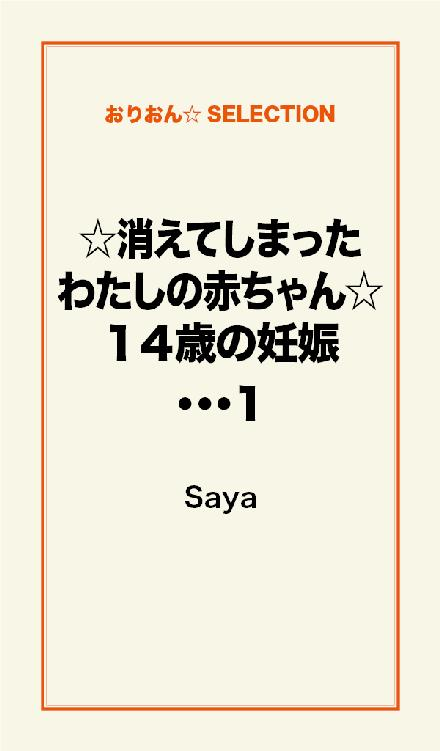

| ☆消えてしまったわたしの赤ちゃん☆ | |
| Saya | |
この本は横書きでレイアウトされています。
また、ご覧になる機種により、表示の差が認められることがあります。

まえがき
わたしの赤ちゃん
わたしはあなたに会いたかった
わたしの腕で
あなたを抱きたかった
わたしの胸から
あなたにおっぱいをあげたかった
わたしの耳で
あなたの声を聞きたかった
わたしの目で
あなたの笑う顔を見たかった
赤ちゃん ごめんなさい
こんなお母さんで ごめんなさい
☆ ☆ ☆
14歳で妊娠した女の子の物語。
本当に伝えたいこと、今の時代に必要な小説をモットーに書きました。
10代はもちろんのこと、すべての年代の方に読んでいただきたい小説です。
☆ ☆ ☆
あなたは命について考えたことがありますか？
あなたはセックスと妊娠について考えたことがありますか？
あなたは赤ちゃんを望んでいますか？
もしも望んでいないのなら、セックスのときに避妊をしていますか？
正しい避妊の方法を知っていますか？
たった一度くらいなら、妊娠しないと思っていませんか？
10代の女の子の体は、毎日が危険日だということを知っていますか？
一日に約80人の10代の女の子たちが中絶している。
ある新聞記事を読んだことが、この小説を書くきっかけでした。
その事実は、あまりにも衝撃的でした。
この小説を読んで、今日も中絶によって失われていくたくさんの命があることを知り、妊娠と避妊、そして無防備なセックスの危険性について、自分自身で考えるきっかけとなることを願っています。
☆ ☆ ☆
第一章・命①
たった一つの命
わたしのおなかのなかに
あなたは宿った
小さな小さな体で
あなたは一生懸命
生きている
わたしのおなかのなかで
生きている
夏休み。
真夏の太陽がじりじりと照りつけている。
わたしは近道を通って、かっちゃんの家へと急ぐ。
ひまわりの植えられた大きな家のそばを通り、角を曲がると、そこはかっちゃんの家。
玄関ドアのベルを鳴らすと、ドアが開いて、かっちゃんが顔を出した。
「おうっ、美里、待ってたぜ」
そう言って、かっちゃんはわたしを家の中に招き入れた。
かっちゃんとわたしは幼なじみ。
小さい頃はよく喧嘩もした。
けれども中学二年生になった頃から、わたしたちの関係は急展開した。
互いに距離を保ちつつも、意識しあうようになり、中二の終業式のときにかっちゃんから告白されて、付き合うことになったのだ。
「おじゃましまーす」
わたしは玄関で靴を脱ぎ、家に上がった。
「あら、美里ちゃん、いらっしゃい」
かっちゃんのお母さんが顔を出した。
かっちゃんのお母さんとも、小さい頃から顔なじみだ。
わたしはかっちゃんと居間に行き、ソファーに腰かけた。
ソファーのそばのミニテーブルの上には、ひまわりの花を活けた花瓶が置かれている。
すぐそこのご近所さんから、もらったのだろう。
かっちゃんのお母さんが、冷たいジュースをグラスにそそいで、わたしたちのところに持ってきてくれた。
「ありがとう」
わたしはジュースを受け取った。
「じゃあ、ゆっくりしていってね」
かっちゃんのお母さんが笑顔で言った。
「はい」
わたしも笑顔でうなずいた。
かっちゃんのお母さんがおぼんを持って、こちらに背を向けたすきに、わたしとかっちゃんはこっそりキスをした。
わたしたちはジュースを飲みながら、雑談をした。
「美里は今年の夏休みは、どっか行く予定？」
「ううん。特に予定なし」
「おれもなし」
「じゃあ、夏休みが終わるまで、かっちゃんの家でデートできるね～」
「うん、そうしようぜ」
それからかっちゃんは辺りを見回し、お母さんが近くにいないのを確認すると、わたしの耳元で何かささやいた。
「えっ？ 何？ よく聞こえない」
わたしがそう言うと、かっちゃんはさっきよりもやや大きめの声で、もう一度ささやいた。
「今度の日曜日、親が出かけるんだ」
「それがどうしたの？」
わたしはきょとんとして言った。
かっちゃんは再び、耳元でささやいた。
「だから......、今度の日曜日におれの部屋、来る？」
「えっ......？」
わたしはどきっとした。
これって、もしかして......。
「そろそろかなって、思ってさ」
かっちゃんはいたずらっぽくわたしの目を覗きこんだ。
「えっ......、でも......」
「美里は、おれのこと好き？」
「好きだけど......」
「おれも好きだぜ」
かっちゃんは再び、お母さんが見ていないことを確認してから、わたしにキスをした。
「だから考えといて」
「う、うん......」
いつかは誘われると思っていた。
でもこんなに突然、そのときが来るなんて......。
付き合い始めて、四ヶ月ちょっと。
キスしたのは、付き合って一ヶ月目くらいのとき。
もちろんファーストキス。
でもセックスはまだしていない。
初めてのときは、痛いらしいと聞いた。
血が出ることもあるらしい。
だからちょっと怖い気もする。
わたしの心の中は、二つの想いがある。
一つはかっちゃんが大好きな気持ち。
かっちゃんがしたいことなら、わたしもしてみたいという気持ち。
もう一つはまだ早いのではないかと迷う気持ち。
経験がないことへの不安な気持ち。
自分の裸を見られる恥ずかしい気持ち。
でも......、やっぱりかっちゃんが好きな気持ちのほうが強い。
もし断って、かっちゃんに嫌な顔をされたら......。
そんな不安が胸をよぎる。
それにやってみたら、そんなに大変なことじゃないかもしれない。
むしろすごく幸せなことなのかもしれない。
大好きなかっちゃんとなら、きっと......。
だから勇気を出して、うんと言ってみようかな......。
わたしのその決断が、その後どんなできごとをもたらすのか、そのときわたしは考えてもみなかったのだった。
日曜日、わたしはかっちゃんの家に行った。
家の中にはかっちゃんの他に誰もいない。
廊下を歩くかっちゃんとわたしの足音だけが、妙に大きく響く。
今日のかっちゃんは、いつもとちょっと様子が違う。
何だか少し緊張しているみたいだ。
わたしも緊張している。
だってこれから、初めてかっちゃんとセックスするのだから......。
階段を上って、かっちゃんの部屋へと一歩近づくたびに、心臓がますますどきどきしてくる。
かっちゃんの部屋は、いつもよりもかたづいていた。
わたしが来るから、珍しく掃除をしたのかもしれない。
部屋に入ると、かっちゃんはドアを閉めた。
ドアがカチャンと閉まる音が、静まり返った家の中に響き渡る。
「マジでいいかな......？」
かっちゃんがおずおずとわたしにたずねた。
「うん......」
わたしは小さくうなずいた。
「ありがとう」
かっちゃんはわたしをぎゅっと抱きしめた。
「おれ、マジで美里のこと好きだから。優しくするから、安心しろ」
「うん......」
それからかっちゃんは部屋のカーテンをさっと閉めた。
部屋の中は少し薄暗くなった。
わたしたちはかっちゃんのベッドの上に座り、恥じらいながら、互いの服を脱がせあった。
初めて見る異性の体にどきどきしながら、わたしたちはキスしあって、愛撫しあった。
緊張をほぐすために、わざとくすぐったいふりをして笑ってみたりした。
だんだん体が熱くなって、あそこが濡れてきて――そしてかっちゃんがわたしのなかに入ってきた――。
最初はやっぱり少し痛かった。
でもわたしは大好きなかっちゃんとセックスできて、何だか嬉しいような、ちょっぴり大人になれたようなそんな気持ちがした。
しかしわたしはある大切なことを忘れていた。
わたしたちはそのとき、避妊をしなかったのだ――。
夏休みはかっちゃんとデートをしたり、夏休みの宿題をしたりして過ごした。
かっちゃんと過ごす時間はいつも楽しくて、わくわくした。
一緒にいるだけで、幸せな気持ちになった。
あのとき初めてセックスしてから、わたしはかっちゃんと以前よりもっと、心が近づけたような気がする。
わたしは嬉しかった。
そして女になったのだとあらためて実感した。
けれども女になること。
わたしはその意味を深く考えてはいなかった。
思春期は子供と大人の境目。
女の子は生理が始まり、体つきがどんどん女らしくなっていく。
第二次成長期に入ると、体はもう子供ではない。
つまり妊娠できる体だということ。
一方、男の子の体の中では精子が作られるようになり、体つきがどんどんたくましくなっていく。
そして男の子は、女の子を妊娠させられる体になる。
わたしの体に異変が起きたのは、初めてのセックスのあとから三週間ほど過ぎた頃のことだった。
体が疲れやすく、吐き気がし、胃がムカムカする。
最初は夏バテだろうと軽く考えていた。
けれども症状は一向に治まらず、わたしは夏休みが終わる２日前に、近くの病院に行くことにした。
受診したのは内科。
問診のときに最後の生理の日を聞かれ、わたしは生理が遅れていることに気づいた。
まさかと思った。
10代の頃は、生理が不順になりやすい。
ただ遅れているだけだ。
自分にそう言い聞かせたものの、不安はつのる一方だった。
そういえば最近、おっぱいが張っているような気がする――。
そして尿検査と血液検査をし、結果表を見た医者の口から出た言葉は――
「妊娠してますね。早いうちに、産婦人科に行って下さい」
わたしの不安は確信に変わった。
そんな......。
まさか妊娠するなんて......。
しかも初めてのセックスで、妊娠するなんて......。
かっちゃんと抱き合えた喜びは、一瞬のうちに後悔へと変わった。
あのとき、どうして避妊をしなかったんだろう......。
かっちゃんにコンドームをつけてもらえばよかったのに......。
どうして......、どうして......。
妊娠の事実。
その事実を受け止めるには、わたしはあまりに幼すぎた。
大人でもなく、子供でもない。
だがわたしの体は、すでに女になっていた。
それはかっちゃんも同じ。
かっちゃんの体も男になっていたのだ。
そしてセックスして、かっちゃんの精子がわたしの卵子と出会い、受精して、赤ちゃんができたのだ。
セックスしたとき、わたしは妊娠することなんて考えなかった。
セックスすれば、妊娠の可能性があることくらい知っていたはずなのに、それを自分のこととして考えたことがなかった。
わたしはあまりにも無知だった。
おそらくわたしだけでなく、多くの10代の女の子たちがそうなのだと思う。
わたしの周りにいる人たちのなかには誰も、避妊の重要性をしっかりと教えてくれる人はいなかった。
学校ではあくまで授業として習っただけ。
お母さんは恥ずかしがって、きちんと話してくれたことはない。
たった一度のセックスでも、精子と卵子が出会うタイミングが合えば妊娠する。
それに排卵日を予測することは難しい。
セックスの刺激で、突然排卵してしまうことだってある。
だからたとえ生理中であっても、妊娠する可能性はあるのだ。
10代の女の子には、安全日など存在しない。
避妊をせずに、無防備でセックスすれば、いつでも妊娠する可能性がある。
そのことを知っている女の子が一体どのくらいいるだろうか。
１回のセックスで放出される精子の数は約三億。
そして生き残る精子の寿命は、3日から長いものは7日まで。
だからセックスしたときに女の子が排卵していなくても、精子が生きているうちに排卵すれば、妊娠してしまう。
一回くらい避妊しなくても大丈夫。
どうせ妊娠しないだろう。
そう思っていては、望まない妊娠は防げない。
病院からの帰り道、わたしは公園に寄り、ブランコに揺られていた。
家に帰りたくなかった。
両親に妊娠のことを告げるのが怖かった。
まだ14歳の娘が妊娠したと知ったら、お母さんはどんな顔をするだろうか......？
そしてお父さんは......？
それでも家に帰らないわけにはいかない。
何時間も帰って来なければ、心配して病院に電話するかもしれない。
わたしは重い足取りで、家に向かって歩き出した。
「あら、ずい分と時間がかかったのね」
家に帰ってきたとき、何も知らないお母さんは普段どおりの口調でそう言った。
「うん......」
わたしはただうなずくことしかできなかった。
「それでお医者さん、何だって？」
「うーん......、たいしたことないって......」
とっさに口から出た嘘。
「そう、よかった。じゃあ、夏バテしてただけなのね」
お母さんは安心したようにそう言うと、夕食を作る準備をしに台所に行った。
言わなければならないのは、分かっていた。
でも言えない......。
妊娠したなんて、とても言えない......。
わたしは自分の部屋に上がり、ベッドの上に座り込んだ。
こんなことになってしまうなんて......。
一体、これからどうしたらいいんだろう......。
こんなこと、誰にも相談できない......。
どうしよう......。
そして誰にも相談できないまま、夏休みは終わり、わたしは二学期を迎えた。
第一章・命②
つわりをこらえながら学校に行く。
体育は体調が悪いと言って休んだ。
実際、妊娠してから微熱がつづいているので、保健室の先生は風邪だと思ったに違いない。
「美里、なんか体調悪そうだけど、大丈夫か？」
休み時間にかっちゃんがわたしにたずねた。
「うん......」
わたしはうなずいた。
妊娠したことを、かっちゃんはまだ知らない。
知ったら、どう思うだろうか......。
「体力つくもの食べて、よく寝るんだぞ」
かっちゃんはそう言って、わたしの髪をなでた。
学校から家に帰ってきたとき、わたしはお母さんの様子がいつもと違うことに気づいた。
ひどく困り果てたような、やつれた表情をしている。
お母さんはわたしが帰ってくるなり、ダイニングルームの椅子に座らせた。
「美里、あんた、最近様子がおかしいから、病院に連絡してみたんだけど......、」
お母さんの声は、少し震えているようだった。
「妊娠したって本当なの......？」
わたしはごくりとつばを飲み込んだ。
ついにお母さんが知ってしまった。
ずっと隠し通せるなんて、思っていなかった。
隠そうとするなんて、ただ現実逃避をしているだけだと分かっていた。
でもいざお母さんと向かい合うと、言葉が出てこない......。
「相手は克之くんなの......？」
お母さんはわたしとかっちゃんが、互いの家をよく行き来していたことを知っている。
付き合っていることは、お母さんには話していなかったけど、わたしたちが仲が良かったことはよく知っている。
お母さんの問いかけに、わたしはうなずいた。
「克之くんは、このことを知ってるの......？」
わたしは首を振った。
「美里、あしたは学校を休んで、病院に行きましょう」
「あの......、お父さんは......？」
わたしは小声でたずねた。
お父さんに知られたら......お父さんはきっと怒るだろう。
ちょっと宿題をサボったくらいで怒るのだから......、妊娠したなんて知ったら......。
そんなこと、知ったら......。
もしかしたら......かっちゃんを殴りにいくかもしれない......。
「お父さんは、まだ知らない」
お母さんは言った。
「でも話さないわけにはいかないから、あした病院に行って、検査をしてから話しましょう」
わたしはうなずいた。
お母さんに知られたということは、お父さんだけでなく、かっちゃんにも近いうちに、話さなければならないだろう......。
翌日、わたしはお母さんに連れられて、産婦人科に行った。
周りは妊婦さんたちばかりで、落ち着かなかった。
皆、楽しそうに妊婦さん同士でおしゃべりしている。
妊娠して、絶望的なわたし。
妊娠して、幸せそうな妊婦さんたち。
対照的なわたしたちが一つの場所にいる。
看護師から渡された問診表には、出産についての記入欄があった。
出産を希望するのか、それともしないのか。
そのときになって初めて、わたしは赤ちゃんの命をどうするのかは、自分自身にかかっているのだということを自覚したのだった。
ボールペンを握ったわたしの手は震えた。
出産するということは、わたしの体で赤ちゃんをこの世に送り出すこと。
出産しないということは、赤ちゃんの命を生まれる前に絶ってしまうということ。
まだ14歳で、中学校さえ卒業いないわたし......。
働ける年齢にもなっていないわたしが、赤ちゃんを産むことなどできないことは分かっていた。
産んだとしても、自分の力で育てられないことは分かっていた。
けれどもそのとき、わたしは出産しないほうにしるしをつけることはできなかった。
今この場で、決断することはできなかった。
お母さんはそのときすでに、わたしに中絶させることを考えていたのだと思う。
中学生が母親になるのは無理だと考えていたのだと思う。
でもお母さんは震えるわたしの手を見て、無理やり記入させようとはしなかった。
結局、出産については未記入のまま提出した。
内科のときと同じように、尿検査のため、トイレに行き、尿を取った。
それから名前を呼ばれて、診察室に入った。
この前は内科に行った。
産婦人科で診てもらったら、もしかしたら妊娠は間違いかもしれない......。
そんな淡い期待が胸をよぎる。
だが尿検査だけでも、妊娠したかどうかは十分判断できるのだ。
初めての内診。
わたしは内診室でショーツを脱ぎ、スカートをまくりあげて、奇妙な椅子のような形をした内診台の上に乗った。
腰から向こう側は、カーテンで仕切られていて見えない。
椅子が上昇し、後ろに倒れていく。
それとともにわたしの足が開いていく。
触診。
アソコに医者が手の指を入れ、もう片方の手でおなかの上から少し圧迫する。
診察とは分かっているものの、恥ずかしくてたまらなかった。
かっちゃんに見られるだけでも恥ずかしかったのに......。
そのあとは、中を観察するための器具を入れられた。
次に、超音波検査が行われた。
棒状の超音波器具をアソコに入れて、子宮の内部を見る。
器具を入れられ、少し痛みを感じ、目を少し閉じかけたとき、内診台の横のモニターにエコー画像が映った。
わたしは目を開けて、エコー画像を見た。
初めて見るわたしのおなかのなかの画像。
そこには、小さな小さな赤ちゃんがいた。
かっちゃんと初めてセックスしたときにできた赤ちゃんが。
わたしとかっちゃんの遺伝子を半分ずつ持っている赤ちゃんが――。
検査のあと、わたしとお母さんは医者から現在妊娠７週目だということを告げられた。
妊娠週数は、最後の生理が始まった日を０日として０～６日までを０週、７～13日までを一週というように数えていく。
わたしは黙って、医者の話を聞いていた。
やがてお母さんが中絶手術について質問し、医者が説明を始めた。
中絶できるのは母体保護法により、妊娠21週６日までとなっていること。
法律で認められている中絶理由は二つある。
少し難しい言葉になるけれど、一つ目は妊娠の継続や分娩が身体的、または経済的な理由で健康を損なう恐れがある場合。
二つ目は暴行や脅迫によって、レイプされて妊娠した場合。
妊娠11週目頃までの妊娠初期の中絶方法は、吸引法（きゅういん法）と掻爬法（そうは法）がある。
お産の経験がない人は子宮口が硬いので、まず前日にラミナリアという棒状のスポンジのようなものを子宮口に入れて、子宮の入り口をゆっくり開く処置をする。
そして翌日、胎児（赤ちゃん）を母体から取り出す手術が行われる。
吸引法は細い棒の形をした掃除機のような器具を子宮に入れて、胎児とその付属物、子宮内膜を吸い出す。
掻爬法は医者が器具を使って、手探りで胎児と付属物を取り出し、最後に子宮内膜を掻き出す。
中絶手術は、もちろんリスクもある。
ときには子宮に穴が開いて、手術後に治療が必要になったり、細菌に感染してしまうこともある。
それ以降の妊娠中期になると、胎児が大きくなってきているため、陣痛をつけて、お産をするような形で胎児を出す。
初期の中絶方法と同じく、前日にラミナリアで子宮の入り口を広げる。
そして翌日にプレグランディンという、子宮を収縮させる劇薬扱いの薬を入れて、人工的に陣痛をおこさせる。
「出産を希望されない場合には、なるべく早めに中絶したほうが、母体への負担が少なくなります」
医者はわたしたちに説明した上で、最後にそう言った。
中絶――。
その言葉を、自分の耳で聞く日が来るなんて......。
わたしとお母さんは病院を出てから、一言もしゃべらずに家に帰った。
重苦しい気持ちで、胸が苦しかった。
今夜、お父さんが帰宅したら、妊娠のことを話さなければならないだろう。
そして近いうちにかっちゃんにも......。
わたしは自分の部屋に上がり、ベッドの上に腰かけた。
わたしは中絶しなければならないのだろうか。
おなかにそっと手を当てた。
病院で見た小さな赤ちゃんのエコー画像が目に浮かんだ。
このなかに赤ちゃんがいる――。
わたしが動いているときも、息をすっているときも、ごはんを食べているときも、お風呂に入るときも、どんなときもわたしと一緒にいる。
わたしと赤ちゃんはへその緒でつながっている。
わたしからもらう栄養分で、赤ちゃんは生きている。
妊娠したと知ったとき、わたしの心は後悔と不安と絶望でいっぱいだった。
しかし今のわたしの心には、まったく別の感情が生まれようとしていた。
実際にこの目で赤ちゃんの画像を見たことで、自分の体のなかにもう一つの命があることを実感した。
赤ちゃんにとって、わたしはたった一人のお母さんなのだと――。
今もまだとまどいはある。
でも......赤ちゃんは生きている。
わたしのおなかのなかで一生懸命生きている。
赤ちゃんを産みたい......。
わたしの赤ちゃんを産みたい。
そう思った。
でも......、みんなは産むなと言うだろう......。
育てるのは無理だと言うだろう......。
でも......、赤ちゃんを堕ろしてしまうなんて......。
赤ちゃんの命を絶ってしまうなんて......。
そんなの、できない......。
絶対に、いや......。
わたしの赤ちゃん。
わたしのおなかのなかで生きている、たった一つの命。
このときは本気で産みたいと思っていた。
たとえ反対されても――。
第一章・命③
夜になって、お父さんが帰宅した。
おそらく一階では、お母さんがわたしの妊娠のことをお父さんに話しているのだろう。
わたしは自分の部屋にこもっていた。
お父さんと顔を合わせるのが怖かった。
けれどもいつまでも、そうやって隠れているわけにはいかなかった。
お母さんが二階に上がってきて、わたしにお父さんと話すようにと言った。
わたしは重たい足を引きずるようにして、階段を一段一段下り、一階のお父さんがいる居間に行った。
居間に入ると、ソファーに座っているお父さんの後姿が見えた。
わたしはうつむいて、ソファーのあるところまで行き、お父さんからできるだけはなれたところに座った。
お父さんが厳しい目でわたしを見ている。
お父さんの視線が痛かった。
お父さんから怒鳴られる。
そう思っていた。
けれどもお父さんは怒鳴らなかった。
それはお父さんのショックの大きさを表していた。
「それで、相手の男の子にはもう伝えたのか？」
お父さんは低い声でたずねた。
「まだ......。あした、学校の帰りに話す......」
わたしは小声で返事をした。
「これからのことは、分かってるね？」
お父さんは言った。
「中絶するなら、早いほうがいい。できるだけ早く病院に予約して、堕ろしなさい」
「いやだ」
わたしはさけんだ。
「いやだと？ 何を言ってるんだ！」
お父さんは声を荒げた。
「この年で妊娠したうえに、産む気か！？ 一体、何を考えてるんだ！！」
「辛いのは分かるけど、こうするしかないの」
お母さんはわたしに言い聞かせるように言った。
「美里はまだ中学生なの。卒業して、これから高校にだって行かないといけないし、赤ちゃんを産めないことは分かるでしょう？」
「でも......、赤ちゃん、生きてるんだよ......」
わたしはすすり泣いた。
「中絶するなんて、いやだ......！」
「おまえはまだ中学生なんだ。産むなんて、絶対に許さないからな！」
「美里、よく考えてみて。育てられないのに、産むわけにはいかないの」
「そもそも中学生同士で、男女関係になるとはけしからん！」
お父さんの声には、激しい怒りを感じる。
「まさか中学生でこんなことになるなんて......」
お母さんはため息をついた。
「どうせ遊びで誘われたんだろ。とんだ不良と付き合ったもんだ。そんなやつとは、もう別れろ」
「美里、赤ちゃんができるようなことなんて、大人がすることよ」
避妊をしなかったのはわたしとかっちゃんのせい。
わたしとかっちゃんが真面目に避妊のことを考えなかったせい。
だから赤ちゃんができてしまった。
でもわたしは遊びでセックスしたんじゃない。
言われたとき、確かに迷いはあった。
早すぎるんじゃないかと思った。
でもそれでもしたいと思ったのは、かっちゃんのことが好きだったから。
かっちゃんもわたしのことが好きだって言ってくれたから。
好きだから、恋人とセックスしたいって思うのは、自然なことじゃないの......？
大人になるまで、したらいけないことなの......？
大人はいつもそう。
まだ子供だからと言って、セックスについて語ろうとしない。
隠すことばかり考えている。
でも大人が本当にわたしたちに伝えるべきことは、そういうことじゃないはず。
性のことを、大人がきちんと教えてくれていたら、わたしはもっと気をつけていた。
自分の体のことを知り、妊娠や避妊のことを自分の問題として受け止めることができていたはず。
ただするなと言うのではなく、きちんとリスクを教えてほしかった。
翌朝、わたしは目覚めると、パジャマから制服に着替えた。
おっぱいが張って、ブラジャーがきつく感じる。
鏡の前に座り、髪をとかしながら、わたしはため息をついた。
今日こそ、かっちゃんに話さなければならない......。
事実を伝えたら、かっちゃんはどんな顔をするだろう......。
もしかしたら......、かっちゃんはわたしの気持ちを分かってくれるんじゃないだろうか......。
産みたいっていう気持ちを、分かってくれるんじゃないだろうか......。
「おうっ、美里！」
学校の校門のそばまでやってきたとき、後ろからかっちゃんがわたしの肩にふれた。
わたしは振り返った。
「かっちゃん、おはよう」
わたしはなるべく普段通りをよそおって言った。
「美里、相変わらず、元気なさそうだなぁ。ほら、元気をやるよ」
そう言って、かっちゃんはわたしの唇にキスをした。
「こらーっ！ そこの二人、そんなところでいちゃいちゃすんな！」
校門のそばに立っていた先生が注意した。
「先生、おれたち超ラブラブなんです。キスくらいしたって、いいじゃないですか」
かっちゃんはめげずに、わたしの肩に腕を回して、先生にさけび返した。
「ヨーロッパでは、キスは挨拶ですよ～」
「ここは日本だ！ キスは、人のいないところでしろ！」
「はーい。先生も早くいい人見つけて下さいね」
「余計なお世話だ！」
かっちゃんなら......、もしかしたら産んでもいいって、言ってくれないかな......。
高校に行かずに働いて、一緒に育てようって、言ってくれないかな......。
わたしの胸にわずかな希望の光が差した。
しかし放課後、わたしは現実は甘くないことを知る。
学校からの帰り道、わたしは話があると言って、かっちゃんを公園に連れて行った。
人気のないところまでやってくると、わたしたちはベンチの上に並んで腰かけた。
「美里、一体話って何？」
かっちゃんがのんきな顔でたずねた。
「あのね......、すごく真面目な話なんだけど......」
わたしは膝の上に乗せた手を握りしめた。
「別れ話なら聞かないからな」
かっちゃんは陽気に言った。
「おれ、美里と別れる気ないし」
「実は......、その......、」
わたしは顔を上げて、かっちゃんの顔を見た。
「できちゃったの......」
「できたって何が？」
「赤ちゃん......」
かっちゃんの表情が一転した。
かっちゃんは驚いたような、困惑したような目で、わたしを見つめた。
「マジで......？」
「うん......」
「そうか......」
しばし張り詰めたような沈黙が流れた。
「それで......、美里の親は知ってるのか......？」
再び口を開くと、かっちゃんはたずねた。
「うん......。きのう、お母さんと産婦人科に行ったの......」
わたしは言った。
「それで......、親は何て......？」
「親は中絶しろって言ってる......。でもね......、わたし......、わたしは......産みたいって思ってるの......」
わたしはやっとのことで、自分の気持ちを言葉にして声に出した。
そしておずおずとかっちゃんの目を見た。
目と目が合った。
「ごめん......」
かっちゃんはわたしから目をそらした。
「おれは......、産むことには賛成できない......」
わたしは地の底に突き落とされた気持ちだった。
もしかしたらかっちゃんなら、わたしの気持ちを分かってくれるのではないかという最後の希望の光は、かっちゃんの言葉によって完全に消えてしまった。
「どうして......？」
わたしは震える声でたずねた。
「考えてみたら分かるだろ？」
かっちゃんはわたしから目をそらしたまま言った。
「おれたち、まだ中学生なんだ。おれたちで育てられるわけない。それに高校受験のことだってあるし、子供が生まれたら困るってことは、美里だって分かるだろ？ おれたちには、これからの人生があるんだ」
「でも......、赤ちゃん、生きてるんだよ......」
「美里、子供は堕ろすしかない。現実を見ろよ」
「かっちゃん、ひどいよ......！」
わたしの目から涙が零れ落ちた。
「そんなの無責任だよ......！ 赤ちゃんがかわいそうだよ......！」
「育てられないのに産むほうが、よっぽど無責任じゃないか！」
かっちゃんは強い口調で言った。
「あのとき、避妊しなかったことは謝る。たった一回くらいでできるなんて、思いもしなかった......。でも、子供は堕ろしてくれ」
「かっちゃんのバカ......！」
わたしは泣きながら立ち上がると、かっちゃんの頭にカバンをぶつけた。
「かっちゃんは赤ちゃんのお父さんなんだよ！ 赤ちゃんにとって、たった一人のお父さんなんだよ！ そんなこと言われて、赤ちゃんがかわいそう......。かっちゃんは男だから、わたしの気持ちが分からないんだよ！ わたしは今も赤ちゃんと一緒にいるの！ どんなときも一緒にいるの！ 赤ちゃんと一緒に生きてるの！！」
わたしは泣きながら、かっちゃんを公園に残したまま、一人で家に帰った。
かっちゃんはわたしを追いかけてはこなかった。
現実を見ろというかっちゃんの言葉。
育てられないのに産むほうが、無責任だというかっちゃんの言葉。
かっちゃんの言葉は、正しいのだろう......。
でもわたしは、かっちゃんがおなかのなかの赤ちゃんのことを、一つの命として見てくれていないことが辛かった。
わたしたちの赤ちゃんなのに、簡単に堕ろせと言うかっちゃんを許せないと思った。
家に帰ってからも憂鬱だった。
夕食のあと、お母さんから部屋に呼ばれて、今赤ちゃんを産むわけにはいかないことを延々と聞かされた。
わたしはこれから中学校を卒業して、高校に行き、大学に行き、そして社会人になる。
これからのわたしの人生のために、赤ちゃんは産めないのだと。
お母さんはわたしの人生のことばかり言う。
それなら赤ちゃんの命はどうなるの？
懸命に生きているのに、わたしの人生のために命を失わなきゃいけないの......？
お父さんとは話をしても、すぐに喧嘩になってしまった。
お父さんは早く中絶しろとしか言わない。
おそらくお父さんのことだから、近所に娘の妊娠を知られた場合の世間体も考えているのだろう。
それにお父さんにとっては、中学生でセックスしたこと自体、けしからんことなのだ。
かっちゃんとはあのとき公園で話して以来、一言も口を利いていない。
学校で顔を合わせても、すぐに目をそらして、どこかに行ってしまう。
わたしは悲しかった。
男なんてそういうものだと聞いたことはあった。
交際が順調なときは、好きだと言って、優しくする。
でも自分にとって都合が悪いことが起きたとたん、急に態度が変わる。
かっちゃんはそんな人ではないと思っていたのに......。
数日後、かっちゃんの両親がかっちゃんを連れて、わたしの家にやってきた。
わたしの両親に謝りにきたのだ。
わたしの両親とかっちゃんの両親はご近所なので、もちろん顔見知りだ。
二組の親たちの間には、重々しい空気が流れていた。
かっちゃんは相変わらずわたしと目を合わせようとはしない。
まるでわたしと目が合うのを怖れているみたいだ。
「うちのバカ息子がお宅の大事なお嬢さんを妊娠させてしまい、申し訳ありません」
かっちゃんのお父さんとお母さんが、わたしの両親に頭を下げている。
「まったくだ」
わたしのお父さんは不機嫌そうに、一言そう言った。
お母さんはどう言葉を返せばいいのか分からない様子だ。
「申し訳ありません。どうお詫びしたらいいものか......」
「お宅の息子さんには、しっかり教育をしていただきたいですな。中学生でこんなことになるとは」
「はい。本当に申し訳ありません。息子も反省しております。こらっ、おまえも謝れ」
かっちゃんのお父さんは、かっちゃんの頭を床の上に押し付けた。
「すみません......」
かっちゃんの口から、弱々しく言葉がもれた。
「もっと、大きな声で謝れ」
「ごめんなさい......」
「あの......、どうか頭を上げてください」
お母さんがうろたえながら、かっちゃんの両親に言った。
「さぁ、お茶でも飲んで下さい......」
このようなときにお茶をすすめるのは、その場の空気からして、明らかに変だったが、お母さんも何か言わなくてはと思ったのだろう。
かっちゃんの両親は頭を下げながら、お茶を一口すすった。
二組の親たちの様子を見ながら、わたしの心の中に疑問が湧き上がった。
みんな、わたしが妊娠したのを、かっちゃんのせいにしている。
でもこれって、おかしいんじゃないの......？
まるでこれじゃ、かっちゃんがわたしをレイプしたみたいじゃないの......。
「あの......」
わたしは立ち上がると、かっちゃんの両親に言った。
「かっちゃんばかり責めないで下さい。かっちゃんのせいだけじゃないんです。わたしがあのとき、うんって言ったから......、こういうことになったんです......」
かっちゃんの両親は顔を見合わせた。
思いがけないわたしの発言に、言葉が出ない様子だ。
わたしのお父さんは半ば呆れたように、わたしをにらんでいる。
かっちゃんは顔を上げ、初めてわたしの目を見つめた。
わたしはなおも言いつづけた。
「かっちゃんは無理やりしたんじゃないんです。好きだから......、二人でしたいって思ったから、こうなったんです......。そして避妊をしなかったから......、避妊のことをちゃんと考えなかったから......、赤ちゃんができちゃったんです......」
二組の親たちの間には、困惑の色が広がっていた。
かっちゃんはまだわたしの目を見つめている。
「美里、もういいから、あっちに行ってなさい」
お母さんがわたしの背中を押したので、わたしは押し出されるようにして客間から出た。
わたしは間違ったことは言っていない。
ただ思ったことを言っただけだ。
かっちゃんだけが責められるのは、おかしいと思った。
赤ちゃんができたのは、二人の責任だから。
大人たちには、わたしの気持ちを少しでも分かってもらうことはできたのだろうか......。
翌朝、学校でかっちゃんと顔を合わせたとき、かっちゃんはわたしに近づいてきて、小声でこう言った。
「昨日は、ありがとう......」
「わたしはただ......、思ったことを言っただけだから」
わたしはかっちゃんに言った。
「うん......」
かっちゃんはうなずいた。
「あのさ、美里......、」
「何？」
「あれからいろいろ考えたけど......、やっぱり子供は堕ろすしかないよ......」
「やめて！」
わたしは耳をふさぎ、かっちゃんのそばからはなれた。
みんな、赤ちゃんを堕ろせと言う。
お父さんも、お母さんも、かっちゃんも......。
もうそんな話は聞きたくない......！
わたしの産みたい気持ちを、どうして誰も理解してくれないの？
学校では、かっちゃんから赤ちゃんを堕ろせと言われた。
家に帰れば毎晩、両親から中絶しろと言い聞かせられる。
わたしが産みたいと主張しても、両親はまともに聞いてくれない。
わたしの精神は疲れ果て、ぼろぼろになりそうだった。
一体、どうすればいいの......？
赤ちゃんを産んだらいけないの......？
わたしは産みたいのに......。
そしてそれから四日後、ついにお母さんがわたしにこう告げた。
「あした病院に行って、手術をする日を決めましょう」
「いや......！」
わたしは必死で首を振った。
「いつまで、そんなこと言ってるの！」
お母さんはわたしの両腕をぐいっとつかんだ。
お母さんの目は、今まで見たことがないくらい厳しく、強い感情がみなぎっていた。
「赤ちゃんは諦めなさい。美里のためを思って言ってるの。周りから望まれていないのに赤ちゃんが生まれてきても、幸せになれると思う？ 克之くんと克之くんのご両親だって反対してるのよ」
「でも......」
「たった一人で赤ちゃんを育てられるの？ 美里が大人になっていれば、一人でも育てられるかもしれない。でも美里はまだ14歳なの。中学三年生なの。15歳で赤ちゃんを産んで、どうやって養っていくの？ 誰も協力してくれないのに、どうやって育てていくの？ 赤ちゃんの世話をしながら、どうやって仕事を見つけるの？ お父さんがいない子供を育てる大変さが分かる？ これからの人生を何もかも捨てて、赤ちゃんのために生きていく覚悟はあるの？ ただ産みたいという気持ちだけでは、赤ちゃんは育てられないの！！」
わたしはお母さんに言い返せなかった。
ちゃんと育てられると、自信を持って言うことができなかった。
泣きながらお母さんの言葉を聞いていることしかできなかった。
産みたいという気持ちだけでは、赤ちゃんを育てることはできない。
親の同意と協力がなければ、今のわたしには赤ちゃんを育てられない。
それが現実なのだと、わたしは悟った。
その悲しい現実を、わたしは泣きながら、黙って受け入れるしかなかった。
かっちゃんと愛し合って、赤ちゃんができた。
たった一つの命がわたしのおなかに宿った。
わたしは赤ちゃんをこの世に送り出したかった。
だが現実は、それを許さなかった。
数日後、わたしは一度も抱いてあげることさえできずに、赤ちゃんとお別れすることになったのだ。
第二章・涙①
涙 涙 涙
涙が止まらない
ごめんなさい
ごめんなさい
流れ落ちる
いくつもの悲しみの涙
手術前日の夕方からわたしは、病院に入院することになった。
手術前の処置として、子宮口にラミナリアを入れられ、すごく痛い。
一晩かけて、子宮口をゆっくり開くのだ。
手術が終わるまで、飲み食いは禁止されている。
わたしは病室のベッドの上に横になった。
白の枕の上にいくつもの涙の雫がしみこんでいく。
お母さんは面会時間が終わるまで、わたしに付き添っていてくれた。
少しでも痛みが減るようにと、わたしの背中を優しくさすってくれた。
けれどもお母さんの心遣いさえも、暗黒のようなわたしの心には、何のなぐさめにもならなかった。
明日が来るのが怖かった。
いっそ、夜が明けないでほしいと願った。
しかし夜は明けて、必ず朝が来る。
手術当日。
お母さんは付き添いのため、早朝から病院に来てくれた。
手術は午前中に行われる。
わたしは手術衣に着替えるように言われ、パジャマと下着を脱いで、手術衣に着替えた。
着替え終わると看護師がやってきた。
わたしは注射を打たれ、それから点滴をされた。
何もかもが現実感を失い、自分のことではないように思える。
今こうして病院にいることも。
これから手術を受けることも。
赤ちゃんを失ってしまうことも。
いよいよわたしは手術室へと連れられていった。
手術室に入り、手術台の上に乗せられた。
あとから知ったことだが、手術室は分娩室としても使われ、手術台は分娩台としても使われる。
同じ一つの場所で、生まれてくる赤ちゃんと消えていく赤ちゃんがいるのだ。
わたしの胸には心電計、腕には血圧計を取り付けられ、新たな点滴をされた。
足は大きく広げられて固定され、腕も固定された。
まるでまな板に張り付けられているような感じだ。
そのときになって、急に何もかもが現実味をおびてきた。
わたしの目の前でおきていることも、わたしの体に取り付けられたいくつもの医療器具も、これからわたしの体から赤ちゃんがもうじき取り出されてしまうことも......。
わたしは急に怖くなってきた。
「不安だと思いますけど、大丈夫ですよ。すぐに終わりますからね」
看護師が安心させるように、わたしに言った。
でもわたしは手術が怖いんじゃない......。
もちろん、手術そのものも不安ではあるけれど、それよりも赤ちゃんを失ってしまうことが怖い......。
数分後に医者がやってきて、わたしの名前をフルネームで呼んだ。
わたしは声を振り絞って「はい」と答えた。
「では、始めましょう」
医者が言った。
手術台がかなりの高さまで上がった。
ライトが調節され、子宮口を開くためにきのう入れたラミナリアとガーゼが抜かれる。
医者が点滴に麻酔薬を入れるように、看護師に指示する声が耳に聞こえた。
「それでは、麻酔をします」
看護師が言った。
赤ちゃん、さようなら。
心の中でそう言ったとたん、点滴の管に麻酔が注入され、わたしの意識は一気に遠のいていった。
何かの上に乗せられて廊下を渡り、どこかの部屋に入って、再び何かの上に乗せられたのをおぼろげに覚えている。
だんだん麻酔が切れてきた。
少しずつ意識がはっきりしてきて、わたしはベッドの上に寝かせられていることが分かった。
ベッドの脇にはお母さんが座り、わたしの手を握ってくれている。
手術は終わったのだ。
わたしのおなかのなかに、赤ちゃんはもういない......。
赤ちゃんはもう生きていない......。
わたしの目から涙がどっと溢れ出た。
赤ちゃんを失ったという現実が胸を襲う。
開いていた子宮口が縮まり出したため、おなかが痛くてたまらない。
だがおなかの痛みよりも、心の痛みのほうが何倍も大きい......。
おなかの痛みは時間がたてば消えるけれど、心の痛みは一生消えない......。
赤ちゃん、ごめんなさい。
産んであげられなくて、ごめんなさい。
ごめんなさい......。
わたしは赤ちゃんを想って泣いた。
おなかの痛みに耐えながら、何度も何度も赤ちゃんに謝った。
そんなわたしを見て、お母さんは耐えられない様子で、目頭を押さえている。
お母さんは握ったわたしの手を、何度も優しくなでてくれた。
数時間後、術後検査のため、医者が病室にやってきて、内診が行われた。
手術のときに入れられたガーゼが抜き取られた。
ガーゼは血の色に染まっていた。
術後は順調とのことだった。
医者から帰宅の許可が出されると、わたしは着替えて、薬をもらい、お母さんの運転する車に乗って、家に帰った。
車から降りて、家の方を見たとき、わたしは門のところにかっちゃんが立っていることに気づいた。
「美里、手術大丈夫だったか？」
かっちゃんはおずおずとたずねた。
わたしは返事をしなかった。
赤ちゃんをただ堕ろせとしか言わなかったかっちゃんと、話をする気になんてなれなかった。
かっちゃんにとっては、赤ちゃんはどうでもいい存在だったのだろう......。
わたしはかっちゃんを無視して、門を開けた。
「克之くん、美里は手術したばかりで具合が悪いから、今日は帰ってくれる？」
お母さんがかっちゃんに言っている。
玄関ドアの取手にふれたとき、かっちゃんの声が後ろから聞こえてきた。
「美里、ごめん......」
「謝るなら、わたしじゃなくて、赤ちゃんに謝ってよ！」
わたしはかっちゃんに言葉をぶつけると、大きな音をたててドアを閉めた。
そしてドアを閉めると、声を上げて泣いた。
赤ちゃんは消えてしまったのに、わたしだけが生きている。
その現実はあまりにも辛く、悲しかった。
家に帰ってからは、自分の部屋で安静にしていた。
お母さんは優しくしてくれた。
お父さんでさえ、いつもよりずっと優しかった。
けれどもいくら優しくされても、心は辛くなるばかりだ。
赤ちゃんを産んであげられなかった。
わたしが赤ちゃんの命を奪ってしまった。
一度も会うことさえできずに――。
一度も抱いてあげることさえできずに――。
罪悪感にさいなまれる。
本当は産みたかった。
抱っこしたかった。
おっぱいをあげたかった。
それなのに......。
夜になり、ベッドに入った。
病院のベッドの感触を思い出し、涙がこぼれる。
涙を流しながら、わたしはいつの間にか眠りに落ちていった。
夢の中で、わたしは暗闇の中を歩いていた。
小さな光が見える。
その光に近づくと、光の中にかわいい赤ちゃんがいた。
わたしは光の中に入り、赤ちゃんを抱こうとした。
しかしそのとたん、光とともに赤ちゃんは消えてしまい、わたしは暗闇の中に一人で取り残された。
目を覚ますと、まくらが涙でぐっしょり濡れていた。
わたしは赤ちゃんを抱けない夢を、その翌日も見た。
赤ちゃんはわたしを怒ってる。
そう思った。
産んであげられずに、命を奪ってしまった。
わたしのおなかに宿ったのに......。
この世に生まれてこようとしていたのに......。
わたしは赤ちゃんに恨まれて当然のことをしてしまった......。
赤ちゃん、ごめんなさい。
ただ謝ることしかできない......。
第二章・涙②
手術の日から二日後、検診のため、わたしは再び病院に行った。
初めて受診したときと同じように、ショーツを脱いで内診台の上に乗る。
アソコに器具が入り、エコー検査が行われた。
モニターに映し出されたわたしのおなかの中には、赤ちゃんはもういない......。
どうしようもなく、目に涙が溢れてくる。
検査のあと、医者から今後のために、避妊のことを詳しく教えられた。
赤ちゃんを失った今、かっちゃんとセックスする気にはとてもなれなかった。
でも知識として、こういうことは知っておいたほうがいいと思い、わたしは医者の話を聞いた。
「まずはじめに、セックスをしないこと以外に、１００％の避妊法はありません」
医者は言った。
「世間では避妊と思われている外出しでは、避妊できません。勃起したときに、少しずつ性器から精子が出てきているからです。一瞬、入れただけで、妊娠してしまったケースもあります。ペッティングだけでも、精子がつけば、そこから精子が子宮に入ってしまうこともあります。それから生理中は妊娠しないと思っている人が多いですが......生理中でも、妊娠する可能性はあります。セックスの刺激で排卵してしまうことがあるからです。それに生理中のセックスは医学的にはよくないと言われています。生理中にセックスすると、雑菌が入りやすく、炎症を起こしたりすることがあります。それにあまり知られていませんが、子宮内膜症という病気になるリスクが高くなってしまいます」
「そうなんですか」
生理中でも妊娠するなんて、今まで知らなかった......。
「避妊をまったくしなければ、当然のことながら、いつでも妊娠する可能性があります」
医者はつづけた。
「避妊をしない場合、一年間で妊娠する人は85％だと言われています。（一年間に１００人のうち、85人が妊娠する確率）赤ちゃんが出来たら困る人は、必ず避妊をしましょう」
「はい......」
「避妊をしても、１００％妊娠しないとは言い切れません。たとえばコンドームですが、完璧にコンドームを使いこなすのは難しくて、避妊に失敗する人が多くいます。正しくコンドームを使っていても、避妊に失敗する人が３％います。（一年間に１００人のうち、３人が妊娠する確率）ところが実際には、正しくコンドームを使えていない人が多くて、一般的には避妊に失敗する人が14％もいるのです。（１００人のうち、14人、つまり約７人に１人が妊娠する確率）」
「そ、そうなんですか......！？」
わたしはびっくりした。
コンドームをつけていても、そんなに避妊に失敗して、妊娠してしまう人がいるなんて......。
「正しいコンドームの使い方は、必ず男の子が性器を女の子の体の中に入れる前につけなければなりません」
医者はコンドームの使い方を説明した。
「一度入れてしまったあとに、いったん抜いて、精子を放出する直前につけても意味がありませんよ。逆に早すぎてもいけません。男の子の性器が勃起した状態になってからつけましょう。コンドームをはずすタイミングも重要ですね。男の子の性器が小さくなると、精液がコンドームから漏れ出してしまうからです。だからセックスのあとはすぐに性器の根元を押さえながら、コンドームがずれないようにスムーズに抜かなければなりません。避妊の効果を高めるためには、コンドームと一緒に殺精子剤を使うといいですね。でもコンドームは破れることもあります。正しく使えても、破れて精子が漏れ出してしまうことがあることを覚えておいて下さい」
「はい......」
「避妊法には、ピルもあります。ピルは女の子が飲む避妊薬です。避妊法の中でも、一番避妊効果が高いです。ピルを飲んでいる間は避妊効果があり、赤ちゃんがほしいときには、ピルを飲むのをやめれば妊娠できます。ピルを飲むと排卵がなくなります。ピルは、卵巣から分泌されている黄体ホルモンと卵胞ホルモンと同じ物が化学合成されたものです。ですからピルを飲むと、排卵後と同じ状態を作り出します。脳に排卵は済んだと伝えるので、排卵を起こすホルモンが止められます」
「そうなんですか」
「ただしピルは薬なので、飲み始めてから最初のうちは、吐き気や頭痛、乳房の張りなどの副作用が起きる場合があります。しかしこれらの症状があったとしても、２～３周期(三ヶ月ほど)飲みつづけていくうちになくなることが多いです。逆にピルを飲むことによって良いこともあります。生理痛が軽くなり、生理の周期が安定し、子宮内膜症の改善や予防や、卵巣ガンや子宮体ガンの発症低下などがあります。避妊のためには、ピルは飲み忘れないことが大切ですね。避妊の失敗はゼロではありませんが、飲み忘れることなく、毎日正しく飲んでいれば、妊娠する確率は約０．１％です。（一年間で１０００人に１人が妊娠する確率）コンドームに比べるとかなり避妊効果が高いことが分かりますね。ただし、飲み忘れた人も含めると、避妊に失敗して、妊娠する確率は５％になってしまいます。（一年間で１００人のうち、５人が妊娠する確率）」
「はい......。分かりました」
「緊急避妊法というのもあります。これは避妊を忘れていたり、コンドームが破れたり、外れてしまったり、レイプされたりしたときに、妊娠を防ぐ最後の手段です。期限はセックスから72時間以内。早ければ早いほど、避妊の効果は上がります。緊急避妊では、まず産婦人科に電話して、緊急避妊を行っている病院かどうかを確認します。そして確認できたら、すぐに産婦人科に行きます。そしてセックスしてから72時間以内に２錠、さらにその12時間後に２錠、中用量ピルを飲みます。薬を飲むことによって、排卵を止めたり、子宮内膜の状態を変えたりして、妊娠を防ぐのです。ただしこの避妊法はあくまで緊急の場合のみですね。失敗する確率も他の避妊法より高めです。あらかじめきちんと避妊することがとても大切です」
「はい......」
「先ほどピルは高い避妊効果があると言いましたが、ピルは性感染症は予防できません。性感染症の予防のためには、絶対にセックスのときにコンドームをつけましょう。毎日何人の人が日本でHIV（エイズ）に感染しているか知っていますか？」
「いいえ」
あたしは医者の問いかけに首を降った。
「１日に３～４人の人が感染しています」
医者は言った。
「毎日ですか！？」
わたしはびっくりして声を上げた。
「そうです。しかも感染者の80％がセックスで感染しています。普通のセックスだけでなく、オーラルセックスでも感染します。HIVを防ぐためには、セックスしないか、コンドームを正しく使うかしかありません。しかもHIVは感染してから数年間はあまり症状がない期間が続きます。保健所などで検査をすれば分かるのですが、検査をせずにそのまま感染していることに気づいていない人も多いのです。気づかずに無防備な状態でセックスすれば、他の人にも移してしまうかもしれません」
「怖いですね......」
知らないうちに、セックスでHIVが移されてしまうなんて......。
「クラミジアはもっと感染が広がっています。20歳～24歳の女の人の16人に１人が感染していると言われています。次に感染率が高いのは15歳～19歳で、23人に１人が感染していると言われています」
『10代の女の子の間で、そんなに広がっているんですか！」
まさか１クラスに１人の人数で、クラミジアが10代の女の子たちに広がっているなんて......。
「はい、それが実態なのです」
医者はうなずいた。
「クラミジアに感染したまま、放っておくと、女の人の場合、不妊症になったり、子宮外妊娠の原因となってしまいます。最近は、オーラルセックスによって、喉にクラミジアが感染してしまう人も増えていますし。他にも色々な性感染症がありますが、自分自身が感染しないためには、カップルで検査を受けること。そしてコンドームは必ずつけることです」
「はい......」
「最後になりますが、避妊をしていても妊娠する可能性がゼロではないことを覚えておいて下さい。そのことを知った上で、決めるのはあなた自身ですから」
「はい......」
避妊について詳しく知るうちに、わたしは自分があまりにも無知だったことを、ものすごく痛感した。
10代の女の子たちの間では、ときには間違った性の情報が飛び交っている。
セックスのあとに、シャワーでアソコを洗浄すれば大丈夫とか、二回以上すると精子が薄くなって妊娠しないとか、生理中と生理直後は安全とか、セックスのときに女の子が上の体位だと妊娠しにくいとか。
そんな話は、全部デタラメ。
実際に妊娠するまで、わたしは避妊のことを真面目に考えたことがあっただろうか。
かっちゃんにうんと返事をしたとき、なぜ避妊という言葉が思い浮かばなかったのだろうか。
セックスをするとき、女の子の心境は様々。
自分の意思で、大好きな彼氏とする子。
彼氏がしたがるので、とりあえずする子。
男友達とする子。
寂しさから、あまり好きでもない人とする子。
彼氏から嫌われるのではないかと怖れて、を断りきれない子。
周りの子が経験済みだからと、あせってする子。
避妊法を正しく知っている子、そうでない子。
どうせ妊娠しないと思って、避妊しない子。
セックスのことに気がいって、避妊のことまで思いつかない子。
避妊を彼氏まかせにしてしまい、相手に避妊を頼めない子。
自分勝手な彼氏から、強引にレイプされてしまう子。
事情はさまざまだ。
けれどもセックスして妊娠するのはいつも女の子。
産むことができないのに、赤ちゃんができてしまったとき困るのは女の子。
中絶するときに、痛い思いをして手術を受けなければならないのは女の子。
どうか女の子はそのことを忘れないでいてほしい。
自分の体を守れるのは、自分だけなのだと。
そして男の子は女の子のことをよく考えて、大切にしてほしいと思う。
10代の女の子の体は、常に妊娠する可能性があることを知っておいてほしい。
くれぐれも女の子にセックスを無理強いしたりしないでほしい。
生のほうが気持ちいいからという理由で、コンドームをつけるのを拒んだりしないでほしい。
もしも相手の女の子が妊娠してしまい、その子が産むことができない場合、その女の子は辛い想いをして手術台に乗り、中絶手術を受けることになる。
中絶は女の子の心を深く傷つけるのだ。
そして男の子が何より忘れてはならないのは、相手の女の子が中絶しなければならないとき......その子のおなかのなかにいる赤ちゃんは、自分の赤ちゃんだということ。
男の子が実感を持つのは難しいことかもしれないけれど、自分の遺伝子を半分持った自分の赤ちゃんだということだ。
わたしには確実に分かったことがある。
セックスはただしたいという気持ちだけで、すればいいということではないこと。
お母さんは、セックスは大人がすることだと言っていた。
その言葉を聞いたとき、中学生でセックスして何がいけないのかと思った。
愛し合っているのなら、何歳でしてもいいと思った。
今でも、まだ10代だから、セックスしてはいけないとは思っていない。
中学生や高校生のカップルでも、男女の体の仕組みや、妊娠や避妊、病気の危険性についてきちんと勉強し、お互いによく話し合って、二人でしようという結論に達したのなら、それは二人の決断だとわたしは思う。
でもお互いに何もかも未熟なまま、セックスしてしまうのは、どうなのだろうか......？
セックスするということは、責任をともなうもの。
覚悟が必要なこと。
そして結果として生じたことは、すべて自分に降りかかってくる。
わたしのように産むことができないのに赤ちゃんができてしまったとき......たとえば病気に感染してしまったとき......もしもその病気がHIV（エイズ）だったとしたら......、
その結果と責任を受け入れなければならないのは自分自身。
お母さんでも、お父さんでも、友達でもない、自分自身なのだ。
第二章・涙②
手術の日から二日後、検診のため、わたしは再び病院に行った。
初めて受診したときと同じように、ショーツを脱いで内診台の上に乗る。
アソコに器具が入り、エコー検査が行われた。
モニターに映し出されたわたしのおなかの中には、赤ちゃんはもういない......。
どうしようもなく、目に涙が溢れてくる。
検査のあと、医者から今後のために、避妊のことを詳しく教えられた。
赤ちゃんを失った今、かっちゃんとセックスする気にはとてもなれなかった。
でも知識として、こういうことは知っておいたほうがいいと思い、わたしは医者の話を聞いた。
「まずはじめに、セックスをしないこと以外に、１００％の避妊法はありません」
医者は言った。
「世間では避妊と思われている外出しでは、避妊できません。勃起したときに、少しずつ性器から精子が出てきているからです。一瞬、入れただけで、妊娠してしまったケースもあります。ペッティングだけでも、精子がつけば、そこから精子が子宮に入ってしまうこともあります。それから生理中は妊娠しないと思っている人が多いですが......生理中でも、妊娠する可能性はあります。セックスの刺激で排卵してしまうことがあるからです。それに生理中のセックスは医学的にはよくないと言われています。生理中にセックスすると、雑菌が入りやすく、炎症を起こしたりすることがあります。それにあまり知られていませんが、子宮内膜症という病気になるリスクが高くなってしまいます」
「そうなんですか」
生理中でも妊娠するなんて、今まで知らなかった......。
「避妊をまったくしなければ、当然のことながら、いつでも妊娠する可能性があります」
医者はつづけた。
「避妊をしない場合、一年間で妊娠する人は85％だと言われています。（一年間に１００人のうち、85人が妊娠する確率）赤ちゃんが出来たら困る人は、必ず避妊をしましょう」
「はい......」
「避妊をしても、１００％妊娠しないとは言い切れません。たとえばコンドームですが、完璧にコンドームを使いこなすのは難しくて、避妊に失敗する人が多くいます。正しくコンドームを使っていても、避妊に失敗する人が３％います。（一年間に１００人のうち、３人が妊娠する確率）ところが実際には、正しくコンドームを使えていない人が多くて、一般的には避妊に失敗する人が14％もいるのです。（１００人のうち、14人、つまり約７人に１人が妊娠する確率）」
「そ、そうなんですか......！？」
わたしはびっくりした。
コンドームをつけていても、そんなに避妊に失敗して、妊娠してしまう人がいるなんて......。
「正しいコンドームの使い方は、必ず男の子が性器を女の子の体の中に入れる前につけなければなりません」
医者はコンドームの使い方を説明した。
「一度入れてしまったあとに、いったん抜いて、精子を放出する直前につけても意味がありませんよ。逆に早すぎてもいけません。男の子の性器が勃起した状態になってからつけましょう。コンドームをはずすタイミングも重要ですね。男の子の性器が小さくなると、精液がコンドームから漏れ出してしまうからです。だからセックスのあとはすぐに性器の根元を押さえながら、コンドームがずれないようにスムーズに抜かなければなりません。避妊の効果を高めるためには、コンドームと一緒に殺精子剤を使うといいですね。でもコンドームは破れることもあります。正しく使えても、破れて精子が漏れ出してしまうことがあることを覚えておいて下さい」
「はい......」
「避妊法には、ピルもあります。ピルは女の子が飲む避妊薬です。避妊法の中でも、一番避妊効果が高いです。ピルを飲んでいる間は避妊効果があり、赤ちゃんがほしいときには、ピルを飲むのをやめれば妊娠できます。ピルを飲むと排卵がなくなります。ピルは、卵巣から分泌されている黄体ホルモンと卵胞ホルモンと同じ物が化学合成されたものです。ですからピルを飲むと、排卵後と同じ状態を作り出します。脳に排卵は済んだと伝えるので、排卵を起こすホルモンが止められます」
「そうなんですか」
「ただしピルは薬なので、飲み始めてから最初のうちは、吐き気や頭痛、乳房の張りなどの副作用が起きる場合があります。しかしこれらの症状があったとしても、２～３周期(三ヶ月ほど)飲みつづけていくうちになくなることが多いです。逆にピルを飲むことによって良いこともあります。生理痛が軽くなり、生理の周期が安定し、子宮内膜症の改善や予防や、卵巣ガンや子宮体ガンの発症低下などがあります。避妊のためには、ピルは飲み忘れないことが大切ですね。避妊の失敗はゼロではありませんが、飲み忘れることなく、毎日正しく飲んでいれば、妊娠する確率は約０．１％です。（一年間で１０００人に１人が妊娠する確率）コンドームに比べるとかなり避妊効果が高いことが分かりますね。ただし、飲み忘れた人も含めると、避妊に失敗して、妊娠する確率は５％になってしまいます。（一年間で１００人のうち、５人が妊娠する確率）」
「はい......。分かりました」
「緊急避妊法というのもあります。これは避妊を忘れていたり、コンドームが破れたり、外れてしまったり、レイプされたりしたときに、妊娠を防ぐ最後の手段です。期限はセックスから72時間以内。早ければ早いほど、避妊の効果は上がります。緊急避妊では、まず産婦人科に電話して、緊急避妊を行っている病院かどうかを確認します。そして確認できたら、すぐに産婦人科に行きます。そしてセックスしてから72時間以内に２錠、さらにその12時間後に２錠、中用量ピルを飲みます。薬を飲むことによって、排卵を止めたり、子宮内膜の状態を変えたりして、妊娠を防ぐのです。ただしこの避妊法はあくまで緊急の場合のみですね。失敗する確率も他の避妊法より高めです。あらかじめきちんと避妊することがとても大切です」
「はい......」
「先ほどピルは高い避妊効果があると言いましたが、ピルは性感染症は予防できません。性感染症の予防のためには、絶対にセックスのときにコンドームをつけましょう。毎日何人の人が日本でHIV（エイズ）に感染しているか知っていますか？」
「いいえ」
あたしは医者の問いかけに首を降った。
「１日に３～４人の人が感染しています」
医者は言った。
「毎日ですか！？」
わたしはびっくりして声を上げた。
「そうです。しかも感染者の80％がセックスで感染しています。普通のセックスだけでなく、オーラルセックスでも感染します。HIVを防ぐためには、セックスしないか、コンドームを正しく使うかしかありません。しかもHIVは感染してから数年間はあまり症状がない期間が続きます。保健所などで検査をすれば分かるのですが、検査をせずにそのまま感染していることに気づいていない人も多いのです。気づかずに無防備な状態でセックスすれば、他の人にも移してしまうかもしれません」
「怖いですね......」
知らないうちに、セックスでHIVが移されてしまうなんて......。
「クラミジアはもっと感染が広がっています。20歳～24歳の女の人の16人に１人が感染していると言われています。次に感染率が高いのは15歳～19歳で、23人に１人が感染していると言われています」
『10代の女の子の間で、そんなに広がっているんですか！」
まさか１クラスに１人の人数で、クラミジアが10代の女の子たちに広がっているなんて......。
「はい、それが実態なのです」
医者はうなずいた。
「クラミジアに感染したまま、放っておくと、女の人の場合、不妊症になったり、子宮外妊娠の原因となってしまいます。最近は、オーラルセックスによって、喉にクラミジアが感染してしまう人も増えていますし。他にも色々な性感染症がありますが、自分自身が感染しないためには、カップルで検査を受けること。そしてコンドームは必ずつけることです」
「はい......」
「最後になりますが、避妊をしていても妊娠する可能性がゼロではないことを覚えておいて下さい。そのことを知った上で、決めるのはあなた自身ですから」
「はい......」
避妊について詳しく知るうちに、わたしは自分があまりにも無知だったことを、ものすごく痛感した。
10代の女の子たちの間では、ときには間違った性の情報が飛び交っている。
セックスのあとに、シャワーでアソコを洗浄すれば大丈夫とか、二回以上すると精子が薄くなって妊娠しないとか、生理中と生理直後は安全とか、セックスのときに女の子が上の体位だと妊娠しにくいとか。
そんな話は、全部デタラメ。
実際に妊娠するまで、わたしは避妊のことを真面目に考えたことがあっただろうか。
かっちゃんにうんと返事をしたとき、なぜ避妊という言葉が思い浮かばなかったのだろうか。
セックスをするとき、女の子の心境は様々。
自分の意思で、大好きな彼氏とする子。
彼氏がしたがるので、とりあえずする子。
男友達とする子。
寂しさから、あまり好きでもない人とする子。
彼氏から嫌われるのではないかと怖れて、を断りきれない子。
周りの子が経験済みだからと、あせってする子。
避妊法を正しく知っている子、そうでない子。
どうせ妊娠しないと思って、避妊しない子。
セックスのことに気がいって、避妊のことまで思いつかない子。
避妊を彼氏まかせにしてしまい、相手に避妊を頼めない子。
自分勝手な彼氏から、強引にレイプされてしまう子。
事情はさまざまだ。
けれどもセックスして妊娠するのはいつも女の子。
産むことができないのに、赤ちゃんができてしまったとき困るのは女の子。
中絶するときに、痛い思いをして手術を受けなければならないのは女の子。
どうか女の子はそのことを忘れないでいてほしい。
自分の体を守れるのは、自分だけなのだと。
そして男の子は女の子のことをよく考えて、大切にしてほしいと思う。
10代の女の子の体は、常に妊娠する可能性があることを知っておいてほしい。
くれぐれも女の子にセックスを無理強いしたりしないでほしい。
生のほうが気持ちいいからという理由で、コンドームをつけるのを拒んだりしないでほしい。
もしも相手の女の子が妊娠してしまい、その子が産むことができない場合、その女の子は辛い想いをして手術台に乗り、中絶手術を受けることになる。
中絶は女の子の心を深く傷つけるのだ。
そして男の子が何より忘れてはならないのは、相手の女の子が中絶しなければならないとき......その子のおなかのなかにいる赤ちゃんは、自分の赤ちゃんだということ。
男の子が実感を持つのは難しいことかもしれないけれど、自分の遺伝子を半分持った自分の赤ちゃんだということだ。
わたしには確実に分かったことがある。
セックスはただしたいという気持ちだけで、すればいいということではないこと。
お母さんは、セックスは大人がすることだと言っていた。
その言葉を聞いたとき、中学生でセックスして何がいけないのかと思った。
愛し合っているのなら、何歳でしてもいいと思った。
今でも、まだ10代だから、セックスしてはいけないとは思っていない。
中学生や高校生のカップルでも、男女の体の仕組みや、妊娠や避妊、病気の危険性についてきちんと勉強し、お互いによく話し合って、二人でしようという結論に達したのなら、それは二人の決断だとわたしは思う。
でもお互いに何もかも未熟なまま、セックスしてしまうのは、どうなのだろうか......？
セックスするということは、責任をともなうもの。
覚悟が必要なこと。
そして結果として生じたことは、すべて自分に降りかかってくる。
わたしのように産むことができないのに赤ちゃんができてしまったとき......たとえば病気に感染してしまったとき......もしもその病気がHIV（エイズ）だったとしたら......、
その結果と責任を受け入れなければならないのは自分自身。
お母さんでも、お父さんでも、友達でもない、自分自身なのだ。
第二章・涙③
病院の検診の翌日、わたしは赤ちゃんの供養をするため、お母さんと一緒にあらかじめ予約していたお寺に行った。
12週未満の胎児の場合は、病院に頼んで、病院側から業者に引き取ってもらい、供養をしてもらうこともできるけれど、わたしは自分で供養に行きたかった。
お寺の地蔵堂で、供養は行われた。
お地蔵様の前に正座し、お坊さんのお経を聞きながら、手を合わせて赤ちゃんにお祈りしているうちに、わたしの目からは涙が溢れ、いくつもの悲しみの雫が頬を伝って流れ落ちた。
供養を終えると、お坊さんは涙を流しているわたしに向かってこう言った。
「安心して下さい。あなたの赤ちゃんは、ちゃんと天国に行けますよ」
「赤ちゃんはわたしのこと、すごく怒ってますか......？」
わたしは涙を拭きながら、お坊さんにたずねた。
「いいえ」
お坊さんは首を振った。
「赤ちゃんは怒っていません。あなたを恨んだりなんてしません。赤ちゃんはお母さんであるあなたのことが大好きなのです」
「こんなわたしなのに......？ こんなひどいことをしたのに......？」
「あなたが苦しんでいるのは、赤ちゃんを愛しているからです。赤ちゃんはそのことをちゃんと知っています。そしてあなたを許してくれています。赤ちゃんは天国からあなたをいつも見守ってくれますよ。そしてあなたの幸せを願っていますよ」
「でも......、わたしのせいで赤ちゃんは死んでしまったんです。わたしだけが幸せになるなんて......、そんなことできません......」
「あなたのお気持ちはよく分かります。でもあなたが幸せになることは、赤ちゃんにとっての幸せでもあるのです。もしあなたが幸せになることを拒んでいれば、赤ちゃんはあなたのことが心配でたまりません。赤ちゃんのためにも、あなたは幸せになって下さい。今はまだ難しいでしょうけど、悲しみを乗り越えて、前向きに生きていく勇気を持って下さい。赤ちゃんはあなたがそうすることを、心からも望んでいます。赤ちゃんはあなたを愛しているからです」
「赤ちゃんのために、何かできることはありますか......？」
「ずっと忘れずにいてあげることです。それが赤ちゃんにとって、何よりの供養です。そして赤ちゃんを愛する気持ちと感謝の気持ちを、いつまでも持ちつづけてあげて下さい」
「はい、そうします」
お坊さんの言葉は、わたしの心に深く染み入った。
あんなにひどいことをしたのに、こんなわたしでも赤ちゃんは愛してくれるなんて......。
こんなわたしの幸せを願ってくれるなんて......。
わたしのことなんか嫌いになって当然なのに、それなのにわたしを天国から見守っていてくれるなんて......。
わたしの赤ちゃん、あなたはなんて優しいの......。
こんなお母さんでも、あなたは愛してくれるの......。
赤ちゃんを失って、わたしの心の中には深い悲しみが横たわっている。
今はまだ、「ごめんなさい」の言葉しか言えないけれど、いつか微笑んで、赤ちゃんに「ありがとう」と言える日が来るのかな。
赤ちゃんのためなら、いつかきっとできるはず......。
辛くても、悲しくても、そうできるようにならなくちゃいけないよね......。
あなたのために......。
お坊さんの言葉は、わたしの心を少しだけ安らかにしてくれた。
家に帰ってから、わたしはまっさきに自分の部屋に行った。
わたしはテーブルの上に飾っていた小さなお皿を手に取った。
そのお皿は、花模様の絵柄がついているとてもかわいいお皿だった。
前にかっちゃんと二人で買い物に出かけたときに、わたしがこのお皿をかわいいと言っているのを見て、かっちゃんがわたしのために、あとでこっそり自分のおこづかいで買ってくれたものだった。
わたしはそのお皿を窓辺に置き、赤ちゃんのためにお皿の上にキャンディーを供えた。
それから台所に行き、コップにミルクを注いだ。
わたしのおっぱいはあげられなかったけれど、天国の赤ちゃんがミルクを飲めるように......。
わたしは再び部屋に戻ると、ミルクをキャンディーのとなりに供えた。
二階の窓からは、空が見える。
だから天国の赤ちゃんにお供えするには、この場所がいいと思った。
しばらくして、お母さんが二階に上がってきて、わたしの部屋のドアをたたいた。
お母さんは部屋に入ってくると、わたしに茶色い封筒を手渡した。
「これ、何？」
わたしはお母さんにたずねた。
「開けてみたら分かるから」
お母さんはそう言った。
わたしは封筒を開けて、なかに入っていたものを取り出した。
そしてはっとした。
そこには一枚のエコー写真があった。
小さな小さなわたしの赤ちゃんの写真が――。
お母さんが医者に頼んで、写真をもらっておいてくれたのだろう。
「実はね、今日お寺に行ったときに、この写真も一緒に供養してもらったの。手術前の最後のエコー検査のあとに、先生から教えてもらったんだけど......、赤ちゃん、女の子だったそうよ......」
そう言ったお母さんの声は、少し涙ぐんでいるようだった。
わたしの将来を考えて、中絶するように強く言い聞かせたのはお母さんだったけれど......でもお母さんも本当は、すごく辛かったのだろう......。
お母さんはわたしを産んだから、赤ちゃんを産めなかったわたしの気持ちを、痛いほど分かっているはずだから......。
わたしはエコー写真を胸に抱いて泣いた。
赤ちゃん、ごめんなさい。
お母さんはあなたを産みたかったけど、産むことができなかったの......。
本当にごめんね......。
産むことができなくて、本当にごめんなさい......。
どうか天国で幸せに暮らしてね。
天国でお友達をたくさん作ってね。
あなたのために毎日お祈りするよ。
お母さんはあなたのことをずっと忘れないからね......。
わたしは天国に行った赤ちゃんに名前をつけることにした。
本当はかっちゃんと一緒に名前を考えたかったけれど......でもかっちゃんには結局相談できなかった。
もしもかっちゃんから、中絶した赤ちゃんに名前なんかつけなくていい、早く忘れろ、そんなことを言われたとしたら......、
そう考えると怖かったのだ。
わたしは赤ちゃんに『美幸』という名前をつけた。
わたしの名前から『美』の字を取り、かっちゃんの名前である克之から『ゆき』という字取った。
ゆきは幸せという字にした。
本当はわたしがあなたを幸せにしたかった。
でもそうすることは叶わなかった。
だからせめて、天国で幸せになってほしい。
赤ちゃんを抱けない夢を、見ることはもうなくなった。
美幸は無事に天国へ行けたのだという安心感からだろうか。
この前の検診から五日後、わたしは再び病院に行き、検診を受けた。
医者に子宮内の状態を診てもらう。
「もうしっかりきれいになっていますよ」
医者はわたしのおなかのなかの画像を見ながら言った。
街中で元気な赤ちゃんを見かけると、悲しさで胸が痛む。
産んであげられなくて、ごめんなさいという気持ちでいっぱいになる。
そしてそのたびに赤ちゃんにごめんなさいと謝る。
夜中に目を覚ましたときに、手術室のことを思い出して、涙が止まらなくなることもある。
この痛みは、これからもずっと消えることはないだろう。
わたしが赤ちゃんの命を奪ってしまったという事実。
わたしのせいで赤ちゃんが死んでしまったという事実。
それは永遠に消えることのない事実。
それでもわたしは前を向いて、少しずつ歩いていかなければならない。
美幸が天国から、わたしを見守ってくれているから。
美幸はわたしがそうすることを、望んでいてくれるから。
何もかも、再び元通りの生活に戻るのだろう。
どんなに辛くて悲しくても、前に進んでいくためには、そうしなければならないのだろう。
それでもやっぱり、ときどき悲しみや辛さがぐっと胸に押し寄せてきて、泣いてしまう。
涙が止まらなくなる。
微笑むことは、まだ無理みたい......。
ところがこれから予期せぬできごとが、わたしの身に降りかかることになるのだった。
第三章・苦①
苦しい
生きているのが苦しい
どうして
こんなことをするの？
どうして
わたしを苦しめるの？
もう傷つきたくない
もう生きていたくない
あなたのところに行きたい......
朝起きて、朝ごはんを食べ、学校に通う、以前と変わらない生活。
一つだけ毎日の日課が増えた。
それは美幸にお祈りすること。
医者から許可が出たので、体育の授業も休まなくてすむようになった。
友達には妊娠のことも、中絶したことも話していない。
学校内でそのことを知っているのは、わたしとかっちゃんだけだ。
かっちゃんとの関係は、相変わらずぎくしゃくしたままだ。
中絶してから、デートは一度もしていない。
学校で顔を合わせても、お互いに何を話したらいいのかよく分からない。
かっちゃんの口から出る言葉はいつも『ごめん』。
ただそれだけ。
でもわたしが言ってほしいのは、そんな言葉じゃない。
わたしの心の中には、おそらくかっちゃんへの苛立ちがあるのだと思う。
赤ちゃんの命を絶ってしまったのに、かっちゃんは全然悲しくないの......？
赤ちゃんのことを想って、お祈りしたりしないの......？
わたしが病院で手術を受けたとき、わたしはすごく辛くて怖かったのに、かっちゃんはそばにいてくれなかった。
わたしが悲しみに打ちひしがれていたとき、かっちゃんは一緒に泣いてくれなかった。
男と女って、赤ちゃんへの気持ちが、こんなにも違うものなのかな......？
かっちゃんとはまた元通りになるの？
それともこのまま自然消滅して、別れてしまうの？
それはわたしにも分からない。
かっちゃんのことは今も好きだけど......でも失った赤ちゃんはわたしたち二人の赤ちゃんだった。
かっちゃんがわたしたちの赤ちゃんのことを、一つの大切な命として、見てくれなかったことが悲しい......。
放課後、帰り道が同じだったので、わたしは友達の利栄子と一緒に下校した。
利栄子とは中一のときからの友達だ。
「美里、最近、学校休んだり、体育の授業に出なかったり、しばらく具合悪そうだったけど、何かあったの？」
利栄子がたずねた。
「うん、ちょっとね......」
わたしは曖昧な返事をした。
「もしかして病気？」
「ううん。病気ってわけじゃないけど......」
「それならよかった。でももし何か悩みとかあったら、わたしに言ってね。わたしが聞いてあげるから」
利栄子の言葉を聞いたとき、わたしは利栄子には、赤ちゃんのことを打ち明けてもいいかもしれないと思った。
利栄子はわりと慎重なタイプだ。
他の子に話がもれることはないだろう。
それに利栄子は友達として信用できる。
だから利栄子には話そうかな。
「わたしの家にちょっと寄ってくれる？」
わたしは利栄子にたずねた。
「話を聞いてもらってもいいかな......？」
「うん、もちろん！」
利栄子はうなずいた。
家に着くと、わたしは利栄子を部屋に連れて行った。
二人で絨毯の上にクッションを並べて座ると、わたしは利栄子にこう言った。
「あのね......、他の子には言わないって、約束してほしいんだけど......」
「うん、約束するよ」
利栄子は言った。
「実はね......」
わたしは心を落ち着かせるために、呼吸をととのえた。
「わたし、夏休みに妊娠しちゃったの......」
「に、妊娠！？」
利栄子は目を丸くした。
「相手は......克之くんってこと......？」
「うん」
わたしはうなずいた。
「それでね......、ほんとは産みたかったんだけど、みんなから反対されて......。悲しかったけど、産むのは無理だって諦めて......、それで赤ちゃんを中絶したの......」
「そうだったの......。それで克之くんとは......？」
「うーん、どう言ったらいいのか分からないけど......、なんか、こう、ぎくしゃくしたままなの......」
「美里」
利栄子はわたしの手を取って言った。
「赤ちゃんのこと、ものすごく辛かったと思うけど、美里の人生はまだまだこれからだよ。克之くんともちゃんと話して、また仲良くなってね」
「うん。ありがとう、利栄子」
わたしはうなずき、利栄子に微笑みかけた。
利栄子から少し元気をもらえた気がした。
利栄子もわたしに微笑みかけた。
けれどもそのときわたしは、まだ利栄子の微笑みの裏にひそんでいる悪意に、気づいていなかった。
翌朝、いつものように学校に向かう。
けれども教室に足を踏み入れた瞬間、わたしはクラスメイトたちの様子がいつもと違うことを感じ取った。
挨拶をしても返事が返ってこない。
わたしのほうをちらちら見ては、ひそひそと何か話している。
わたしはわけも分からず、机についた。
そして机の中に、白い紙が入っているのに気づいた。
わたしは紙を取り出した。
そしてその瞬間、全身が凍りついた。
白い紙の上に黒い太字のマジックで書かれた文字。
『中絶女』
そう書かれていた。
一体誰が？
どうして？
わたしが中絶したことを知っているのは、わたしとかっちゃん、それに利栄子だけ......。
もしかして利栄子......？
まさか、利栄子なの......？
でもどうして......？
わたしは紙をぐしゃぐしゃに丸めると、利栄子の机に近づいた。
利栄子は女子たち数人と楽しげにぺちゃくちゃしゃべっている。
わたしが近づいてくると、女の子たちはいっせいにおしゃべりをやめた。
「ちょっと、利栄子！」
わたしは利栄子に詰め寄った。
「利栄子がみんなに言いふらしたの？」
「あーら、何のこと？」
利栄子はとぼけて見せる。
「それじゃあ、この紙は何よ！」
わたしはぐしゃぐしゃに丸めた紙を広げ、利栄子に突きつけた。
「さぁね」
利栄子はそっぽを向く。
「利栄子がこんなひどい子なんて知らなかった！」
わたしは叫んだ。
「信用してたのに......！」
自分の机に戻ったわたしは、涙を必死にこらえていた。
利栄子がなぜこんなことをしたのか分からない。
友達だと思っていたのに。
信用していたのに。
赤ちゃんを失ったわたしの気持ちを、理解してくれると思っていたのに......。
だから利栄子には話したのに......。
一体、どうしてこんなひどいことをするの......？
どうしてなの......？
少しして、かっちゃんも教室に入ってきた。
かっちゃんはわたしと利栄子の言い争いの現場を見ていない。
だがわたしの様子がおかしいと察したのか、わたしのところにやってきた。
「美里、どうした？」
かっちゃんはたずねた。
わたしは無言のまま、ぐしゃぐしゃになった紙をかっちゃんに見せた。
かっちゃんは驚いた様子で、紙を見つめている。
「誰がこんなことしたのか知らないけど、美里は気にするな。単なる嫌がらせだ」
かっちゃんはそう言うと、紙をびりびりと引き裂いた。
そのとたん、こらえていた涙がどっと零れ落ちた。
もうこれ以上、傷ついたり、辛い想いをするのはいや......！
しかし翌日も、翌々日も、さらにその翌日も、同じことがつづいた。
日がたつにつれ、机の中に入れられる紙の枚数はますます多くなっていく。
書かれる言葉もますますひどくなっていく。
『中絶女は学校に来るな』
『人殺し』
『おまえも死ね』
『さっさといなくなれ』
それらの言葉はわたしの心をえぐり、深く傷つけ、追いつめた。
わたしは、本当は赤ちゃんを産みたかった。
中絶なんかしたくなかった。
でも中絶したことは事実。
わたしは赤ちゃんを殺してしまった......。
大切なわたしの赤ちゃんを殺してしまった......。
わたしは人殺しだ......。
赤ちゃんはわたしのことを、怒っていない、わたしを愛してくれているというお坊さんの言葉。
そして赤ちゃんは天国へ行けたのだという安心感。
けれども度重なる嫌がらせによって、わたしの心の中の傷口は再び大きく開き、ずきずきとうずいた。
激しい心の痛みがわたしを襲う。
人殺し、人殺し、人殺し......。
その言葉が何度も頭の中で響き渡る。
近頃では、携帯電話にも嫌がらせのメールが送信されてくるようになった。
おそらく利栄子がクラスメイトにわたしの番号をばらまいたのだろう。
クラス中で、わたしのことを噂する声が聞こえてくる。
噂にはどんどん尾ひれがついていき、わたしが二股かけて付き合っていて、どちらの子か分からないとか、援助交際しておっさんとの間にできた子供とか、不良少年たちとやりまくって、できた子供だとか、そんなありもしないひどいことまで言われるようになった。
わたしはただ耳をふさいで、聞かないようにするしかなかった。
わたしがいくら説明しようとしても、わたしの説明なんて、誰も聞いてくれようとはしない......。
机の中に入れられる紙には、こんなことまで書かれるようになった。
『何人とHした～』
『援交でできちゃったの～』
『子供の父親は、ブサイクなおっさん？』
これがいじめなのかも......。
わたしは思った。
まず誰かがいじめのターゲットを決めて、クラス中が加担し、どんどんエスカレートさせていく。
不思議と、かっちゃんの机には、嫌がらせの紙は入っていないようだった。
わたしとかっちゃんが付き合っていることを知っている人は、何人かいたけれど、どうやらいじめの対象はわたしだけのようだ......。
毎日、朝起きると胃が痛い。
体が重い。
学校に行きたくない。
行くのが苦しい......。
でも行かなければならない......。
わたしは重い足取りで、毎朝学校へと向かった。
両親には心配をかけたくなくて、いじめのことは話さなかった。
毎朝、教室に入ったとたん、クラスメイトたちが白い目でわたしを見る。
かつては友達だった女の子たちでさえ、今は口も利いてくれない。
利栄子はにやにやしながら、時折わたしのほうを観察している。
小学生の頃によく一緒に遊んだ女の子は、携帯メールを打っている。
わたしへの嫌がらせのメールを書いているのかもしれない。
友情とはこんなにもろいものなの......？
こんなにもすぐに壊れてしまうものなの......？
机の中には、今日も嫌がらせの紙がどっさりつまっている。
もうこんなことは嫌だ。
こらえていた涙が頬をつたう。
わたしは紙を一枚ずつ破り捨てた。
後ろの席からこんな会話が聞こえてくる。
「毎晩、金もらって、色んな男とエッチしてるんだって」
「よくそんなことできるよね」
「しかも、彼氏いるんでしょー」
もはやわたしには、言い返す気力さえない......。
もう限界だ......。
わたしより少し遅れて、かっちゃんが教室に入ってきた。
一瞬、噂話は静まり、再び始まった。
しかもさっきよりも、噂話の声が大きくなっている。
かっちゃんはいったん机についたものの、突然立ち上がった。
「もう、いい加減にしろ！」
かっちゃんは教室中に聞こえるくらい大きな声で怒鳴った。
噂話がぴたりと止まった。
「美里は援交なんかしてない！ 浮気なんかしてない！ 不良なんかと遊ばない！ 美里の男はおれだけだ！ 堕ろしたのは、おれの子供だ！ 分かったら、静かにしろ！！」
かっちゃんのその言葉で、教室はしーんとなった。
みんなの目がかっちゃんを見つめている。
かっちゃんがわたしをかばってくれた。
嬉しいよ。
かっちゃん、ありがとう。
わたしは感謝のまなざしでかっちゃんを見た。
休み時間、わたしはかっちゃんのところに行き、お礼を言った。
「かっちゃん、わたしのために、ああいうふうにみんなに言ってくれて、ありがとう」
「なんてことないよ」
かっちゃんは頭をかきながら言った。
「いろいろあったけど、わたし、やっぱりかっちゃんのこと、好きだから......」
「うん、おれも」
かっちゃんはそう言って、わたしの頬に軽くキスをした。
かっちゃんに、久し振りにキスされて、胸が熱くなった。
このときは、もう一度前みたいに、かっちゃんと元通りになりたいと思った。
そうなれると思った。
赤ちゃんのことで、かっちゃんを許せないと思う気持ちもあったけれど、それでもわたしはかっちゃんのことが、やっぱり好きだから。
しかしわたしはそのとき、わたしたち二人の様子を、気に食わない様子で見ている視線があることに、気づいていなかった。
かっちゃんがみんなにそう言ってくれたことで、わたしが援助交際していたとか、不良とやりまくっていたとか、そんな噂は聞かれなくなった。
けれども嫌がらせは相変わらずつづいた。
机の表面を真っ黒に塗られたこともあった。
下駄箱に釘が打ち込まれていたこともあった。
先生はいじめに気づいていたけど、対処の仕方が分からないのか、いじめをするなと言うだけで、何の効果もなかった。
それでもまだ学校に行くことができたのは、かっちゃんだけはわたしの味方でいてくれたから。
かっちゃんのすすめで、使っていた携帯電話は解約し、新しいものを買った。
新しい携帯電話には、家族の番号とかっちゃんの番号のみ登録した。
しかしこれから、さらなる嫌がらせがわたしを襲う。
〈２巻につづく〉

第三章・苦②
嫌がらせが始まってから、まもなく一ヶ月がたとうとしていた。
お昼休みにお手洗いから教室に戻ってきたとき、わたしは机の上を見て愕然とした。
机の上には、一枚の紙がガムテープで貼り付けられていた。
その紙には、赤ちゃんと思われる絵が描かれていて、その絵を塗りつぶすように、黒いマジックで、上からぐしゃぐしゃの線が書かれていた。
もうこれ以上耐えられなかった。
わたしに嫌がらせをするのはまだ我慢できる。
でも赤ちゃんにまで、こんなことをするなんて......。
何の罪もない、純粋な赤ちゃんなのに......。
絶対に許せない！
こんなこと、絶対に許せない！！
もしかして......、これも利栄子がしたことなの......？
教室を見回したが、利栄子の姿はない。
そういえば、かっちゃんの姿も見当たらない。
わたしは教室を飛び出した。
廊下を急ぎ足で歩きながら、利栄子の姿を探した。
そして図書室のそばを通ったとき、わたしは利栄子の姿を見つけた。
利栄子は一人ではなかった。
利栄子のそばには......かっちゃんがいた。
そして二人はキスをしていた......。
わたしの目から涙が溢れた。
かっちゃんだけはわたしの味方だと思っていたのに......。
かっちゃんだけは、信じられると思っていたのに......。
そのとき、二人がキスをやめて、わたしのほうを見た。
かっちゃんは当惑を隠せない様子だ。
利栄子は勝ち誇ったようにわたしを見ている。
わたしにはようやく分かった。
利栄子がなぜみんなに、わたしが中絶したことをみんなに言いふらしたのか。
なぜわたしだけを、いじめのターゲットにしたのか。
利栄子もかっちゃんのことが好きだったのだ。
わたしがかっちゃんと付き合っていることが、ずっと気に食わなかったのだ。
友達のふりをして、本当はわたしのことが嫌いだった。
かっちゃんをわたしから奪うチャンスをいつも狙っていた。
そしてわたしをいじめようと、秘かに計画していたのだ。
「裏切り者！」
わたしはそう叫ぶと、駆け出した。
泣きながら、廊下を走り、階段を駆け下りた。
かっちゃんがわたしの名前を呼びながら、後ろから追ってくる。
そしてかっちゃんが追いついて、わたしの腕をぐいとつかんで引き止めた。
「誤解だよ！」
荒い息をしながら、かっちゃんは言った。
「あいつに呼び出されて、話してたら突然......、キスされたんだ」
「だったら、なんで突き放さなかったの？ いやだったら、普通突き放すじゃない！」
わたしは叫んだ。
「気が動転してたんだ」
かっちゃんは言った。
「そんなこと言われたって、信じられないよ......！」
「だから誤解だって、言ってるだろ！ おれの女は美里だけだ」
「もういい！ わたし、かっちゃんのこと、信じたいけど、もう信じられない......。さよなら！」
「おい、美里！」
わたしはかっちゃんを振り切ると、一気に階段を駆け下りた。
かっちゃんが他の女の子とキスするなんて......。
しかも利栄子とキスするなんて......。
友達だと思っていた利栄子から裏切られただけでも、かなりショックだった......。
それなのに......、かっちゃんまで......。
たてつづけにおこった衝撃的な出来事。
ショックで頭がどうかなってしまうそうだ......。
わたしは下駄箱から靴を取り出し、上履きを脱いで、靴に履き替えると、学校から飛び出した。
走って、走って、どこか遠いところに行ってしまいたかった。
二度と、学校には戻りたくない。
利栄子の顔なんて、二度と見たくない。
クラスメイトにも、二度と会いたくない。
かっちゃんにも、もう二度と会いたくない......。
ただひたすら走って、走って、走りつづけて、ようやく立ち止まったとき、わたしは学校からはなれた公園の中にいた。
わたしはベンチに腰かけた。
わたしの乱れた心とは裏腹に、公園はひっそりと静まりかえっている。
風はそよともしない。
わたしはベンチに座ったまま、泣き崩れた。
赤ちゃんを失っただけでも辛くて悲しくて、一生消えることのない痛みを背負ったのに......。
さらに友達から裏切られ、毎日学校ではひどいことをされ、たとえ故意ではなかったとしても、彼氏までもが目の前であんなことを......。
家に帰ったとき、叱られるのは分かっていた。
当然、学校から昼からの授業をさぼったことを伝えられているだろう。
案の定、家に帰るなり、お母さんからそのことを問い詰められた。
でもわたしは何も言わなかった。
学校であったことも話さなかった。
いじめのことを話して、お母さんにまでそのことで、心配をかけたくないと思った。
わたしの妊娠や中絶のことで、お母さんも大変だったのだから......。
夜になって、かっちゃんが家にやってきて、わたしが学校に置いてきた勉強道具を持ってきてくれた。
けれどもわたしはかっちゃんに会う気には、とてもなれなかった。
お母さんに頼んで、かっちゃんにはすぐに帰ってもらった。
わたしの携帯電話には、かっちゃんから電話やメールが何度も来た。
でもわたしは電話には出なかったし、メールの返信もしなかった。
友達やクラスメイトから傷つけられたわたしの心は、もはやかっちゃんさえも信じることは、できなくなっていた。
夜になると、今度はお父さんから、無断で学校から抜け出したことを、きつくとがめられた。
そして明日は、ちゃんと授業を受けるようにと言い聞かせられた。
お父さんにもやっぱり、学校でのいじめのことは話せなかった。
学校に行かなければならない......。
お父さんとお母さんを心配させないためにも、学校に行かなければ......。
しかし朝起きる時間になっても、わたしはベッドから起き上がれない。
体がだるくて、胃がきりきりと痛む。
ベッドから起き上がろうとすればするほど、胃の痛みはひどくなってくる。
学校に行きたくない。
どうしても行きたくない......。
行きたくない......！！！
お母さんが部屋に入ってきて、わたしの体から布団をはぎとった。
「早く行かないと遅刻するでしょ」
お母さんはそう言って、わたしの体を無理やり起こし、制服を押し付けた。
わたしは、もう制服は着ない。
もう学校には行かない。
お母さんが強制的にわたしのパジャマを脱がせ、制服を着せようとする。
「いやだ！」
わたしは抵抗した。
「何言ってるの！ 早く学校に行きなさい」
お母さんはわたしの腕を押さえつけ、無理やり制服に着替えさせた。
お母さんに手を引っ張られて、わたしは部屋から連れ出された。
そして玄関まで無理やり連れて行かれた。
玄関ではお父さんが待ち受けている。
「いやだ！ 行かない！」
そう主張しても、お父さんもお母さんも聞いてくれない。
抵抗しても、両親の二人かがりで家の外に引っ張り出され、お父さんの車に押し込められるようにして乗せられた。
車のドアを開けて、逃げようとすると、鍵をロックされた。
まるで車の中に監禁されているみたいだ。
そのまま、車で学校まで連れて行かれた。
お父さんに引きずられるようにして、学校の中に入る。
学校では担任の先生が待ち受けている。
わたしはお父さんから先生に引き渡された。
「先生、よろしくお願いします」
お父さんはそう言って、頭を下げると、立ち去っていった。
お父さん自身は、これから会社に行くのだ。
「さぁ、教室に行きましょう」
先生に引っ張られて、教室の前まで連れて行かれた。
わたしは抵抗して、先生の手を振り切った。
けれども逃げ出そうとすると、再び先生につかまってしまった。
その様子に、教室中の目がこちらを見て、あざ笑っているかのように見えた。
無理やり教室の中に連れて行かれ、わたしの机の前に座らされたが、先生の手が離れたとたん、わたしは立ち上がり、教室から逃げ出した。
絶対に、逃げてやる。
二度とこの教室には入らない。
二度とこの学校には来ない。
しかしうまく逃げおおせても、家に帰れば両親の説教が待っている。
中学三年生で、高校受験があるというのに、学校に行かないなんて許さないと言われる。
そしてあしたからは絶対に、きちんと学校に行けと、きつく言い聞かせられる。
行きたくない理由を聞かれたが、やっぱり答えることはできなかった。
毎朝、両親に無理やり学校に連れて行かれては、学校から逃げ出すという日々がつづいた。
ときにはうまく逃げられないときもあった。
そんなときにはただ、早くこの悪夢のような時間が過ぎるようにと、願うことしかできなかった。
そして休み時間になると、再び逃げ出した。
かっちゃんは機会を見つけては、わたしに話しかけようとした。
おそらく、利栄子とのキスは誤解なのだと、言おうとしていたのだと思う。
でもわたしはかっちゃんの話を聞こうとはしなかった。
今のわたしの心は、かっちゃんの言葉を受け入れられる状態ではなかった。
わたしの心は刃で刺されたように、深く傷つき、血を流している。
学校に無理やり連れてこられ、教室でクラスメイトの視線を浴びるたびに、その傷は深くなっていく。
学校に行きたくない。
毎日が辛い......。
苦しい......。
あんなところに行くくらいなら、死んだほうがまし......。
もう死んでしまいたい......。
生まれて初めて、わたしは死にたいと思った。
わたしは引き出しのなかから、大切にしまっていたエコー写真を取り出した。
「ねぇ、美幸」
わたしは写真の中の赤ちゃんに向かって話しかけた。
「お母さん、辛いよ......。美幸のいるところに行ったらだめかな......？ お母さん、美幸のところに行きたいよ......」
わたしは写真をそっと抱きしめてから、再び引き出しにしまった。
そして静かに立ち上がった。
第三章・苦③
わたしは部屋を出て、ふらふらと階段を下りた。
家の中には誰もいない。
お父さんはまだ会社で仕事中。
お母さんはスーパーに買い物に行ってから、まだ帰ってきていない。
わたしの足は一階の台所に向かった。
台所に備え付けられた戸棚を開けると、包丁が数本並んでいる。
わたしの手はそこから一本の包丁を引き抜いた。
「お父さん、お母さん、さようなら。今までいっぱい心配と迷惑をかけちゃったね。おじいちゃん、おばあちゃん、さようなら。いつも優しくしてくれてありがとう。かっちゃん、さようなら......。かっちゃんのこと、大好きだったけど、もう信じられなくなって、ごめんなさい......」
わたしは胸に包丁を突きつけた。
「美幸、これからあなたのところに行くよ」
そう唱えたとき、
「美里、何やってるの！」
お母さんの声が響き渡った。
お母さんが駆けつけてきて、わたしの手から包丁を奪った。
「返してよ！」
わたしはお母さんともみ合った。
「わたし、死ぬの！」
「ばかなこと言わないで！」
お母さんは青ざめた顔で叫んだ。
「わたし、もう生きていたくない......。学校行くくらいなら、死んだほうがまし！」
わたしがそう叫んだとき、お母さんは窓を開け放ち、包丁を窓の外に放り投げた。
包丁は花壇の土の中に、ぐさっと突き刺さった。
「どうして死なせてくれないの......？」
わたしは泣き出した。
「わたしも美幸のところに行きたい......」
お母さんは泣いているわたしを抱きしめた。
「子供を死なせたい親なんて、いるわけないでしょ」
お母さんはわたしの頭をなでながら言った。
お母さんも泣いている。
「美里、死んだらだめ。死ぬなんて言わないで」
「でも......、わたし......」
「学校には行かなくていいから」
お母さんは、はっきりそう言った。
「もう行かなくていい。だから死んだらだめ」
「でも......、お父さんが......、」
「お父さんには、お母さんがちゃんと話して、納得してもらうから」
「うん......」
わたしはお母さんの言葉にうなずいた。
落ち着いてから、わたしはお母さんに学校でのいじめのことをきちんと話した。
友達から裏切られたこと。
嫌がらせの紙のこと。
その紙が毎日増えていったこと。
嫌がらせの携帯メールのこと
クラスメイトから毎日、白い目で見られ、ありもしない噂話をされたこと。
しまいには赤ちゃんにまで、ひどいことをされたこと。
そして唯一味方だと思っていたかっちゃんのことも、信じられなくなってしまったこと。
お母さんはわたしの気持ちを理解してくれた。
お母さんがお父さんにも学校のいじめのことや、わたしの自殺未遂のことを話してくれたので、お父さんもわたしのことを理解してくれたのか、学校に無理やり連れて行くことはしなくなった。
もう学校に行かなくてもいい。
お母さんのその言葉は、追いつめられていたわたしの心を救ってくれた。
学校に行くよりも、ずっと大切なこと。
それは生きること。
学校だけがすべてじゃない。
ときには逃げたっていい。
我慢しなくたっていい。
でも生きることだけは、やめてはいけない。
生きることは、何よりも大切なことだから。
自殺未遂をした次の日から、わたしは家で勉強した。
学校に行かなくても、家で勉強はできる。
分からないところは、お母さんに聞いた。
お父さんも勉強を教えてくれた。
お父さんはやたらと熱心に勉強を教えてくれる。
まるで本物の先生みたいだ。
ときには担任の先生が、学校に来るようにわたしを説得するため、家に来ることもあった。
お父さんは逆に先生に、いじめを放置した責任を問い詰め、そんな危険なところに通わせるのは、娘の命に関わると言って、先生を追い返してくれた。
今は、両親がわたしの味方でいてくれる。
家族が前より、ぐっと身近に感じられた。
これは、あとから聞いた話。
わたしが自殺未遂した日、お母さんはスーパーにいたとき、早く家に帰るようにと、誰かに言われたような気がして、早めに家に帰ったのだという。
もしかすると、お母さんにそう告げたのは、天国にいる美幸だったのかもしれない。
わたしに生きていてほしくて、こっちに来たらだめだと言って、自殺を止めさせるために、わたしのお母さんにそう告げたのかもしれない。
わたしがいじめられていることに、一番心を痛めていたのは、もしかしたら美幸だったのかもしれない......。
早く死んで、美幸のところに行こうとするなんて、わたしはだめなお母さんだね。
美幸はわたしに生きてって、言ってくれたんだね。
ありがとう......。
自宅で勉強を始めてから半月ほどたったとき、お母さんが高校のパンフレットをたくさん持って部屋に入ってきた。
「高校......？」
わたしの心に、再びずきっと痛みが走った。
わたしが高校に行くことなどできるのだろうか......。
「地元の高校は知っている子が入学して、辛いかもしれないけど、遠くの高校ならどうかなって思ったの」
お母さんはテーブルの上にパンフレットを広げながら言った。
「ほら、こことかどうかな？」
そう言ってお母さんが指差したのは、自宅から急行列車に乗って、片道二時間以上はかかるところにあるとなりの県の高校だった。
しかしわたしの心には、迷いがあった。
遠くの高校でも、もしまた同じようなことがおきたとしたら......。
またひどいことをされたら......。
「行ってみて、合わなかったら、中退してもいいから」
お母さんはそう言った。
「赤ちゃんのためにも......、高校に行くこと、考えてくれる......？」
わたしは決めた。
わたしは美幸を失った。
だからこそ、美幸のためにがんばろうと。
美幸は天国から、わたしを応援してくれている。
わたしは前に進まなければならない。
わたしはお母さんの言葉にうなずいた。
まずは受験勉強をして、高校受験をしよう。
それから先のことは、まだ分からない。
でももう死のうなんて思わない。
生きよう。
美幸のためにも生きて、自分の人生を切り開いていこう。
気づけばもう12月。
今年もクリスマスがやってくる。
クリスマスはわたしの誕生日でもある。
そういえば、かっちゃんと付き合いはじめてしばらくたった頃、今年のクリスマスはクリスマスパーティーもかねて、わたしの誕生日パーティーをしてくれると、かっちゃんが約束してくれたんだっけ。
その約束が果たされることは、これから先もないだろう......。
かっちゃんからは、もう電話もメールも来なくなった。
わたしも連絡をしようとはしなかった。
わたしたちの関係は、そうやって消滅した。
もしかしたらかっちゃんには、他に好きな子ができたのかもしれない。
あまり考えたくはないけれど、ひょっとしたら利栄子と付き合いだしたのかもしれない。
中学校に入学して、初めてかっちゃんの制服姿を見たとき、バスケでかっちゃんがシュートを決めたとき、廊下ですれ違ったときに、かっちゃんと目が合ったとき、かっちゃんから好きだと告白されたとき、わたしの胸はときめいた。
初めて二人でデートをしたとき、初めて手をつないだとき、初めてキスしたとき、そして初めて抱き合って、一つになったとき、わたしたちの想いは本物だった。
けれどもいつかは終わってしまう恋もあるのだと、わたしは知った。
これから始まる新たな未来へ向かって、わたしは一歩ずつ歩いていく。
第四章・絆①
人と人とを結ぶ絆
簡単に作れるようで
それでいて難しい
うわべだけの絆
それは すぐに壊れてしまう
心と心 信頼と愛情で
しっかりと結ばれている絆
それは たとえどんなことがあっても
切れることのない 永遠の絆
わたしは、となりの県の高校を受験した。
そして希望の高校に無事合格した。
中学校には、あれから一度も行くことはなかった。
卒業式にも出なかった。
かっちゃんと付き合っていた頃、二人で一緒に卒業して、同じ高校に行くのが夢だった。
でもそれはもう、昔の夢。
かっちゃんの進路は知らないが、スポーツができる地元の高校に行くだろうということは、だいたい予想がつく。
入学式の日、わたしは初めて高校の制服に袖を通した。
高校へ行くには、まず自転車で駅まで十五分、急行列車に乗って二時間、さらに駅からバスに乗って二十分くらいかかる。
通うだけで二時間半以上かかるが、同じ中学校に通っていた卒業生と顔を合わせることはまずないだろう。
その高校は、街の中心地からはやや離れたところに建っている。
高校の建物自体は新しくて堂々としているが、そばには田んぼがあって、のどかな感じだった。
入学式で、他の新入生たちを初めて見たときも、わたしは同じような印象を受けた。
新入生たちは新たに始まる高校生活に胸を躍らせつつも、どこかのんびりしていて、おおらかな感じがする。
先生たちでさえ、あまりせかせかしていない。
柔和な顔の先生が多いのは、単なる偶然なのだろうか。
入学式の挨拶のときに、初めて校長先生を見た。
校長先生はどこかサンタクロースを思わせる丸みをおびた顔に、丸めがねをかけ、短いひげをたくわえていた。
髪の毛は、くるくるパーマ。
ファッションでこの髪型にしているようには見えないので、もしかしたら天然パーマなのかもしれない。
あとからこの校長先生のあだ名は、サンタだということを知った。
わたしの予想通り、幸いこの高校には知っている生徒は一人もいなかった。
わざわざわたしの住んでいる街から、こんな遠いところにある有名でもない普通高校に通う子はいないのだろう。
初めて新しい教室に足を踏み入れようとしたとき、わたしの体は少しだけ震えた。
また前みたいに、ひどいことをされたらどうしよう......。
しかしそんな心配は無用だった。
この学校の生徒たちはどの子も友好的で、いじめとは無縁のようだった。
わたしはほっとした。
そしてこの高校を選んでよかったと思った。
担任の男の先生も優しそうな先生だった。
満月を思わせる、まんまるい顔をしていて、先生の名前はその名も月井先生だった。
けれども一度深く心を傷つけられたわたしには、自分から友達を作る勇気はなかった。
高校の新しいクラスメイトたちは、みんな感じがよさそうだったけれど......、
それでもやっぱりもしものことを考えてしまう。
友達になっても、また裏切られるのではないかという不安。
傷つけられるのではないかという怖れ。
わたしはなるべく目立たないようにして、毎日の授業を受けた。
そして授業の合間に、ときどきまわりにどんな生徒がいるのか、こっそり眺めてみたりした。
わたしの左隣には、黒縁のメガネをかけたガリ勉風の男の子が座っていた。
休み時間でさえ、ノートと鉛筆を手放さない。
わたしの右隣には、おしゃれに関心がありそうな男の子が座っていた。
いつも整髪料で髪型をアレンジしている。
さらにその向こうには、おっとりした感じの少しぽっちゃりした女の子が座っていた。
その子はときどき授業の最中に、教科書に落書きならぬ、イラストをこっそり描いて楽しんでいる。
わたしの前の席には髪の長いお嬢様系の女の子が座っていた。
先生に気づかれない程度に、爪にはうっすらと透明のマニキュアを塗っているのが分かる。
わたしのすぐ後ろの席には、髪をポニーテールにした女の子が座っていた。
その女の子は背が高く、すらりとしていて、顔立ちも大人っぽく、ちょっとモデル風な感じだった。
女子高生たちは、そうすることがお決まりとばかりに、どの子も制服のスカートを短くしている。
その短さは半端じゃない。
他の女の子たちのミニスカからは、見事なほどの大根足がのぞく。
でもそのモデル風の女の子の足は、うらやましいほど長くて、スマートだった。
高校に入学してから、早くも一ヶ月がたとうとしていた。
朝早起きして電車に乗ることにも、高校生活にもなれてきた。
五月のはじめ。
木々の青葉が美しいさわやかな季節。
それはもしわたしが赤ちゃんを産むことができていたら、美幸が生まれることになっていた月、出産予定日になるはずだった月だった。
あのとき中絶しなければ、美幸はわたしのおなかのなかで成長して、小さな豆粒ほどの姿から、普通の赤ちゃんの姿になって、この世に生まれるときを待っていた。
そのことを考えると、胸が押しつぶされそうな気持ちになる。
辛くて、悲しくて、ただただ涙が溢れてしまう。
わたしは高校の帰りに、駅前できれいな花とお菓子を買った。
花は花瓶に活けて、わたしの部屋の窓辺に置いた。
そしてお菓子はいつものお皿の上に置いて、お供えした。
このお皿は、かっちゃんが買ってくれたあのお皿だ。
かっちゃんとは別れてしまったけど、わたしは今もこのお皿を使っている。
かっちゃんは美幸のお父さんだから、このお皿を使ったほうが、美幸が喜ぶかもしれないと思ったから。
わたしは手を合わせて、天国の美幸にお祈りした。
美幸、ごめんね......。
美幸は今頃、生まれてくるはずだったのにね......。
生まれてきたかったよね......。
この世界が見たかったよね......。
お母さんに会いたかったよね......。
わたしも美幸に会いたかったよ......。
すごく会いたかったよ......。
それなのに......、本当にごめんね......。
その夜、わたしは夢を見た。
わたしは暗闇の中でうずくまり、たった一人で泣いていた。
美幸に謝りながら、泣いていた。
すると上の方から光が現れて、その光がまっすぐわたしのところに降りてきた。
わたしは泣きながら顔を上げた。
わたしのすぐそばに、かわいい赤ちゃんが......美幸がいた......。
美幸は光のなかから、こちらを見つめている。
『お母さん、泣かないで』
美幸は言った。
『あたしはお母さんが笑ってる顔の方が好きなの。だからそんなに泣かないで』
美幸の姿がふわーっと浮き上がったかと思うと、わたしの腕の中にすっぽりと入った。
目の前に美幸がいる。
わたしの腕の中に美幸がいる――。
美幸は小さなぽっちゃりした手で、わたしの顔をさわり、涙をふいた。
すると頬をつたって流れていた涙が、すーっと消えていった。
『ほら、これで涙はなくなったよ』
美幸はそう言って、にっこり笑った。
『ありがとう』
わたしもにっこり笑った。
そして腕の中の美幸を、優しく胸に抱き、すべすべの美幸のほっぺに自分の頬をそっと当ててみた。
『お母さん、美幸のこと、大好きだから。ずっとずっと大好きだよ』
『あたしもお母さんがだーい好き！』
美幸は嬉しそうに笑った。
それから美幸はふわーっと浮き上がって、わたしの腕から離れ、光とともに再び天国へと帰っていった。
朝になって目を覚ましたとき、枕は濡れていたけれど、わたしの顔には涙のあとはついていなかった。
本当に美幸が天国から降りてきて、わたしの涙をふいてくれたのだと、わたしは思った。
わたしはベッドから起き上がると、窓辺に行き、カーテンを開けた。
カーテンの向こうには、青空が見える。
わたしは青空を見上げ、天国の美幸のために、優しく微笑みかけた。
そしてありがとうと、心から美幸に言った。
五月中旬に入り、気温はどんどん温かくなってきた、そんなある日のことだった。
昼ごはんの時間、わたしはたいていいつも、一人でお弁当を食べる。
たまにクラスメイトから、一緒に食べようと誘われることもあったが、どちらかというと一人で食べることのほうが多かった。
それにわたしにとっては、一人でいるほうが気楽だった。
誰かと一緒にいると、必要以上に相手に気を使ってしまう。
そのことを察したのか、近頃はクラスメイトもあまり誘ってこなくなった。
いつものようにお弁当を取り出し、机の上に置いていると、わたしは突然後ろから背中をつつかれた。
振り返ると、背中をつついたのは、あのわたしの後ろの席のモデル風の女の子だった。
「ねぇ、よかったら、一緒に食べない？」
女の子はわたしを誘った。
「は、はい......」
わたしはとまどいながらもうなずいた。
彼女とは挨拶を交わすくらいで、まだまともにしゃべったことはない。
「わたしは、中谷梓」
女の子はそう言って、わたしに手を差し出した。
「わたしは沢村美里です」
わたしは彼女の手を握った。
「すぐ近くに座っているのに、これまであんまり話したことなかったよね」
梓は言った。
「そうですね......」
わたしはぼそぼそと返事をした。
「わたしなんかに、別に敬語使わなくていいよ」
「はい......じゃなくて、うん......」
「もしかして、けっこう人見知りするタイプ？」
梓からそう聞かれて、わたしは慌てて首を振った。
「ううん、そういうわけじゃ......」
「なら、よかった」
梓は微笑んだ。
笑うとすごくかわいい。
このスタイルでこの笑顔。
ファッション雑誌のモデルにスカウトされそうだ。
「美里って、呼んでいい？」
「うん」
梓にそう聞かれ、わたしはうなずいた。
「わたしのことも、梓って呼んでいいからね。梓さんなんて、呼ばれたら、気持ち悪いから」
「うん、分かった」
スタイルに見合わず、梓はよく食べるほうだった。
お弁当は米粒一つ残さない。
世の中には食べても太らない、うらやましい体質の人がいるのだなぁと、わたしは彼女の食べっぷりを見ながら思った。
これが初めて梓と会話した日だった。
梓はそれ以来、毎日のように一緒に昼ごはんを食べようと誘ってきた。
なぜだか分からないけれど、梓はわたしに好意を持ってくれているようだった。
でも親しくなろうとか、そういうことは期待せずにおこう。
わたしの思い違いだったら、いやだから。
梓はわたしにはないものを持っていた。
たとえば男の子にからかわれたら、すぐに言い返す。
思ったことを、口に出して言える。
先生に対してさえ、自分の意見は率直に言う。
かっこよくて、どこか強さを感じる。
一見すると、男勝り。
でも女の子らしいところもあって、携帯電話にはキラキラのストラップをいっぱいつけていたりする。
あるとき放課後、わたしの前に座っているあのお嬢様系の女の子から、ネイルアートをしてもらって、喜んでいるところを見たこともあった。
初めて梓と一緒に昼ご飯を食べてから、二週間ほどたったときのことだった。
高校でいつものように授業を受け、放課後家に帰ろうと、カバンに教科書をつめこんでいると、梓が後ろからぽんっと肩をたたいた。
「ねぇ、放課後、時間ある？」
梓はわたしにたずねた。
「よかったら、一緒に街で遊ばない？」
わたしは時計を見た。
いつもより遅めの電車に乗って帰るとすれば、一時間半くらいは遊び時間が持てるかもしれない。
そのことを伝えると、梓はわたしの手を握って、さぁ行こうとわたしを高校の外へと連れ出した。
バスに乗って、街へと向かう。
わたしにとっては、いつもの高校の行き帰りのコースでもある。
田んぼだらけの風景から、次第に人工的な建物の立ち並ぶ街中へと、バスは突入していく。
駅前で降りると、梓はわたしを連れて、駅前のビルの中に入った。
そのビルの中には、数え切れないほどのアパレルメーカーが店を構えている。
レストランやカフェや、ゲームセンターもある。
「ねぇ、一緒にプリクラ撮ろうよ」
梓から誘われて、わたしは一緒にプリクラの機械の中に入った。
梓は普段の大人っぽいイメージからは想像できないほど、おかしなポーズを決めた。
そのギャップに、思わずわたしはふきだしてしまう。
梓はそんなわたしを見て、すかさずわたしの腕を取り、わたしにもおかしなポーズを取らせる。
プリクラを二人で半分ずつ分けたあと、わたしたちはエスカレーターで地下に下りて、アイスクリーム屋に行き、アイスクリームを一緒に食べた。
アイスクリームを食べながら、梓がこんなことを言った。
「わたし、美里のこと、とっても気に入ったよ。だから、これからもわたしと仲良くしてくれる？」
「うん、もちろん」
わたしは梓の言葉に、素直に嬉しくなった。
「わたしさぁ、初めて美里を見たときから、美里と友達になりたいって思ってたんだ」
梓は言った。
「どうして？」
わたしはたずねた。
「うーん......、なんていうか、美里にはわたしと似てるところがあるって、感じたからかな......」
「似てるところ......？」
わたしと梓は、見た目も性格も全然違う。
わたしたちに似ているところなんて、あるのだろうか......？
「うん。心に何か重たいものを、抱えているようなところかな......」
梓は言った。
わたしは梓を見ていて、そのようなものを感じたことは、一度もなかった。
何でも率直に自分の意見を言えるところが、かっこいいと思っていた。
しかしそれは、わたしがただ梓の表面しか見ていなかっただけなのかもしれない......。
第四章・絆②
「わたし、中二のときにいじめられてたんだよね」
梓は言った。
梓の言葉に、わたしははっとした。
梓とわたしが共通して抱えていたもの......。
それは......、
「わたしさぁ、何でも口に出して、ストレートに言っちゃうところがあるから、それで嫌われることも多かったんだ」
梓は話をつづけた。
「あと、スタイルいいっていう理由で、ねたまれたり。ねたまれるのがいやで、食べまくって、吐いたこともあった。それであるときね、クラスにいじめられてる子がいて、むちゃくちゃ腹たって、その子をかばったら、それ以来クラス中がわたしを敵視するようになった。それで今度は、わたしがいじめのターゲットにされたんだ。何だか毎日、ライオンに囲まれているみたいな気分だったよ。上履きの中に画びょう入れられたり、机の中にゴミ入れられたり、他にもいろんなことされた。無理やり髪の毛つかまれて、髪をバサバサに切られたときには、いっそスキンヘッドにしようかと思った。バリカンを買おうかなぁなんて言ったら、親に反対されて、結局スキンヘッドにする夢は叶わなくて、かわりにショートカットにしたけどね。でも、どんなにいじめられても、わたしはいじめられてる子をかばったことを後悔しなかった。わたしは正しいことをしたって、分かっていたから。断じて、いじめに屈するまいと思った。屈したらおしまいだと思った。でもいじめはどんどんひどくなる一方で、さすがにわたしもまいってしまった。それでとうとう最悪なことが起きそうになったんだ。いじめのドンみたいな女がいたんだけど、そいつが自分の兄貴とその仲間に頼んで、わたしを襲わせようとした」
「襲わせようとしたって......？」
わたしはおずおずとたずねた。
「わたしをレイプするように、そいつらに頼んだってこと。わたしをめちゃめちゃに傷つけて、汚してしまえって。まぁ、幸い未遂に終わったけどね。偶然、その日はお兄ちゃんがおいしいレストランで、晩ごはんをおごってくれるって言ってたから、学校から出たあと、レストランの前でお兄ちゃんと待ち合わせすることになってたんだ。わたしは学校を出てから、あとをつけられてることに全然気づかなかった。それでレストランのそばに来たとき、突然二人の男から腕をつかまれて、口をふさがれて、一瞬の間に暗い路地に連れ込まれた。でもちょうど、レストランのそばにやってきていたお兄ちゃんがその現場を目撃して、駆けつけてきてくれて、そいつらを殴って、すぐに助けてくれたってわけ。お兄ちゃんには、超感謝してるよ。いじめのドンの兄貴野郎とその仲間なんかに、わたしの処女を奪われるなんて、まっぴらごめんだったもん。お兄ちゃんがそのことを親に報告したから、それでパパが学校といじめのドンの親の家に殴りこみに行って、ママは危険だから学校には行くなって言い出した。学校が危険な場所なんて、まったく物騒な世の中になったもんだよね。それ以来わたしは中学には行かずに、かわりに国に認可されていないフリースクールに行くことにした。そこは、いじめられてた子がたくさん来てたから、おたがい気心が知れてたっていうか、居心地はけっこうよかったよ。こうしてようやく、わたしに平安が訪れたってわけ」
淡々といじめのことを語る梓。
しかし心に負った傷は大きい。
わたしは彼女の過去を初めて知り、ただただびっくりして、どう声をかければよいのか分からなかった。
表には見えない心の奥深くに、彼女の心の傷は隠されていたのだ。
いじめのことを、あんなに淡々と客観的に話せるだけでも、梓はすごい。
わたしは思った。
わたしだったら、きっと......、泣いてしまうだろう......。
「わたしもいじめられてた......」
ややあって、わたしは口を開くと梓に言った。
「何となく分かってたよ」
梓は言った。
「わたし、全然気づいてなかった......。梓がそんなひどい目にあっていたなんて......。梓ってかっこいいし、いじめとは無縁な感じがしてたから......」
「まぁ、そうだろうね。心の傷って、体の傷と違って、隠されていて見えないものだから。何事も平和が一番だよ。世の中も、家の中も、学校も。わたしたちの高校は平和的で、うまくいきそうだからよかったけど。美里にも出会えたし」
「うん、そうだね。わたしも高校で梓に会えて、すごい嬉しいよ」
「あのさぁ、わたし思うんだけど」
梓は考え深げな様子で、わたしに言った。
「いじめって、いじめられるほうだけじゃなくて、いじめるほうもかわいそうなんじゃないかなぁ？」
「えっ......？」
わたしは驚いて梓を見つめた。
いじめるほうもかわいそう？
一体どうして？？
わたしにはまったく訳が分からなかった。
「だって、いじめるって、不幸なことだと思わない？ いじめるよりも、世の中には何倍も楽しいことや幸せなことがあるのに、そっちのほうに目を向けずに、いじめることに一生懸命になるんだもん」
梓は語った。
「そんなの時間の無駄だと思うし、自分のためにもならないよ。相手を不幸にして、相手の不幸を楽しむのは、その人にとっても不幸なことだと思う。いじめてるやつはもちろん悪いに決まってるけど、でも本当に愛されたり、幸せを感じたりしたことがないから、いじめるってことができるんじゃないのかな。相手の痛みが分からないから、相手がどんなに傷ついても、何とも思わないんじゃないのかな。人の心とか、感情とか、愛情とか、苦しみとか、そういうことが分からなくて、感じられなくて、自分から分かろうとしないのって、ある意味、かわいそうなことだと思わない？ せっかく人として生まれてきたのに、人として、人らしく生きていかないのは、もったいないことだよ。いじめてる人には、いじめることに一生懸命になるよりも、もっと世の中にある素晴らしいもののほうを見てほしいって、わたしは思う」
梓の言葉は、わたしにとっては思いがけないものだった。
衝撃的だったと言ってもいい。
わたしは今までそんなふうにいじめている子のことを考えたことはなかった。
いじめている側はいつも優位な立場で、いじめられる側はただ泣くしかない。
傷つける側と傷つく側。
まるで巨大な猛獣とちっぽけな野ネズミみたいな関係。
いじめられる側だけでなく、いじめる側も不幸だという梓の言葉。
梓の意見に賛成するかどうかは、人それぞれだと思うけれど、わたしは何となく彼女の言いたいことは、分かる気がした。
いじめは、いじめられる側だけでなく、いじめる側にとっても、決していいことではない。
どちらの側にとっても、決して幸せになれることではない。
いじめは学校内の小さな戦争みたいなもののように思う。
強い立場の子が命令して、その命令を聞いて、他のみんなが弱い立場の子をいじめる。
戦争で犠牲になるのがいつも弱い立場の人々だということと同じように、学校のいじめで傷つけられるのも弱い立場の子。
でもきっと必ず解決への道があるはず。
もしそれぞれの立場の子がちゃんと向き合って、いじめた子はいじめられた子の痛みを理解し、いじめられた子は、いじめた子がなぜこんなことをしたのか、きちんと話を聞き、それぞれの気持ちを理解しあったうえで、いじめた子はいじめられた子にきちんと謝り、いじめられた子がその謝罪の言葉を受け入れることができたなら、いじめは少しずつなくなっていくのではないだろうか......。
簡単には解決しない難しい問題だと思うけれど、どうかいじめなんてなくなる世の中になってほしい。
人と人とがもっと理解しあえたら、きっと世の中はもっと平和になるはず。
「あっ、ついつい長話しちゃった。美里の家、遠いんだったよね？ そろそろ駅に行かないと間に合わないんじゃない？」
ふと梓が時計を見ながら言った。
「ああ、そうだね」
わたしも時計を見た。
「駅まで送っていくよ」
「うん、ありがとう」
わたしたちは立ち上がると、ビルの地下を走る地下道を通って、駅まで一緒に歩いて行った。
「じゃあ、美里、またあした！」
梓は改札口でそう言って、手を振った。
「うん、またね。今日は誘ってくれてありがとう！」
わたしも梓に手を振り返した。
わたしと梓がただのクラスメイトではない、友達同士になれた日だった。
わたしは学校の休み時間のときは、ほとんどいつも梓と過ごすようになった。
一週間のうち何日かは、放課後に一緒に遊びに出かけた。
わたしたちの間に生まれたのは、うわべではない、真の友情。
中学生時代、わたしには多くの友達がいた。
けれども友達だと思っていた子は、いじめが始まったとたん、わたしのそばから去っていった。
そんなうわべだけの友達はもういらない。
わたしがほしかったのは、心から友達だと呼べる人。
うわべだけの友達をたくさん持つよりも、心から通じ合える本当の友達を一人持つほうが、ずっと幸せなことだと、わたしはあらためて実感していた。
梓と仲良くなってから、わたしの心のなかで強張っていたものが、ふっとやわらいだような気がした。
わたしは他のクラスメイトにも、自分から話をするようになった。
あのお嬢様系の麻里奈という女の子は、話してみると意外と恥ずかしがりやで、繊細な子だった。
イラストを描くのが好きなおっとりした由衣という女の子は、見た目どおり、話すときものほほんとしていて、どこか空想の世界にいるような感じだった。
わたしの右隣の席のおしゃれ好きな晃司という男の子は、明るくて元気のいい子だった。
親しみやすいので、クラスでも人気がある。
左隣の席のがり勉の孝雄という男の子は、おとなしくて、人見知りするタイプのようだったので、あえてあまり話しかけることはなかったが、人が良さそうな感じだということは、見ていて分かった。
やがて一学期は終わり、夏休みがやってきた。
日差しは強く照りつけ、真っ青な空には、白い入道雲がもくもくと背を伸ばしている。
去年の夏休みは、かっちゃんとたくさんデートをした。
たくさんおしゃべりをした。
そして......初めてセックスして、赤ちゃんができた。
あれからもうすぐ一年がたとうとしている。
かっちゃんの家のそばはなるべく通らないようにしていたけれど、それでもかっちゃんの家の近くを通ったり、ひまわりの花を見たりするたびに、かっちゃんのことや、去年の夏休みのことを思い出してしまう。
大人が誰も見ていないすきに、こっそりキスしてくれたこと。
照れながらも、好きだとちゃんと声を出して言ってくれたこと。
初めてセックスしたとき、あまり痛くないように優しくしてくれたこと。
かっちゃんといるとき、わたしはいつも楽しくて、幸せだった。
けれども楽しい思い出のあとには、いつも思い出したくない別の記憶が出てきてしまう。
目をそらし、子供は堕ろせというかっちゃん。
うつむいて、『ごめん』とあやまるかっちゃん。
利栄子とキスしていたかっちゃん。
そしてわたしを引き止めて、誤解だとさけぶ、最後に見たかっちゃん。
もしもあのとき、わたしがかっちゃんを信じることができていたら......わたしたちは今も一緒にいたかもしれない......。
でもわたしは、かっちゃんを信じることはできなかった。
だから今更、そんなことを考えてもしょうがない......。
わたしたちは、もう終わったのだから......。
かっちゃんは、今はどうしているのだろう。
もしかしたら新しい彼女とイチャイチャしていて、わたしのことを思い出すことなんてないのかもしれない。
わたしと過ごした日々なんか、もうとっくに忘れてしまったかもしれない。
でもそのほうがいいのかもしれない。
お互い思い出しても、辛くなるだけだから。
わたしもかっちゃんのことを思い出さないようにしよう。
そうできるのなら――。
第四章・絆③
夏休みは家でだらだらしつつ、宿題をするという生活がつづいた。
アルバイトができる年齢になったけれど、かつてのクラスメイトと出くわすのが怖くて、アルバイトはしなかった。
梓とは毎日のように、携帯メールで連絡を取り合っていた。
梓もアルバイトをしていなかったので、わりとひまそうだった。
そんな夏の暑い日の午後、梓から珍しくメールではなく、電話がかかってきた。
「もしもし、美里、夏バテしてない？」
梓は元気よく電話越しにたずねた。
「うん、まあまあ元気」
わたしは答えた。
「梓は？」
「暑いけど、何とかバテずにいる。あのさぁ、実は今日はお誘いがあって、電話したの」
「お誘い？」
「うん。来週、うちに泊まりに来ない？」
「うん、いくいく！」
わたしは即座に返事をした。
夏休みに入ってから、ずっと梓と会っていなくて、寂しかったのだ。
「じゃあ、おいでよ。好きなだけ泊まってっていいからね！」
「うん、ありがとう！」
こうしてわたしは、梓の家に泊まりにいくことになった。
それから三日後、わたしは旅行用のバッグに着替えや、ローションや、日焼け止めクリームなど必要なものをつめ、梓の家へと出発した。
梓の家には、三日間泊めてもらう予定だ。
途中、駅前でおみやげのケーキも買った。
久し振りに、高校に通うときに乗る急行列車に乗る。
電車に揺られること二時間、わたしは電車を下車した。
改札口の外では、梓が待っていた。
梓は麦藁帽子をかぶり、キャミソールにショートパンツ姿で、足元はウェッジソールのサンダル。
すっかり真夏の装いだ。
「久し振りー」
「会いたかったよー」
わたしたちは、数週間ぶりの再会を喜び、抱き合った。
「はい。これ、おみやげ」
そう言って、わたしはケーキの箱の入った袋を差し出した。
梓は笑顔で受け取った。
「ありがとう、これケーキ？ 嬉しいな！ じゃあ、行こうか」
梓に連れられて、わたしは駅の外に出ると、バスに乗った。
高校に行くバスとは違う行き先のバスだ。
バスの乗客はお年寄りが多い。
バスに十五分ほど揺られていると、窓の外の景色は都会の風景から住宅地へと変わった。
梓がボタンを押し、バスが停車する。
わたしたちは、バスから降りた。
梓の家は、バス停のすぐ近くにあった。
ごくありふれた二階建ての家で、ベランダがあり、庭には夏の花々や野菜が勢いよく育っている。
梓はポケットの中から鍵を取り出し、ドアの鍵を開けた。
家の中には誰もいないようだった。
「パパとママはまだ仕事中だから」
梓はサンダルを脱ぎながら言った。
わたしもサンダルを脱いで、家の中に上がった。
クーラーがきいていて、とても涼しい。
梓は冷蔵庫を開けて、おみやげのケーキをしまった。
「荷物はどこに置いたらいい？」
梓にそうたずねたとき、ふいに玄関のベルが鳴った。
「あっ、宅急便屋さんかも」
梓は声を上げた。
「美里はわたしと一緒の部屋に寝てもらうから、荷物は二階の突き当りの部屋の中に置いといてくれる？」
「うん、分かった」
梓は玄関に向かい、わたしはバッグを持って、二階の階段を上った。
木造りの階段はときおり、みしみしと音が鳴る。
階段を上りきると、天窓があって、青空が見えた。
わたしは短い廊下を通って、突き当たりまでやってきたものの、ふと立ち止まった。
二階の突き当りには、ドアが二つあった。
どちらの部屋だろう？
まぁ、わたしと梓の他に人はいないみたいだし、どちらを開けてもいいかな。
わたしはそう思って、ノックをせずに、左側のドアを開けた。
ところがそのとたん、わたしはびっくりして、バッグを落としてしまった。
部屋の中には、若い男の人がいた......。
正確にいうと、若い男の人と一匹の猫がいた......。
その男の人はメガネをかけていて、椅子に座り、本を読んでいた。
そして男の人の膝の上では、気持ち良さそうに、黄色っぽい色のトラじまの猫がお昼寝をしていた。
バッグを落とした音に気づき、男の人が顔を上げた。
猫も目を開けた。
わたしたちの目が合った。
「ごめんなさい！」
わたしは慌てて、バッグを拾い上げ、ドアを閉めた。
それからおずおずと、今度は右側のドアをほんの少しだけ開けてみた。
水玉のカーテンがさがっていて、戸棚にはテディベアが置かれている。
間違いなく、梓の部屋だろう。
そう思って、ドアを開けると、今度こそ本当に梓の部屋だった。
わたしは部屋のすみにバッグを置いた。
それから部屋から出て、急いで一階に戻った。
「梓、突き当たりにドアが二つあったから、わたし、間違えてドア開けちゃったよ！」
わたしは一階に戻るなり、梓に言った。
「あぁ、右側のドアって言うの、忘れてた」
梓はグラスにカルピスをつぎながら、のんきな声で言った。
「わたし、びっくりしちゃった。わたしたちの他に誰かいるなんて、知らなかったから」
「あぁ、ごめんね」
「ところで左側の部屋にいた人って、誰......？」
「お兄ちゃんだよ」
梓はわたしにカルピスのグラスを手渡した。
「普段は別のところに住んでるけど、夏休みの間は家に帰ってきてるんだ」
「ふーん......」
あの人が前に話で聞いた梓のお兄さんなのかと、わたしは思った。
梓が襲われそうになったときに、助けてくれたという......。
梓はわたしをソファーのあるところまで案内し、わたしたちはソファーに腰かけて、一緒にカルピスを飲んだ。
「兄妹だけど、ずい分、年はなれてるみたいだね」
わたしは梓のお兄さんの顔を思い出しながら言った。
落ち着いた雰囲気で、大人っぽい。
多分、10代ではなさそうだ。
「うん、７歳はなれてるんだ」
梓は言った。
『お兄ちゃんは22歳で、大学の医学部の四年生」
「医学部なんて、頭よさそう......」
「うん。わたしもお兄ちゃんみたいに、もうちょっと頭がよかったらいいんだけどね。まぁ、兄妹といっても、血がつながってるのは、半分だけなんだけど。父親は別の人なんだ。お兄ちゃんが６歳のときに、ママがお兄ちゃんを連れて、わたしのパパと結婚して、わたしが生まれたってわけ」
「そうなの......」
「ほら、ここに結婚式の写真があるでしょ」
梓は戸棚の上に飾られている写真を指差した。
わたしはそちらのほうに顔を向けた。
そこには純白のドレスを着た花嫁と黒いタキシードを着た花婿が写っていた。
花嫁のとなりには、小さな男の子が立っている。
花嫁は左手を花婿の腕にそえ、右手で男の子と手をつないでいる。
写真の中の男の子は、少々気難しそうな顔をしている。
「最初は、パパはお兄ちゃんとどう接したらいいのか分からなかったみたいだけど、一緒にいるうちにすごく仲良くなって、今では本当の親子みたいだよ」
梓は写真を見ながら言った。
本当のお父さんではなく、新しいお父さんと暮らすこと。
それが一体どのようなものなのか、わたしには想像もつかなかった。
血の繋がりを超えて、本当の家族のようになれるまでは、きっと色々なことがあったのだろうな。
わたしが梓のお兄さんの出生のことについて詳しく知るのは、それからもっとあとのことだった。
第四章・絆④
そのとき、階段がきしむような音がした。
梓のお兄さんかもしれないと思い、わたしは慌てて座りなおした。
さきほどノックもせずに突然ドアを開けてしまったので、何て無礼な子だと思われてしまったかもしれない。
階段から下りてきたのは、例のトラ猫だった。
猫はソファーのところまで歩いてくると、ぴょんっと梓の膝の上に飛び乗った。
「とらちゃん、いい子、いい子」
梓が猫の喉をなでると、猫は気持ち良さそうにゴロゴロと喉を鳴らした。
階段を下りてきたのが猫だと知って、少しほっとしていると、再び階段がきしむ音がした。
わたしは再び姿勢を正した。
二階から下りてきたのは、今度こそ梓のお兄さんだった。
梓と兄妹ということあって、梓のお兄さんも背が高かった。
多分、１８０cm以上はあるだろう。
ついつい足の長さに目がいってしまったものの、またもや失礼なことをしてはいけないと思い、急いで目をそらした。
「お兄ちゃん、この子が美里だよー」
梓が大きな声で言った。
梓のお兄さんがこちらのほうにやってきた。
わたしは緊張してしまい、体を固くしていると、よりによって猫のとらちゃんが梓の膝の上から、わたしの膝の上に乗ってきた。
とらちゃんが足ぶみするように、わたしの膝の上でもぞもぞと動くので、わたしはくすぐったくて、思わず笑い出してしまった。
とらちゃんはその振動にびっくりして、わたしの膝の上から飛び降りた。
わたしは慌てて笑いを抑え、おずおずと顔を上げると、目の前で梓のお兄さんがこちらを向いて微笑んでいる。
わたしは恥ずかしくなって、顔を真っ赤にした。
「おいおい、とらちゃん、お客さんの服を毛だらけにしたらだめだよ」
梓のお兄さんはそう言って、とらちゃんを両手で抱え上げた。
とらちゃんは梓のお兄さんに抱っこされると、嬉しそうにまた喉を鳴らし始めた。
「美里ちゃん、はじめまして」
梓のお兄さんはにっこりして言った。
「きみのことは、梓からよく聞いてるよ」
「あっ、あの......、さっきはすみませんでした......」
わたしは頭を下げた。
「あぁ、そんなこと、別に気にしなくていいよ」
梓のお兄さんはのんびりした声で言った。
何となくこのしゃべり方は、梓がしゃべっているような感じがする――。
「部屋間違えることなんて、たまにあることだし。おれなんて、先輩の家に行ったときに、間違えて先輩の親父さんの部屋、開けたことあるよ。その先輩の親父さんというのが、社交ダンス好きで、楽しそうにときに人形を抱いて踊ってたときに、おれががばっと開けてしまったというわけ。あのときは、さすがにその場で、固まってしまったなぁ」
「そ、そうなんですか......」
わたしがもじもじしながら返事をしていると、となりで梓がくすくす笑い始めた。
「おれは剛っていうんだ。よろしく」
梓のお兄さんはわたしに手を差し出した。
大きな手だった。
「はい、お世話になります」
わたしは彼の手を握った。
「じゃあ、おれはこれから街に出かけてくるから。またね」
そう言うと、剛はわたしと梓のそばから離れ、玄関のほうに歩いていった。
「梓ったら、何がおかしいの？」
剛がいなくなると、わたしは少しむっとして梓に言った。
「別に」
梓はまだくすくす笑っている。
「別にじゃないでしょ？」
「だって、美里、お兄ちゃんの前で、めちゃくちゃ緊張してるんだもん。なんか見てたら、おかしくって」
「そんなに緊張してなかったよ......」
わたしはふてくされて言った。
「美里、もしかして、お兄ちゃんに一目惚れした？」
梓がからかった。
「まさか！ 変なこと言わないでよ！」
「だって顔赤くなってたし」
「わたしが緊張してたのはね、さっき梓のお兄さんの部屋のドアを勝手に開けちゃって、失礼なことをしちゃったからなの！ また失礼なこと、したくなかったし」
「じゃあ、やっぱり緊張してたんだー」
「もう、梓ったら！」
わたしは仕返しに梓をくすぐった。
梓は笑い転げて、ソファーの上から落っこちた。
終いには、わたしまで梓と一緒に笑ってしまった。
夜になって、梓の両親が家に帰ってきた。
梓の両親は、二人とも長身だった。
梓の家族と一緒にいると、自分がすごく小さくなった気がする。
梓のお母さんはスタイルが良くて、とてもきれいな人だった。
それに笑うと、梓にそっくりだった。
梓のお父さんは、梓とは顔はそれほど似ていなかったものの、性格は梓にそっくりだった。
いったん二人が話しだすと、話すというより、議論になったりする。
夕食は梓と梓の両親、それに街から帰ってきたばかりの剛と一緒に食べた。
夕食はエビフライとシチューだった。
梓と梓のお父さんは、まるで子供のように、最後に一匹残ったエビフライを取り合っている。
そこに梓のお母さんが割って入ってきて、お客さんにあげなきゃだめでしょうと言いながら、わたしにその最後の一匹をすすめた。
そりゃそうだ、すまないと言いながら、梓のお父さんはにこやかに、エビフライをわたしにゆずってくれた。
剛と梓のお父さんは互いに冗談を言い合ったりして、梓が言っていたとおり、本当の親子のように見えた。
剛が小さい頃に、お母さんが梓のお父さんと結婚した。
剛は本当のお父さんと過ごした時間よりも、梓のお父さんと一緒に過ごした時間のほうが長いのだろう。
夕食のあとは、梓と一緒にお風呂に入った。
二人で入るには浴槽はせまかったものの、お風呂につかりながらおしゃべりするのは、何だか温泉気分みたいで楽しかった。
お風呂上りには、デザートに梨を食べた。
おしゃべりに熱中したかったので、テレビは見なかった。
それから歯磨きをし、二階の梓の部屋に行った。
梓のベッドのとなりには、わたしのためにふかふかのお客用の布団が敷かれている。
「ちょっと、待って。お母さんにメール打つから」
わたしは梓にそう言うと、携帯メールを取り出し、メールを打った。
わたしが留守にしている間、美幸のためにジュースやお菓子をお供えするのを忘れないように、念を押すためだった。
メールを送信すると、お母さんからはすぐに、『絶対に忘れないから、安心して』と書かれた返信メールが来た。
梓の部屋は広くはないけれど、居心地がよかった。
水色に白の水玉模様のカーテンが、涼しげでいい。
勉強机の上には、教科書や辞書に混ざって、ファッション雑誌や少女マンガも置かれている。
戸棚の上には、テディベアの他にもたくさんのぬいぐるみたちが、その場を占居している。
壁には、外国の映画スターのポスターが貼られている。
梓は、雰囲気は男勝りだけど、やっぱり中身は女の子っぽい。
二人でベッドに腰かけて、たわいのないおしゃべりを楽しんでいたとき、ふと梓がこんなことをわたしにたずねた。
「そういえば、美里って彼氏いないの？」
「今はいないよ......」
わたしは答えた。
そう答えながら、かっちゃんの顔が頭に浮かぶ。
「そっか。美里はとなりの県に住んでるから、もしかしたら地元にいるのかなぁって思ったんだ。でも今はいないってことは、前はいたってことだよね？」
何も知らない梓はたずねた。
「うん......。でも別れちゃったっていうか、自然消滅しちゃった感じ......」
わたしはできるだけ、さりげない調子でそう答えた。
「そうかぁ。まぁ、人生そういうこともあるよ」
「うん......」
「じゃあ、好きな人は？」
「いないけど......」
「それなら、うちのお兄ちゃんはどう？？」
「もう、梓ったら！ またくすぐってあげようか！？」
「ははは。冗談だって」
「ところで梓は彼氏いないの？」
わたしは逆に同じ質問を梓に返した。
「もしいたら、とっくに美里にしゃべってるよ」
梓は笑いながら答えた。
「梓ってスタイルいいし、顔もかわいいし、なんか男の子から見ても魅力的なんじゃないかなぁ」
「まぁ、高校に入学してすぐに、二人から告られたことはあるよ。二人とも二年生だったけど」
「へーえ、そうなんだ......！」
「でも振っちゃった」
「どうして？」
「だって二人とも、わたしに惚れてたっていうより、わたしの見た目に惚れてただけなんだもん。そんなんじゃ、付き合いたくないよ。わたしって、こう見えて、けっこうロマンチックなんだ。わたしのこと、本当に愛してくれて、大切にしてくれる人としか付き合いたくないの。せっかくの青春時代に彼氏作らないのはもったいないとか、色んな人と経験したいって言う人もいるけど、わたしはそれじゃいやなんだ。わたしはね、運命の人が現れるのを待っていたい。そして誰にも経験できないような大恋愛するの。だからそれまでは、わたしの体は誰にもさわらせない」
「そうなの......」
何とも梓らしい発言――。
梓はいつだって、他人がどうであろうが気にしない。
ただひたすら我が道を行き、自分の考えを貫く。
たいていの子は、中学生や高校生になると、男の子も女の子も早く恋人を作りたがる。
なかには、彼氏や彼女がいることを自慢する子もいる。
でも梓のような考え方の子がいてもいいとわたしは感じた。
もしあせって彼氏を作っても、その人がただの体目的だったら......。
そんなの悲しすぎる......。
心から愛し合える人といつ出会えるのかは、人それぞれ。
中学生のときに出会えるかもしれないし、高校生のときに出会えるかもしれないし、大学生になって出会えるかもしれないし、大人になってから出会える人もいるだろう。
その人にめぐり会うまで、その他多くの恋をしてきた人もいれば、初めて好きになった人がその人だという人もいるだろう。
でも確実に言えることは、女だったら誰でもいいと思っているような人と付き合うより、心から自分を愛してくれる人と付き合うほうが何倍も幸せだということ。
しかしなかには愛し合っていても、すれ違いがあったりして、結果として別れてしまう人もいるだろう。
愛が強かった分、悲しみも深いだろう。
それでもやっぱり本当の恋をした人は、本当の恋を知らない人よりも、幸せだと言えるのではないだろうか。
本当の恋は、人を大きく成長させる。
梓ならきっと、とびきり素敵な大恋愛ができるよ。
長々とおしゃべりをしているうちに、いつの間にか夜中の二時になっていた。
「そろそろ寝ようか」
梓が言い、
「うん、そうしようか」
わたしも言った。
寝る前にお手洗いに行き、廊下の電気を消して、梓の部屋に戻ろうとしたとき、わたしはふと、天井に四角く開いている天窓を見上げた。
天窓からは、限りなく漆黒に近い夜空と、夜空に浮かぶ白い月が見えた。
わたしは月を見上げながら、手を合わせて美幸にお祈りした。
お母さんは今、お友達の家にいます。
そしてお友達の家から、お月様を見ながら、美幸にお祈りしているよ。
お祈りを終えて、合わせた両手をはなしたとき、ふとわたしは背後で階段がきしむ音を聞いた。
振り返ると、剛がちょうど二階に上がってきたところだった。
「あぁ、美里ちゃん、まだ寝てなかったんだね」
剛はわたしに向かって言った。
「梓はしゃべりだしたら、止まらないだろ？」
「はい、まぁ、ええ......」
わたしは突然話しかけられたので、あやふやな返事をした。
「ここの天窓、夜空がよく見えるよね」
剛は天窓を見上げながら言った。
「はい、そうですね......」
わたしはうなずいた。
「ここに立って、天窓から青空とか夜空を眺めていると、何となく天国にいる人と近づける気がするんだよね」
「天国にいる人と......？」
「うん。おれさ、じいちゃん子だったんだけど、じいちゃんが９歳のときに死んだんだ。それで子供の頃はよくここの天窓から空を眺めながら、じいちゃんに話しかけてたよ。今でもときどき話しかけてる」
「そうなんですか......」
「じゃあ、美里ちゃん、おやすみ」
「おやすみなさい」
剛は短い廊下を渡って、突き当りの左側のドアを開け、部屋の中に入っていった。
わたしの他にもこの天窓の下で、亡くなった人のことを想いながらお祈りする人がいたなんて、ちょっと驚きだった。
天国にいる人と近づける場所。
この天窓から空を見上げていると、そんな気がする。
第四章・絆⑤
翌日の午前中は梓と二人で、近くにあるプールに行った。
真夏のプールは、ものすごい人でいっぱいだった。
わたしたちはプールの中ではしゃいだり、浮き輪に乗って遊んだりした。
泳ぎ疲れて梓の家に帰ってくると、仕事が休みで家にいた梓のお母さんがオレンジシャーベットを出してくれた。
「ねぇ、美里、あしたは、遊園地に行こうよ！」
梓は冷たいシャーベットを口に運びながら言った。
「うん、行きたい！ でも遊園地って、この近くにあったっけ？」
わたしはシャーベットを食べながらたずねた。
「車で行けば、遊園地までそんなに遠くないよ。あしたは、パパは仕事が休みで車を使わないから、お兄ちゃんに運転してもらって、連れていってもらおう！」
「えっ......。でもお兄さん、忙しくないかな......？」
「大丈夫だって。お兄ちゃんだって、せっかく夏休みなんだし、たまには遊んだほうがいいよ。それにかわいい妹の頼みなら聞いてくれるよ」
そう言って、梓はそそくさと剛にメールを打った。
しばらくして、ピロリロリンと梓の携帯電話が陽気に鳴って、メールの返信がきた。
「ほら、ＯＫだって」
梓は剛からの返信メールを、わたしに見せた。
そういうわけで、梓の提案により、あしたは剛に車を運転してもらって、遊園地に行くことになった。
翌朝、わたしと梓は朝ごはんを食べたあと、日焼け止めクリームを塗り、メイクをした。
外出の準備がととのうと、梓はわたしと剛を外に連れ出し、車庫を開けて、車の鍵を開けた。
剛が運転席に乗り、わたしと梓は後ろの席に座った。
「お嬢様方、シートベルトは締めましたか？」
運転手の剛がたずねた。
「はーい」
わたしと梓と声をそろえて返事をした。
車は発車し、遊園地に向かって走り出した。
住宅地を通り抜け、車は街の中心地とは別の方角へと進んでいく。
ときどき右折や左折をしながら、道路を走りつづけること三十分、それまで遠くに見えていた山々が大きく近づいてきて、山々を背にしてゆっくりと回る観覧車が見えた。
遊園地はもうすぐそこだった。
「お嬢様方、着きましたよ」
剛は遊園地の駐車場に車を止めると言った。
「さぁ、行こうよ！」
梓の号令とともに、わたしたち三人は車のドアを開けて、外に出た。
遊園地もプールと同様、ものすごい人、人、人だった。
皆、夏休みで遊びに来ているのだろう。
わたしと梓、剛の三人は、ティーカップに乗ったり、空中で回転する乗り物に乗ったり、色んな乗り物に乗って楽しんだ。
もちろん観覧車にも乗った。
観覧車に乗って、一番高い位置まで来たとき、わたしは太陽が輝く青空を見上げた。
ここはどこよりも、空が近い。
天国にも近いのかな。
そう思いながら、剛のほうを見てみると、彼も空を見上げていた。
梓が乗りたがっていたジェットコースターに乗り、ふらふらになりながら地上に下りてきたとき、梓が何かを指差して元気よくこう言った。
「ねぇ、今度はあれに乗ろうよ」
梓が指差したのは、遊園地の中でもとびきり怖い、絶叫マシーンだった。
「ちょっと、あれは......」
わたしがそう言うと、
「おれも、あれは遠慮する......」
わたしにつづいて剛も言った。
「えーっ。せっかくここに来たのに、あれ乗らないのはもったいないよ！」
梓は主張した。
「なら、梓だけで乗ってこいよ」
剛は言った。
「ジェットコースター乗ったうえに、あれ乗ったら気絶して、帰りにマジで運転できないかも」
「うん、わたしもあれ乗ったら、気絶しそう......」
わたしも言った。
「だから梓だけで楽しんできて。わたしたち、ここで休んでるから」
「もう、みんな、体力ないんだから。でもまぁ、気絶されても困るし、わたしだけで乗ってくるね。じゃあ、またあとで！」
梓はそう言うと、さっそく絶叫マシーンのほうへと駆けていった。
わたしと剛は空いていたベンチに腰かけた。
真夏の太陽がじりじりと肌に照りつける。
「おれ、ちょっと飲み物買ってくるから」
剛はそう言うと、立ち上がって、ジュースを売っている屋台のほうに歩いていった。
少しして、ジュースのカップを二つ持った剛が戻ってきた。
「梓が絶叫してる間、おれたちはこれでも飲んでよう」
剛はそう言って、わたしにジュースを差し出した。
「あっ、ありがとうございます」
わたしは剛からジュースを受け取った。
ストローを口にくわえると、甘くて冷たいジュースが口の中を満たし、喉へと流れ込んでいく。
こんなとき、冷たいジュースは、どんな飲み物よりもおいしい。
ジュースを半分ほど飲み終えたとき、わたしの目に、向こう側のベンチに座った家族連れの姿が映った。
お父さんとお母さんと小さな男の子と女の子、それにベビーカーに乗った赤ちゃん......。
二人の子供たちはジュースを飲みながら、ときどきベビーカーの中にいる赤ちゃんに話しかけている。
お父さんとお母さんは仲良くおしゃべりをしながら、子供たちの世話をやいたり、赤ちゃんをあやしたりしている。
去年のちょうど今頃、わたしのおなかのなかには、小さな命が宿った。
小さいけれど懸命に、赤ちゃんはわたしとともに生きていた。
もしも美幸が生まれていたら、わたしもあそこにいるお母さんみたいに、美幸をあやしていたんだろうな......。
かわいがっていたんだろうな......。
そして美幸は笑ったり、泣いたり、眠ったり、わたしにいろんな表情を見せてくれていたんだろうな......。
わたしが産んでいれば......、わたしが中絶なんかしなければ......、美幸は今、この世にいたのに......。
生きて、わたしのそばにいたのに......。
深い悲しみと絶望感、そして喪失感がわたしを襲う。
美幸は死んでしまったのに、わたしだけが生きている......。
わたしだけがこんなに楽しい思いをしている......。
涙が溢れ出し、頬を伝って流れ落ちた。
美幸は夢の中で泣かないでと、わたしに言った。
わたしの泣いている顔より、笑っている顔のほうが好きだと言ってくれた。
それでもやっぱり......、涙が溢れてしまう......。
「美里ちゃん......？」
となりにいた剛がびっくりして、わたしを見ている。
わたしの涙は止まらない。
ただただ溢れ、流れつづける。
剛は何も言わなかった。
何も聞かなかった。
もしもこのとき剛がいろいろ声をかけていたら、わたしはさらに動揺していたかもしれない。
剛はただ黙って、一枚のハンカチをわたしに差し出してくれた。
わたしはハンカチを受け取り、溢れ出す涙を拭いた。
ハンカチは涙でぐっしょり濡れてしまった。
そろそろ梓が戻ってくる。
わたしが泣いていたら、梓はびっくりするだろう......。
早く泣きやまないと......。
わたしは無理やり涙を抑え、最後の涙の雫をハンカチで拭き取った。
「ごめんなさい......。突然、泣いたりして......」
わたしは剛に謝った。
「あの......、剛さんのせいとかじゃないですから......」
「もう大丈夫......？」
剛は心配そうに、そっとたずねた。
「はい......」
わたしはうなずいた。
そのとき、るんるん気分で、梓が戻ってきた。
「あの絶叫マシーン、超楽しかったよー！」
梓はわたしたちのそばに来るなり、明るくそう言った。
「よかったね！」
わたしは笑顔を作り、梓に言った。
目が赤くなって、泣いていたことがばれないか、内心心配だったけれど、梓は気づいていないようだった。
「あっ、お兄ちゃんったら、自分の分と美里の分だけジュース買ったんだ。ずるーい」
「梓が絶叫マシーン楽しんでたかわりに、おれたちはジュース飲んでたのさ」
剛は梓にそう言いながら、心配そうなまなざしを、ちらりとわたしに向けた。
「ねぇ、お昼ごはんでも食べようか？ もう一時半だし」
梓は携帯電話を取り出し、時間を見ながら言った。
「うん、そうしようよ」
わたしも言った。
ベンチから立ち上がって、レストランへと向かうとき、わたしはあの家族連れのほうを見ないようにした。
もし見たら、また泣き出してしまいそうだったから。
泣くのは、一人のときだけにしよう......。
せっかく楽しい気分でいる梓の前で、泣くことなんてできない。
しかし剛の前では、涙を見せてしまった。
あのときは、どうしても涙をこらえることができなかった。
涙が溢れ出してきて、止まらなかった。
剛は当然、驚いたに違いない......。
突然、となりの人が泣き出したら、誰だって驚くから......。
普通なら、どうしたのと聞いたりするけれど、あえて涙の理由を聞こうとしなかった剛の心遣いが、わたしには嬉しかった。
高校で生まれた梓との絆。
友情の絆。
わたしはこの絆が永遠のものだと信じている。
そして梓との絆が、わたしともう一人の人との間に、新たな強い絆を生むことになる。
このときはまだ、知るよしもなかったけれど......。
第五章・支①
人と人とが 支えあう
心と心で 支えあう
傷ついたとき
悲しんでいるとき
泣いているとき
支えてくれる人は
必ずどこかにいるはず
その手を差し伸べて
その腕を回して
心を支えてくれる人が
夏休みは終わり、二学期を迎えた。
早起きして、電車で高校に通う日々が再び始まる。
つわりをこらえながら、学校に通った去年の二学期の初めのことが思い出される。
夏休みの終わりに内科で、妊娠していると告げられ、誰にも言うことができずに、一人で悩んでいた日々。
お母さんがわたしの様子がおかしいことに気づき、妊娠が発覚したこと。
産婦人科に行って、初めておなかのなかの赤ちゃんのエコー画像を見たこと。
何もかもが、まるできのうのことのように思い出される――。
その後に起こったことを思い出すと辛い......。
それでも高校では、普段どおりに過ごさなければならない。
今までどおりに勉強しなければならない。
そして梓の前でも、いつもどおりにふるまわなければ。
梓はわたしの妊娠のことも、中絶のことも知らないのだから――。
二学期が始まってから、一週間近くたった日のことだった。
この日は、わたしの前の席はからっぽだった。
あのお嬢様系の麻里奈が珍しく学校を休んでいたのだ。
わたしは風邪でもひいたのかなと、そのときは軽く考えていた。
その日の放課後、わたしと梓は駅前のビルに遊びに出かけ、ぶらぶらとウィンドウショッピングをしたり、プリクラを撮ったりした。
そのあとぬいぐるみが大好きな梓が、クレーンゲームをしたいと言い出したので、わたしたちはゲーム機の前に行った。
窓ガラス越しに中を覗くと、カラフルな色のぬいぐるみたちがひしめきあっている。
「どれを狙う？」
わたしが梓にそうたずねると、梓はすかさず、
「ピカチュウ！」
と答えた。
ポケモンの黄色いピカチュウは、ぬいぐるみたちのなかでもひときわ目立っていて、しかも取りやすそうなところにあった。
ピカチュウは、この一匹だけしか見当たらなかったので、おそらくここに残された最後の一匹なのだろう。
「そういえば、最近ピカチュウのぬいぐるみって、あんまり見なくなったよね」
「うん。前ほど人気なくなったのかなぁ」
「なんか、一匹だけ取り残されてかわいそう」
「わたしがおうちに連れて行ってあげるから！」
そう言って、梓はお金を入れると、さっそくピカチュウに狙いを定めた。
「ほらっ、もうちょっと右」
「ううん、あとちょっとだけ左」
そんなことを言い合いながら、いよいよボタンを押す。
クレーンが開いて、ピカチュウを取り上げようとしたものの、残念ながらピカチュウはするりと滑り落ちてしまった。
「あーっ、ピカチュウがぁ！」
「おしい......！」
わたしたちは、ため息をついた。
そのとき、ふいに後ろから、誰かがわたしたちに話しかけてきた。
「ねぇ、そこの姉ちゃんたち、おれたちがかわりに取ってあげようか？」
後ろを振り向くと、そこにいたのは二人組みの若い男たちだった。
二人とも髪を赤っぽい茶色に染めていて、耳にはたくさんのピアスが光っている。
男の一人は、梓の長い足をちらちら見ている。
もう一人の男は何だか横目で、わたしの胸元のあたりを見ているみたいだ。
「いえ、結構です」
梓は腕を組んで、男たちに言い放った。
「わたしたち、二人で楽しんでるの。男は不要。他の子探したら」
「そんなつれないこと言うなよ。一緒に遊ぼうぜ」
男の一人が言った。
例の梓の足を見ていたほうの男だ。
「悪いけど、わたしたち、あんたらには興味ないから」
平然と言い放つ梓。
それに対して、
「一緒に遊んだほうが、絶対楽しいって」
もう一人の男も言った。
「これ以上、しつこく言ったら、ビンタ食らわせるよ」
梓は男たちを、きっとにらんだ。
「あーあ、つまんねえの」
「何なんだ、あの女」
男たちはぶつぶつ言いながら、この場から退散して行った。
「梓、超かっこいい！！」
わたしは手をたたいた。
「それほどでもないよ」
梓は照れたように笑った。
「梓が男だったら、絶対モテモテだよ！」
「なんじゃそりゃ......」
「それにしても、梓の足、あんなふうな目つきで見るなんて、いやらしいよね」
わたしは男たちの視線を思い出して言った。
「ほんと。美里の胸も見てたよ。まったく、スケベなやつら」
梓もうさんくさそうに言った。
「ああいうのが、ナンパって言うんだよね」
「そうそう。適当に女をひっかけて、遊んでるやつら。ああいうやつらって、どこにでもいるんだよね。あいつらの目的は結局、女と遊ぶだけ遊んで、あとはエッチに持ち込むタイミングを狙っているんだから。まぁ、誘いに乗っちゃうほうも、乗っちゃうほうだけど。まぁ、相手が好みの男だったら、思わずＯＫしちゃう気持ちも、分からなくはないんだけど。もちろん、わたしはいつか出会う運命の人一筋だから、他の男と遊ぶ気はないけど！」
「梓って、もしかして前にもナンパされたことあるの？」
「まぁね。中学生のときに、高校生と間違われてされたことあるよ。もちろん、即お断りしたけど」
「ふーん、そうなんだ......。梓は大人っぽいからね」
「それじゃあ、気を取り直して、もう一度ピカチュウ取りに挑戦しよう！」
「えっ、またやるの？」
「もちろん！」
再挑戦で、梓は見事ピカチュウをゲットした。
二人でわいわい言いながら、ピカチュウの頭をなでていたとき、わたしはふと、すぐそばの通路を見覚えのある女の子が通り過ぎていくことに気づいた。
「ねぇ、梓、あれ、麻里奈じゃない？」
わたしは梓をつついた。
「えっ？ どこどこ？」
梓もそちらのほうに目を向けた。
もう一度見てみると、通路を歩いていった女の子は、やっぱりあのお嬢様系のクラスメイト、麻里奈だった。
学校で見る制服姿の麻里奈とは違い、今日の彼女は別人のように着飾って、ばっちりメイクをし、髪は巻き髪にしている。
しかも麻里奈は一人ではなかった。
麻里奈のとなりには、かっこいい男の子がいた。
見た目が断然かっこいいこと以外は、真面目そうなごく普通の男の子だ。
二人は腕を組んで歩いている。
「あの男の子、誰だろう？ わたしたちの高校の子じゃないよね？」
わたしは男の子を見ながら言った。
「うん」
梓もうなずいた。
「でも麻里奈、どう見ても風邪ひいてなさそうだけど......。だったら、なんで今日、学校休んだんだろう？」
わたしは首をかしげた。
「うん、そうだよね。麻里奈が学校さぼるなんてありえないし......。何かにおうな......」
梓はいぶかしげに言った。
「におうって、何が？」
「麻里奈と一緒にいる男が怪しいってこと。それにあの男、どこかで見覚えがある気がする......」
ビルから出たあとも、梓はときおりピカチュウの頭をなでながら、過去の記憶の綱をたぐりよせようとしている様子だった。
駅の真ん前までたどり着いたとき、梓が突然大きな声を上げた。
「あっ、思い出した！」
「思い出したって、麻里奈と一緒にいた男の子のこと？」
わたしはたずねた。
「うん、そう」
梓は答えた。
「あいつ、わたしと同じ中学に通ってた。確か、わたしたちより学年は二つ上」
「それで？」
「あいつ、中学で有名だったんだ」
「有名って？」
「中学一のイケメンとして有名だったんだけど、でもそれだけじゃなかった」
梓はつづけた。
「あいつ、女を落とすのがうまいことでも有名だったんだ。あいつのクラスの女子のほとんどは、あいつと一度は関係を持ったらしいよ。それでね、浮気も半端じゃなくて、二又、三又ならましなほうで、ときには十又くらいしたこともあったんだって。何人の女を口説き落としたとか、何人の女と寝たとか、そんなことを学校中の男子に自慢してたらしい」
「それって、ひどーい。見た目はあんなに真面目そうなのに......」
「真面目そうなのは、見た目だけ。中身は、ただの遊び人だよ。だから顔と見た目にだまされて、付き合う子は大勢いたよ」
「麻里奈、大丈夫かな......」
わたしは梓の話を聞いて、麻里奈のことが心配になってきた。
「だまされてなきゃいいけど......」
梓も心配そうに言った。
「あの感じからして、どう見ても付き合ってる感じだったよね......」
「うん、そう見えた」
「麻里奈って繊細だし、もしだまされてたら、すごい傷つくと思う......」
「あした、麻里奈と話してみよう。それで直接、あいつはやめといたほうがいいって、伝えるべきだと思う」
「もしかして、今日学校休んだのも、あの男の子と関係があるのかなぁ」
「可能性大だね」
翌日はいつもどおり、麻里奈は高校に登校してきた。
休み時間に、わたしと梓は麻里奈の席に行った。
「ちょっと、聞きたいことあるんだけど......」
「今、いいかな......？」
わたしたちはそう言って、麻里奈を教室の外へと連れ出した。
人目につかないところまでやってくると、梓は麻里奈にこう問いかけた。
「ねぇ、麻里奈、きのうは、どうして学校休んだの？」
「具合が悪かったから......」
麻里奈は小声でそう答えた。
「でもわたしたちきのう、麻里奈が男の子と歩いてるところ、見ちゃったの......」
わたしがそう言ったとたん、麻里奈の表情が急に変わった。
「先生には言わないで。もちろん親にも......」
麻里奈は早口で、わたしと梓に言った。
「じゃあ、嘘ついて学校休んだの？」
梓はたずねた。
麻里奈は小さくうなずいた。
「でもどうして？」
「彼氏が一日学校さぼって、遊ぼうって言ったから......」
「ねぇ、麻里奈、言っておきたいんだけど......、あいつはやめといたほうがいいよ。あいつ、色々と変な噂あるし」
梓がそう言い終わらないうちに、麻里奈は声を上げた。
「わたしの彼氏の悪口言わないでよ！！」
「麻里奈......」
わたしと梓は目を丸くして、麻里奈を見つめた。
麻里奈がこんなふうに、声を荒げるのを見たのは初めてだった。
「わたしは彼氏のこと愛してるし、彼氏だってわたしのこと愛してくれてるの。あんたたちには、関係ないでしょ！！」
麻里奈は怒った顔でそう言うと、わたしたちをその場に残して、足早に立ち去っていった。
あんなに怒った麻里奈の顔を見たのは、初めてだった。
わたしたちは、どうしたらいいのか分からず、顔を見合わせた。
「麻里奈のほうは、かなり本気みたいだけど......、でもあいつのほうは、ただの遊びとしか思ってないんじゃないかな......」
梓はため息をつくと、そう言った。
「心配だよね......。わたしたちが言っても、どうしようもなさそうだし......」
わたしもため息をついた。
そしてわたしたちの心配は、その後的中することになる。
第五章・支②
それから三日間が過ぎていった。
あれ以来、麻里奈はわたしと梓とは口を利いてくれない。
わたしたちは心配しつつも、ただ見守っていることしかできなかった。
だがそんなとき、わたしたちはお昼休みに、麻里奈が廊下のすみで泣いているのを見つけた。
「どうしたの......？」
わたしは麻里奈に話しかけた。
しかし麻里奈は答えようとしない。
「わたしたち、麻里奈の味方だよ。だから何でも相談して」
梓も麻里奈に話しかけた。
麻里奈は涙をぬぐうと、うつむいてこう言った。
「彼氏がね、急に冷たくなっちゃったの......」
「何かあったの......？」
わたしはそっとたずねた。
「あのね......、実は......」
麻里奈はすすり泣いた。
「この前デートしたときに......、ホテル行こうって、誘われたんだけど......、わたし、断っちゃったの......」
わたしと梓は顔を見合わせた。
「誘われたときは、いいかなって思ったんだけど......」
麻里奈は話をつづけた。
「でもわたし、男の人と経験なかったし......、いざ行くってなったら、何だか怖くなっちゃって......。それでまだ早いからって、断ったらね......、彼氏がおまえはおれのこと愛してないんだって言い出して、不機嫌になっちゃったの......。それ以来、ずっと不機嫌で、デートもしてくれないの......」
わたしと梓は、なだめるように麻里奈の背中を、優しくなでた。
麻里奈がだんだん落ち着いてくると、梓はゆっくりとした口調でこう言った。
「麻里奈は全然悪くないよ。全然、後悔する必要なんてないよ」
「そうだよ」
わたしも言った。
「ねぇ、麻里奈、あんたが彼氏のこと愛してる気持ちはよく分かるんだけど......」
梓は言った。
「でもね、彼氏のほうはどうなのかな......？ 正直に言うけど、麻里奈のこと、本当に愛してるなら、そんなことくらいで不機嫌になったりしないと思う。麻里奈もしたくなるまで、待っていてくれるはずだよ」
「でも彼氏は、愛してるって言ってくれた」
麻里奈は言い張った。
「わたしにとって、あの人は心の支えなの。だから、失いたくない......」
「彼氏を失いたくない気持ち、よく分かるよ。でも自分の気持ちも、同じくらい大切だと思う。だから彼氏のために、麻里奈が行きたくないのにホテルに行くのは、やっぱりやめたほうがいいと思う」
わたしは率直な意見を麻里奈に言った。
「でもこのままだったら、彼氏に捨てられるかも......。そんなのいや......！」
麻里奈は両手で顔をおおった。
「麻里奈、厳しいことを言うかもしれないけど、この世の中には、ときには愛してないのに、愛してるふりをする男もいるの」
梓は言った。
「麻里奈の彼氏がそうだとは言わないけど......、でも一度、彼氏のこと、さぐってみたらどうかな？」
「さぐる......？」
麻里奈はおおっていた両手を顔からはなし、梓の目を見つめた。
「うん。たとえば、携帯を見てみるとか......。人の携帯覗くなんて、いいことじゃないし、普通だったらすすめないけど......。でもわたしも美里も、麻里奈のこと、すごい心配してるんだ。彼氏の携帯に、他の女の子からのメールとかあったら、やっぱり怪しんだほうがいいと思う......。それにたとえ、そういうメールがなかったとしても、彼氏の行動を何気なく観察してみるとか、普段しない行動を取って、彼氏の反応を見るとか、何かしてみたほうがいいんじゃないかなぁ？」
「でもそれって、彼氏を裏切ることにならない？ わたしは彼氏のこと、愛してるのに......」
麻里奈は心配そうに言った。
「大丈夫。麻里奈のこと愛してるかどうか、確かめるだけだから」
梓は麻里奈の肩を、ぽんっとたたいた。
「愛してるなら、何にもないはずだよ」
「うん、分かった。ちゃんとうまくできるかどうか分からないけど......、やってみる......」
麻里奈は小さな声でそう言った。
「麻里奈、ほんとにやれるかなぁ」
わたしと二人だけになると、梓は心配そうに言った。
「絶対、あいつ、麻里奈の他にも女がいるはずだよ。だいたい、ホテル行くのを断ったいくらいで不機嫌になるなんて、麻里奈のこと、ただの体目的としか思ってないよ。遊ぶだけ遊んで、あとはポイ捨てするつもりなんだと思う。そんな最低なやつとはさっさと縁を切るのが、麻里奈のためなんだけどな......」
「でも一番心配なのは、もし彼氏に他にも女の子がいるって分かったときに、麻里奈がどのくらい傷つくかってことだよね......」
「うん、確かに......」
わたしたちは大きなため息をついた。
それからさらに三日後のことだった。
今日の麻里奈はいつもと様子が違う。
なぜかいつもより、活き活きしているように見える。
わたしと梓が、何があったのか聞きにいかないうちに、麻里奈のほうからわたしたちに話しかけてきた。
「二人とも、どうもありがとう！」
麻里奈はわたしたちのそばに来るなり、明るくそう言った。
わたしと梓は、先日の麻里奈と今日の麻里奈の様子のギャップに、いささか唖然としながらも、こうたずねた。
「それで、彼氏とは......？」
「どうなったの......？」
「別れちゃったよ」
元気よくそう答える麻里奈。
落ち込んでいる様子は、まったく見られない......。
「別れたってことは、彼氏浮気してたの......？」
わたしはそっとたずねた。
「うん、そう」
麻里奈はうなずく。
「もっと詳しく話してくれない？」
梓が頼んだ。
「うん」
麻里奈はわたしたちにこう話し始めた。
「まずは彼氏、というか今はもう元彼なのだけど、あの人を呼び出して、何気なくおしゃべりするふりをして、あの人の携帯をこっそり見るタイミングを探したの。でもね、あの人はいつも携帯を手放なさなくって、なかなか見るすきがなかったんだ。それでね......、わたし、賭けにでてみたんだ」
「賭け......？？」
「うん。彼氏にあのときは断ってごめんなさいって、謝って、そのあと思いっきり甘い声で、わたしもホテル行きたくなっちゃったって、言ってみたの」
「えっ、えーっ......！？」
「マジで......！？」
「そしたらね、あの人、めちゃくちゃ喜んで、急に優しくなって、そのときからなーんか、怪しいなぁって思い始めたんだ」
「それで......？」
「どうなったの......？」
「ホテルに行って、あの人に先にシャワー浴びてって言ったの。それで、あの人がシャワー浴びてる間に、あの人の携帯見てみたんだ。もしかしたら、ロックされてるんじゃないかと思ったけど、早くシャワー浴びるほうに気がいってたみたいで、電源も入ったままだった。それでね、携帯見たとたん、もう呆れかえっちゃって。だって携帯に入ってるメールは、どれもハートマークがついたメールばかりで、しかもメールの送信者の女の人の数っていったら、もう数え切れないほどで。わたし、仕返しに、携帯に登録されてた電話番号とかメールとか、全部削除した。それからバカヤローって、マジックで紙に書いて、それをまくらの上に置いて、一人でホテルから出て行ったんだ」
「よくやったよ、麻里奈！」
梓ははしゃいで言った。
「あいつ、きっと、ご機嫌でシャワー室から出たとたん、腰抜かしたはずだよ！」
「そんなひどい人と別れてよかったね、麻里奈！」
わたしも明るく言った。
「でももし、携帯がロックされてたり、女からのメールがあらかじめ削除してあったら、どうするつもりだったの？ もしかしてそのまま、あいつとやるつもりだったの......？」
梓はたずねた。
「うーん、実はね、ホテル行こうって誘って、あの人が喜んだときくらいから、何となくあの人はわたしのこと、ただの体目的なんだなぁって、分かり始めてたんだ」
麻里奈は言った。
「だからどっちにしろ、あの人がシャワー浴びてる間に、わたしは出て行くつもりだったの」
「そうだったの。でも麻里奈は大丈夫......？」
わたしは心配になってたずねた。
「彼氏から裏切られたわけだし......、すごい辛かったよね......？」
「それがね、それほどでもないの」
麻里奈は言った。
「むしろその反対で、すっきりした気分なの。多分、わたしもあの人のこと、愛してるって思っていたけど、でも本当はただ寂しくて、愛してるって思い込んでいただけなんだって、気づいたからだと思う......。あの人から、好きだから付き合いたいって言われたとき、すごい嬉しかった。こんなわたしでも、好きだって言ってくれる人がいるんだなぁって思ったの。わたしね、実を言うと......、小さい頃から、寂しかったんだ。うちのお父さんは仕事が忙しくて家にはめったに帰って来ないし、うちのお母さんはわたしのお姉ちゃんのほうばっかりひいきにしてて。お姉ちゃんはきれいで、勉強も習い事も何でもできて、いつもお母さんからかわいがられてた。でもわたしは、ブスで何のとりえもないダメな子だって、言われつづけてきたの。お姉ちゃんと比べられるのが、辛かった。わたしなんて、お母さんにとっては、いらない子なんだって思ってきた。寂しくてたまらなくなって、どうして自分はこんな思いをしながら、生きているんだろうって、むなしく思えてきて、思わず手首を切っちゃったこともあった。だからね、わたしはあの人を愛してたんじゃなくて、ただすがりたかっただけなんだと思う。ただ寂しさを、まぎらわせたかっただけなんだと思う。美里と梓がわたしのこと心配してくれて、正直嬉しかったし、彼氏が遊び人だったってことと、自分の本当の気持ちが分かって、よかったって思ってる。二人には感謝してるよ」
「麻里奈はダメな子なんかじゃないよ！」
梓は声を上げた。
「そうだよ！」
わたしも声を上げた。
「麻里奈はいいところがいっぱいあるよ。繊細で、清楚な感じがして、とってもかわいい女の子だよ！」
「麻里奈みたいに、ネイルアートがうまい子はいないよ！ 手先が器用で、メイクだってうまいし、ヘアアレンジだってうまいし、何のとりえもないって言うなんて、そんなのバカげてるよ！」
「ありがとう」
麻里奈は微笑んだ。
「だって、これは本当のことだよ！ だから麻里奈は、もっと自信を持っていいよ！」
「うん......！」
「寂しいときは、わたしたちがいることを忘れないでね！ わたしたちは、いつも麻里奈の見方だから」
「うん、ありがとう！」
友情っていいなと、わたしは思う。
いつでも助け合って、相手を思いやる。
そして心の支えになる。
寂しいときには、一人じゃないってことを伝える。
それでこそ、真の友情。
その翌々日、わたしと梓は思いがけないことを知ることになった。
梓と二人で、昼ごはんのお弁当を食べていたときだった。
誰かが、わたしたちのそばにやってきた。
顔を上げて見てみると、そこにいたのはわたしの左隣の席の、あのガリ勉の孝雄という男の子だった。
「あの......、ちょっと二人に聞きたいことがあるんですけど......」
孝雄はもごもごとわたしたちに言った。
「何？」
梓はたずねた。
孝雄はわたしたちのほうにかがむと、ひそひそ声でこうたずねた。
「あの......、橋本さんって、彼氏いるんですか......？」
橋本さんというのは、麻里奈のことだ。
「今はいないよ」
わたしは答えた。
「彼氏に愛想つかして、別れたばかりだからね」
梓も言った。
「そうなんですか......」
孝雄はほっとしたような表情を見せた。
「ねぇ、もしかして、麻里奈のことが好きなの？」
梓が詮索のまなざしを孝雄に向けた。
「いえ、そんな......」
孝雄は顔を真赤にした。
「みえみえじゃん」
梓は笑った。
「じゃあ、わたしがあんたを素敵な男に変身させてあげよう。そしたら、麻里奈だって、振り向いてくれるかもよ」
「へ、変身......？」
「はっきり言うけど、麻里奈はおしゃれだから、今のあんたじゃ、物足りないんじゃないかな。もちろんあんたは勉強できるし、人がいいのは知ってるけど、それにプラスアルファがあったほうがいいと思う。今日の放課後、空いてる？」
「ええ、まあ......」
「お金は持ってる？」
「いくらかは......」
「じゃあ、放課後、街に買い物に行こう」
「梓、一体何する気？」
わたしは梓にたずねた。
「それは、見てのお楽しみ」
梓はウインクした。
そして放課後、わたしは梓の作戦を知ることになった。
梓は孝雄を街に連れて行くなり、まずメガネ屋で新しいメガネを購入させた。
それからヘアサロンに連れて行き、アイドル風の髪型に散髪させた。
髪型とメガネの種類を変えただけで、孝雄は見違えるほどかっこよくなった。
人というのは、ちょっと工夫をしてみるだけで、こんなにも変わるものなのだなぁと、わたしは実感した。
それから仕上げに、梓は新しい洋服を選び、それを孝雄に着せてみた。
梓によって、孝雄は見事な変身を遂げた。
「なんか、別人みたい」
わたしは孝雄を見て言った。
「あんたもそれなりに、いい男じゃないの」
梓も変身の成果に、満足そうだった。
「こんなに変わったら、麻里奈だって絶対気がつくよ」
「あとはがんばって、告白してね！」
「そうだよ。この勝負服着て、告白してね！」
「できるかな......」
孝雄は不安そうな表情を見せた。
「せっかく梓が変身させてくれたんだから、勇気を出して」
わたしは言った。
「わたしたち、応援してるよ！」
梓は孝雄の肩をぽんっとたたいた。
「告白に成功したあかつきには、わたしと美里にアイスクリームでもおごってね！」
孝雄の変身ぶりに、おしゃれな麻里奈が気づかないわけがなかった。
そのことを知っていて、おそらく梓はこの作戦を思いついたのだろう。
そして孝雄なら麻里奈を裏切ることはないと分かっていて、彼の恋を手助けしたのだろう。
「ねぇ、孝雄くんって、なんか急に変わったよね」
さっそく作戦の成果があったのか、麻里奈がわたしと梓にそんなことを言った。
「あぁ、そうだね」
わたしは何気ない雰囲気を装って返事をした。
「好きな子でもできたんじゃないの」
梓も何気ない口調でそう言った。
その後、孝雄は麻里奈に告白し、麻里奈は彼の気持ちを受け入れ、二人は晴れてカップルになった。
わたしと梓は約束通り、孝雄からアイスクリームをおごってもらった。
「絶対に、麻里奈を幸せにするんだよ！ 泣かせたら、承知しないから！」
梓にそう言われ、孝雄は笑顔で、はいと答えた。
第五章・支③
今年もあの日がめぐってくる。
忘れもしないあの日が。
わたしが赤ちゃんを失った日――。
美幸を失った日が――。
あれから一年がたった。
今でもあの日のことが、鮮明に蘇ってくる。
前日から子宮口を広げるために、あの痛いラミナリアを入れられたこと。
手術台の上に乗せられ、腕と足を固定され、体のあちらこちらに医療器具を取り付けられたこと。
麻酔を注入されて、眠っている間に、わたしのおなかのなかから、赤ちゃんが取り出されてしまったこと。
目覚めたときには、赤ちゃんはもう生きていなくて、手術のあとの痛みに耐えながら、赤ちゃんに泣いて謝ったこと――。
あの日が近づいてくるにつれ、夜眠っているときに、わたしの夢の中に手術台が現れることもあった。
ベッドが手術台へと変わり、黒い影が忍び寄ってきて、わたしの体を押さえつける。
手術台の上で、わたしは必死に抵抗する。
赤ちゃんを殺さないでと、叫びながら。
しかしわたしは体をきつく固定され、赤ちゃんはわたしのおなかのなかから、取り出されてしまう......。
叫び声をあげて、恐ろしい夢から目覚めたときには、いつもお母さんが手を握っていてくれた。
わたしが手術台の夢を見るたびに、叫び声を上げるのを心配して、そばについていてくれたのだ。
美幸の命日の日、わたしはきれいな花をたくさん買って窓辺に飾り、いつもよりたくさんのお菓子と飲み物をお供えした。
そして引き出しの中からエコー写真を取り出し、エコー写真を見ながら、美幸に話しかけた。
美幸が天国に行ってから、もう一年がたつんだね。
お母さんのところに来てくれたのに、産んであげられなくてごめんね......。
本当にごめんなさい......。
美幸は天国で、お母さんの幸せを願ってくれているんだよね......。
お母さんの笑ってる顔のほうが好きなんだよね......。
それでもやっぱり......、悲しくなっちゃうよ......。
悲しくて、たまらなくなるよ......。
美幸を死なせてしまったことが、何よりも辛い......。
わたしは流れ落ちる涙をぬぐった。
命日の夜、わたしは夢を見た。
けれどもそれは、あの恐ろしい手術台の夢ではなかった。
わたしは暗闇の中で、たった一人でしゃがみこんでいた。
美幸のことを想いながら。
すると、天空から光がすーっと降りてきた。
わたしは顔を上げて、光を見た。
光の中には、美幸がいる。
美幸はわたしの腕の中にふわりと降りてくると、幸せそうに微笑んだ。
「大好きなお母さん、お花をいっぱい飾ってくれてありがとう。甘いお菓子とおいしい飲み物をいっぱいくれてありがとう」
美幸は言った。
わたしはうんうんと、うなずきながら、美幸を優しく胸に抱き寄せた。
羽のように軽いけれど、美幸は確かに、わたしの腕の中にいる。
「今日、お父さんのところに行ったらね、お父さんが遊んでくれたよ」
美幸は嬉しそうに言った。
「お父さんが......？」
わたしはたずね返した。
「うん。たかいたかいをしてくれたよ」
「そう......、お父さんが......」
「うん。とっても楽しかったよ」
「そう......、よかったね」
「うん！」
美幸はしゃらしゃらと鈴の音が鳴るような声で笑った。
夢から目覚めたとき、わたしにはその夢のことを、まるで現実のことのようにはっきりと覚えていた。
そして夢の中で、美幸と交わした言葉も。
夢の中で、美幸はお父さんが遊んでくれたと言っていた。
美幸のお父さんは、一人だけ......。
かっちゃんだけだ......。
でも、かっちゃんは美幸のことを、大切に思っていない......。
子供を産むなと言ったのは、かっちゃんだ。
かっちゃんは一度として、父親としての自覚を持ったことなんかないだろう。
それなのにどうして美幸は、わたしにあんなことを言ったのだろうか......。
それからしばらくたった日曜日のことだった。
わたしは夕方街に出かけ、買い物をしたついでに、駅前のコンビニに立ち寄った。
そして窓際で、パラパラとファッション誌を立ち読みしながら、何気なく窓の向こうの歩道に目をやった。
その瞬間、わたしの体は膠着した。
わたしの目に映ったのは、衝撃的な事実だった。
すぐそばの歩道をかっちゃんが歩いていく。
しかもかっちゃんは一人ではない。
かっちゃんのとなりには、利栄子がいた......。
二人は何かしゃべりながら、手をつないで歩いている......。
わたしの手から、雑誌がすべり落ちた。
わたしは慌てて、雑誌を床から拾い上げ、もとの場所に戻した。
たった今見た光景が、目に焼きついて離れない。
もしかしたらとは、思っていた。
ひょっとして、あのあとかっちゃんは利栄子と付き合い始めたのではないかと......。
しかしただ思っていたのと、実際に自分の目で見るのとでは全然違う――。
どうしてよりによって、利栄子なんかと付き合うの？
あんな最低な女と付き合うなんて、かっちゃんはどうかしている。
かっちゃんの新しい彼女が、全然知らない子だったら、こんなにショックは受けなかっただろう......。
かっちゃんが新しい恋をしていることを、現実として、素直に受け入れられたかもしれない。
でも利栄子と付き合うなんて......。
二人がキスしていた場面が蘇ってくる。
もしかしたら、わたしと付き合ってたときから、かっちゃんは浮気してたのかな......。
かっちゃんは誤解だと言ったけれど、本当は誤解じゃなかったのかな......。
利栄子は、さぞ満足なことだろう。
わたしを学校から追い出して、わたしからかっちゃんを奪って、かっちゃんとラブラブになれて。
かっちゃんは、今は利栄子とラブラブで、おそらく美幸の命日さえ覚えていないのだろう。
わたしとの間にできた赤ちゃんのことを、思い出すことなんてないのだろう。
美幸にとって、かっちゃんはこの世でたった一人のお父さんなのに......。
わたしのことは、忘れてもかまわない。
二度と思い出さなくていい。
でも生まれてくることができなかった、大切な命のことを忘れてしまうなんて......。
それじゃ美幸がかわいそう......。
美幸の命日に見た夢。
お父さんが遊んでくれたと、嬉しそうに言った美幸。
でもそれはきっと、ただの幻想にすぎなかったのだろう......。
かっちゃんに対する苛立ちを抱えて、重苦しい気持ちで、コンビニから出たときだった。
目の前に、見覚えのある背の高い人の姿があることに、わたしは気付かなかった。
そのまま歩道を歩いて、駅前の自転車の駐輪場へ向かおうとしたとき、誰かがわたしの名前を呼んだ。
「美里ちゃん」
わたしは辺りを見回した。
そしてある人と目が合った。
「あっ、剛さん」
わたしは声を上げた。
「どうして、こんなところにいるんですか？」
「おれ、この街に住んでるんだけど」
剛は言った。
「えっ、そうなんですか？」
「うん。この街の大学に通ってるから」
そういえば、医学部のある有名な大学がわたしの街にはある。
剛が普段は大学の近くの別のところに住んでいることは、梓から聞いて知っていたけれど、彼がその大学に通っているとは知らなかった。
「これから腹ごしらえをしに、そこのファミレスに行こうかと思ってるんだけど、よかったら美里ちゃんも来る？」
剛はたずねた。
「えっ......」
わたしは一瞬とまどった。
知り合いとはいえ、大人の男の人とレストランに行くのは、どうだろうかと......。
「あっ、ご両親が食事作って家で待ってるから、誘ったらいけなかったかな？」
剛は少し残念そうな顔をした。
「いえ、そんなことないです」
わたしは慌てて首を振った。
「それじゃあ、ジュースくらいなら......」
「うん。じゃあ、行こうか」
「はい」
わたしは剛と一緒に歩道を歩き始めた。
剛は梓のお兄さんだから、危なくない。
夏休みには何日間か一緒にいたし、別に下心があるわけでもなさそうだから、ファミリーレストランに行くくらいいいだろう。
コンビニの五軒隣に、ファミリーレストランはあった。
わたしたちはレストランの隅のほうの席に座った。
ウエイトレスが水を持ってやってきた。
わたしたちはメニューを見て、どれを注文するか選んだ。
注文するものが決まると、剛がウエイトレスを呼び寄せて、マカロニグラタンを注文し、わたしはオレンジジュースを注文した。
こうして二人で座ったものの、何を話せばいいのか分からず、黙ったまま、水をちょびちょび飲んでいると、剛のほうから話しかけてきた。
「美里ちゃんって、この近くに住んでるの？」
「近くっていうか、自転車で十五分くらいのところです」
わたしは答えた。
「ずい分と遠くの高校に通ってるんだね」
「ええ、まあ......」
「いつも梓の面倒を見てくれてありがとう。梓って、ああ見えて、けっこう友達作るのが苦手なんだよな。だから美里ちゃんと仲良くなれて、すごい嬉しそうだよ」
「わたしも、梓と仲良くなれて、嬉しいです......」
少しの間、沈黙が訪れた。
わたしはまたもや、水をちょびちょび飲み始めた。
すると、剛が沈黙を破って、こうたずねた。
「あのさ、美里ちゃんって、もしかしてけっこう人見知りするタイプ？」
この質問とまったく同じ質問を、わたしは前にされたことがある。
「いえ、そんなことないですよ」
わたしは水の入ったコップをテーブルの上に置き、慌ててそう言った。
「それなら、よかった」
剛は微笑んだ。
笑うと、梓によく似ている。
「おれなんかに、気遣わなくていいからね。梓としゃべるときみたいに、話してくれていいよ」
「はい......」
「なんか、美里ちゃん見てると、もう一人、妹ができた気になるんだよね」
「そ、そうですか......」
「おれが、勝手にそう感じてるだけだけど」
剛は再び微笑んだ。
やっぱり笑うと、梓にそっくりだ。
「でもなんか、そう言われると、ちょっと嬉しいかも......」
わたしは剛に言った。
「わたし、一人っ子だから、お兄さんもお姉さんもいないし......」
「よかったら、おれのこと、お兄ちゃんって呼んでもいいよ」
「えっ、ほんとに？」
「うん。美里ちゃんがそう呼びたければ、どうぞ」
「じゃあ......、剛お兄さんって、呼んでもいいですか......？」
「うん、もちろん」
このときから、わたしと剛の特別な関係が始まったのだと思う。
友達でもなく、他人でもなく、本当の身内ではないけれど、でも兄と妹のようなそんな関係。
わたしのオレンジジュースが運ばれてきて、さらにしばらくして、剛のマカロニグラタンが運ばれてきた。
剛のちょっとした仕草や表情は、梓とよく似ていた。
けれども剛は、梓とはまったく異なる雰囲気も持っていた。
梓は淡々としているようで、それでいて、ときに激しく情熱的になるときがある。
一方、剛は常に落ち着きがあって、穏やかな感じがする。
梓がくすぶったり、燃え上がったりする炎だとすると、剛は森の奥で、小さな生き物たちを見守りながら立っている大きな木みたいな感じ。
最初はやや緊張気味だったわたしも、徐々に緊張がほぐれてきて、剛と普通にしゃべれるようになってきた。
それは剛がわたしの心を、解きほぐそうとしてくれたからかもしれない。
二人でファミリーレストランから出るとき、日は沈み、辺りは薄暗くなり始めていた。
「ジュース、おごってくれて、どうもありがとう」
わたしは剛にお礼を言った。
「どういたしまして」
剛も言った。
「それじゃあ、わたし、そろそろ家に帰りますね」
剛にそう言ったとき、わたしはふと、あることを思い出した。
「あっ、わたし、ハンカチ返すの忘れてた！」
「ハンカチ？ ああ、あのときの......」
剛も思い出したようだった。
ハンカチというのは夏休みに遊園地に行ったとき、突然泣き出したわたしに、剛が差し出してくれたあのハンカチだ。
あのあと、わたしはハンカチを持ち帰ってしまい、家で洗濯したものの、どうやって返そうかと考えているうちに、返しそびれていたのだ。
「あのハンカチ、美里ちゃんにあげるよ」
剛は言った。
「いえ、そんな。ちゃんと返さないと。洗濯して、たたんであるし」
わたしは言った。
「それなら、またあした、駅前かどこかで、待ち合わせするのはどうかな？ でもおれ、あしたは８時くらいまで予定入ってるから、夜の９時半とかでもいい？」
「はい、いいですよ」
そういうわけで、わたしと剛は、再び翌日の夜に会うことになった。
自転車に乗って、家路へと急ぎながら、わたしの胸に再び、コンビニの窓から見たかっちゃんと利栄子の姿が浮かんできた。
手をつないで歩く二人の姿。
剛と会っている間は、二人のことを考えなくてすんでいた。
でも一人になったとたん、またあのときの映像が蘇ってくる――。
でも......、考えてもどうしようもないだけ......。
いくらわたしが思い悩んでも、その気持ちがかっちゃんに伝わるわけではない......。
苛立ちばかりがつのるだけ......。
第五章・支④
次の日の夕方、高校から帰ったあと、わたしはいったん家に戻り、制服から私服に着替えた。
それから晩ごはんを食べると、軽く身だしなみをととのえた。
お父さんが勝手に決めた規則として、門限は９時と決められていたけれど、どうしても友達と用事があるからと説明して、両親から外出の許可をもらった。
わたしは鍵を持って家を出ると、自転車に乗って、再び駅のほうへと出かけた。
わたしは自転車を駐輪場に止め、駅へとつづく階段を上り、駅の改札口を出たところにあるシャッターの下りた店の前に立った。
ここが剛との待ち合わせの場所だった。
時計を見ると、９時15分だ。
約束の時間まで、あと15分ある。
ときおり辺りを見回して、剛の姿が見えないか探していたとき、わたしはふと男の罵声を聞いた。
ちらりとそちらのほうを見てみると、片手に酒瓶を持った中年男が、大声を上げながら、ちどり足で歩いている。
明らかに、酔っ払っている様子だ。
どうかこっちに来ませんように。
心の中でそう願った。
しかし運悪く、酔っ払いはわたしのほうに歩いてくる。
からまれたら、どうしよう......。
不安がつのる......。
そしてとうとう酔っ払いは、わたしのすぐそばまでやってきた。
酔っ払いの目がわたしをじろりと見る。
「よぉっ、そこの姉ちゃん」
酔っ払いはろれつの回らない舌を無理やり動かして、大声で怒鳴った。
そしてよろよろとわたしに歩み寄ってくると、わたしの顔をじろじろと眺め回した。
「なぁ、おまえさん、いくつかぁい？ 高校生？」
わたしは酔っ払いを無視した。
すると、酔っ払いは、ますます接近してきた。
「おまえさん、若くていいなぁ。こんなに肌がぷりぷりしててよぉ」
酔っ払いは手を伸ばして、わたしの肩をさわろうとした。
わたしは慌てて、飛びのいた。
「ちょっとくらい、いいじゃねぇか」
酔っ払いが再び、近寄ってくる。
駅の改札口から出てくる人たちは、こちらの様子を伺うだけで、誰も助けにきてくれようとしない。
逃げるしかない。
そう思って、階段を駆け下りようとしたとき、後ろから酔っ払いに腕をぐいとつかまれた。
「はなしてください！」
そう叫んでも、酔っ払いははなしてくれない。
酔っ払いの酒臭い息が吹きかかる。
そのとき、
「おい、何してるんだ！ やめろよ！」
大きな声が響き渡り、酔っ払いの手がゆるんで、わたしの腕をはなした。
おそるおそる後ろを振り返ってみると、後ろで剛が酔っ払いの両腕をつかみ、動きを封じている。
「はなせぇ！！」
酔っ払いがわめいている。
「美里ちゃん」
剛が言った。
「この酔っ払い、ここに放置しといたら、また誰かにからむかもしれないし、とりあえず、近くの交番にでも連れて行こう」
「うん......」
わたしはうなずいた。
剛は酔っ払いをひきずりながら、駅の近くの交番に向かい、わたしも彼のあとを追って歩いた。
交番までたどりつくと、わたしたちは事情を説明して、酔っ払いを警察官に引き渡した。
酔っ払いは、まだわめきつづけている。
交番から出ると、わたしと剛はようやく息をついた。
「どこもけがはない？」
剛は心配そうにたずねた。
「うん......、大丈夫」
わたしは言った。
腕をつかまれたところが、ちょっと赤くなっているだけだ。
「ごめん。もっと早くおれが来てたら、よかったんだけど......」
「ううん。助けてくれて、嬉しかった。どうもありがとう」
わたしは軽く頭を下げ、剛に感謝のまなざしを向けた。
それからバッグを開けて、なかからきれいに折りたたんだハンカチを取り出した。
「じゃあ、これ、お返しします」
わたしは両手でハンカチを持ち、ハンカチを剛に差し出した。
「うん。わざわざ返しにきてくれて、ありがとう」
剛はハンカチを受け取ると、ジーンズのポケットの中にしまった。
「それじゃあ遅くなるから、わたし、帰りますね」
わたしがそう言ったとき、剛がこう言った。
「送っていくよ」
「えっ......」
「さっきみたいなこともあるし、女の子を一人で帰せないよ」
「でもわたし、自転車に乗って帰るし......」
「おれも今日は、自転車で来たんだ。だから美里ちゃんを家まで送ってから、アパートに帰るよ。美里ちゃんに何かあったら、大変だから」
「でも......、わざわざ送ってもらうのは悪いし......。ここからわたしの家に行って、また駅まで戻ってくるのに三十分もかかるから......」
「全然いいよ。それにちょうど運動したいと思ってたところだし。医学部の勉強は、肩がこるからね」
「ほんとにいいんですか......？」
「うん、もちろん」
こうしてわたしは、剛に家まで送ってもらうことになった。
二人で駐輪場に行き、それぞれの自転車を道路へ持ち出すと、わたしたちは自転車に乗った。
一列に自転車を走らせて、大通りを抜け、やがて住宅地に入る。
住宅地に入ったとたん、急に辺りが静かになる。
走り抜ける車は数えるほどで、歩行者もほとんどいない。
わたしたちは並んで、自転車を走らせた。
夜風を感じながら、二人でこうして自転車に乗っているのは、とても心地よかった。
剛は口笛を吹いている。
夜空から、月がわたしたちを見下ろしている。
十五分ほど走りつづけ、わたしと剛は、わたしの家の前にたどりついた。
わたしたちは自転車から降りた。
「送ってくれて、どうもありがとう」
わたしはお礼を言った。
「どういたしまして」
剛も言った。
「じゃあ、気をつけて帰って下さいね」
「うん。じゃあ、美里ちゃん、おやすみ」
剛はそう言って、自転車に乗ろうとしたが、何か用を思いだしたのか、再びわたしのほうを向いた。
「あっ、そうだ。美里ちゃんの携帯番号、教えてもらってもいい？」
「うん、いいですよ」
わたしはバッグの中から携帯電話を取り出した。
剛もカバンの中から、携帯電話を取り出す。
わたしたちは、互いの携帯番号を交換した。
「それじゃあ、おやすみ」
そう言うと、剛は手を振った。
「おやすみなさい」
わたしも手を振った。
剛はもう一度手を振ると、自転車に乗って、今来た道を逆方向に走り始めた。
わたしは自転車に乗って走る彼の後姿を見送っていた。
お風呂から上がって、ドライヤーで髪をかわかそうとしたとき、携帯メールの受信を知らせる着信音が鳴った。
見てみると、剛からだった。
『今、アパートに帰ったところ。今日は、わざわざハンカチ届けにきてくれてありがとう』
絵文字のないシンプルなメール。
まぁ、大人の男の人がたくさん絵文字を使っていたら、かえって変なのかもしれないけど......。
わたしはさっそく返信メールを書いた。
わたしも絵文字は使わずに、星マークくらいにしておこう。
『今日は家まで送ってくれてありがとう！ それと酔っ払いから助けてくれて、どうもありがとう☆』
『また連絡する☆★☆』
あら、剛お兄さんも星マークなんて使うんだ。
しかも三つも......。
この際、絵文字で返してみるか。
『はい( ‐ )』
メールの言葉どおり、剛はときどきわたしに連絡してきた。
あくまで厚かましくなく、ほどよい距離を保って。
互いの時間が合うときには、お茶することもあった。
会う回を重ねるごとに、わたしは剛とますます打ち解けていった。
けれどもわたしは剛と会ったり、メールのやりとりをしていることを、梓には話さなかった。
何となく、秘密とまでは言わなくても、誰にも干渉されることなく、二人だけの時間を大切にしていたかったのかもしれない。
剛もわたしと同じように思ってくれているようだったので、わたしは嬉しかった。
もしも梓がわたしたちの関係のことを知っていたら、互いに気があるんじゃないかとか、そんな憶測をされていたかもしれない。
そしてもし梓からそう言われていたら、わたしはそう勘違いされるのがいやで、剛からはなれていたかもしれない。
このとき、わたしと剛の間にあったのは、友情とも恋愛とも違う、兄妹のような関係だった。
わたしはあくまで剛のことを、お兄さんのような存在として見ていたし、剛もわたしのことをもう一人の妹のような存在として見てくれていた。
第五章・支⑤
秋も深まり、山々が紅葉に包まれる頃、剛からこんなメールがきた。
『美里ちゃん、あしたの日曜日、一緒にどっか行く？』
わたしはさっそく、返信メールを書いた。
『うん！ 行きたいo( о )o 剛お兄さん、どこに連れて行ってくれるの？？』
『それは秘密。あしたの朝10時に迎えに行っていい？』
『うん♪ じゃあ、家の前で待ってるね！！』
『弁当も用意しといて☆』
『はーい( ∀ )/』
日曜日の午前10時に、剛は約束どおりわたしを迎えにやってきた。
今日は自転車ではなく、バイクに乗っている。
「今日は、遠出するから、バイクで行くよ」
そう言って、剛はわたしの頭にヘルメットをかぶせた。
剛が前に乗り、わたしは彼の後ろに乗った。
そして剛の背中につかまった。
「では、いざ出発！」
バイクのエンジン音がし、わたしたちは出発した。
バイクは、駅とは反対方向へと向かっていく。
見慣れた住宅地を走り抜け、さらに知らない住宅地を走り抜けていく。
風を受けて、わたしの髪が舞い上がり、何だか昔の映画女優にでもなったような気分がした。
サングラスをかけて、水玉のスカーフでも巻いていたら、もっといい感じになるのだけど。
わたしたちは今まで一度も来たこともない道路に入り、見たこともない家々や店や建物のそばを走り抜けた。
さらにもっともっと走り続けると、建物は少なくなり、草原や紅葉した木々が見えてきた。
わたしはバイクの上から、風景を眺めた。
今は秋なので、草原は緑色から枯れ草色になりつつある。
風が吹きぬけるたびに、草原がさわさわと揺れる。
やがてバイクは小高い丘を上り始めた。
そして丘をだいぶ上ったとき、眼下に海が見えてきた。
どこまでも広く、青い海。
太陽の光が、海の波をきらめかせている。
いよいよ丘の頂上辺りまでやってきたとき、剛は舗装された道路から右折して、土の道路に入り、狭い空き地のようなところにバイクを止めた。
「さぁ、降りていいよ。目的地までもうすぐだから」
わたしたちはバイクから降り、ヘルメットをぬいだ。
前を見ると、踏み固められて自然にできた小道がある。
その小道は、まっすぐ上に向かってのびている。
わたしたちはバイクを空き地に止めたまま、その小道を上り始めた。
ほんの数分ほど小道を上ると、小道は自然と消え、わたしたちは開けた場所にやってきた。
そこはまさに、丘のてっぺんだった。
下を見ると、たった今バイクで走ってきた道路がくねくねと曲がりながら、丘を下っていくのが見える。
左の方には、はるか向こうに街が見える。
わたしたちの住んでいる街だろうか。
右の方には、行ったことのない別の街が見える。
そして前方には、どこまでも広がる青い海が見える。
「うわーっ！ ここ、素敵な場所だね！！」
わたしは感激して言った。
「まわりだけじゃなくて、上も見てみて」
剛は言った。
わたしは上を向いてみた。
そして、わたしの目に映ったのは、どこまでもつづく青い空。
ここに立っていると、空をとても近く感じる。
観覧車から空を見上げたときよりも、ずっと近くに。
まるで手を伸ばせば、届きそうなくらい。
剛はこの空を見せたくて、わたしをここまで連れてきてくれたのかもしれない。
ここは空を近くに感じられるから。
そして天国の人と近づけるような気がするから。
「剛お兄さん、どうもありがとう！」
わたしは笑顔で、剛にお礼を言った。
「どういたしまして」
剛も笑顔でそう答えた。
「それじゃあ、腹へってきたし、座って弁当でも食べようか？」
「うん！」
わたしたちは草の上にシートを敷いて座ると、それぞれのバッグの中から、お弁当を取り出した。
そよ風に吹かれ、美しい風景を眺めながらお弁当を食べるのは格別だった。
わたしたちはお弁当を食べながら、ときどきおかずを交換した。
お弁当をすっかりたいらげ、おなかいっぱいになると、わたしたちはお弁当箱をかたづけた。
そして二人でシートの上に、ごろんと横になった。
わたしたちの目に映るのは、どこまでもつづく青い空――。
「前から聞きたいと思ってたんだけど、剛お兄さんはどうして、お医者さんになりたいって思ったの？」
わたしはとなりに寝ころがっている剛に向かってたずねた。
「うーん、じいちゃんのことがあったからかな......」
剛は答えた。
「おじいちゃんのこと？」
わたしはたずねた。
「うん」
剛はうなずいた。
「前に、おれがじいちゃん子だったってことは、話したよね。じいちゃんはおれが寂しいときには、いつも一緒にいてくれた。たくさん遊んでくれた。何かを上手くできると、ほめてくれたし、反対に何かいけないことをしたら、ちゃんと叱ってくれた。じいちゃんはおれにとって、祖父でもあり、父親のようでもあり、友達でもあったんだ」
「そうだったの......」
「でもおれが８歳のときに、じいちゃんはガンだってことが分かった。もう末期だった。余命半年だって、告げられた。おれ、すごい悔しくて。じいちゃんのそばにいたのに、どうして気づいてあげられなかったんだろうって......。初期だったら、助かったかもしれないのに......。それ以来ずっと、将来は医者になろうって決めてた。じいちゃんは救えなかったけど......、でも他の多くの人たちを救えたら、じいちゃんはきっと喜ぶし、天国からおれをほめてくれると思う」
わたしは黙って、剛の話を聞いていた。
大切な人を失うことは、言葉では言い表せないほど、悲しいこと。
とてつもなく悲しいこと。
そしてその悲しみを乗り越えて、剛は医者を志すことを決めたのだ。
わたしは手を伸ばして、剛の大きな手を握った。
自分でもなぜだか分からないけれど、言葉で何か言うよりも、そうするほうが自然のことのように思えたのだ。
剛は手を握られて、はじめは驚いたようだけど、すぐにわたしの手を握り返してくれた。
「次は美里ちゃんが話す番だよ」
剛は言った。
「えっ......？」
わたしは顔を横に向けて、剛を見た。
「美里ちゃんも、誰か大切な人を失ったんだろ......？」
剛はこちらを向き、わたしの目を見つめている。
わたしは黙ったまま、剛から目をそらした。
「話したくないなら、話さなくてもいいよ」
剛は優しく言った。
「でも話したくなったら、いつでも話を聞くから。本当の兄さんだと思って、話してくれていいから」
わたしはいったんそらした目を、再び剛に向けた。
剛の瞳が、わたしの瞳をまっすぐ見つめている。
偽りのない瞳。
優しいまなざし。
わたしは小さく口を開きかけた。
固く閉じられていた心の奥の扉が、開きかけた。
剛になら、話せる――。
そう思った。
大切な人を失う悲しみを、剛は知っているから――。
でも決して怖くないわけじゃない。
剛から軽蔑されるのではないかという不安が、苦しいほどに胸に沸きあがってくる。
わたしは赤ちゃんの命を奪ってしまった......。
軽蔑されて当然だ......。
剛は人の命を救おうとしているのに、わたしは大切な命を奪ってしまったのだから......。
でもたとえこの先ずっと、剛に嫌われることになっても......、
それでも......剛には話そう――。
「わたし......、とても大切な人を失ったの......」
わたしは口を開くと、静かに言った。
「わたしの......赤ちゃんを......」
しばしの間、沈黙が流れた。
わたしは剛の目を見ることができなかった。
剛がどんな目で、わたしを見つめているのか、それを知るのが怖かった。
するとそのとき、先ほどわたしの方から握った手を、今度は剛が逆にぎゅっと握ってきた。
剛の手のぬくもりが伝わってくる。
わたしは勇気を出して、剛の目を見た。
彼は優しい目で、こちらを見つめている。
彼はうなずいてみせ、わたしに話をつづけるようにうながした。
「わたし......、中三のときに付き合ってた人がいたんだけど......」
わたしは再び口を開くと剛に言った。
「その人との間に......、赤ちゃんができちゃって......。避妊とかしてなくて......。それで......、赤ちゃん産みたかったんだけど......、みんなから反対されて......、自分ひとりじゃ育てられないってことが分かって......。それで......、それで......、わたし......、赤ちゃん殺しちゃったの......」
涙が目からこぼれ、わたしはすすり泣いた。
剛は手を伸ばして、わたしの髪を優しくなでてくれた。
「本当は......、本当は......、産みたかったのに......。赤ちゃんに......、すごく会いたかったのに......。それなのに......、赤ちゃんは......、わたしのせいで死んじゃったの......」
涙が止まらない。
涙で目が曇って、剛の顔ももはや見えない。
わたしは剛の力強い腕が、そっとわたしの体に回されるのを感じた。
そしてゆっくりと彼の胸に抱き寄せられるのを。
わたしは剛の大きな胸に顔をうずめて泣いた。
しゃくりあげるたびに、剛の大きな手がわたしの背中を優しくさすってくれた。
たくさん泣いた。
ただひたすら泣きつづけた。
泣いて、泣いて、もう涙も出ないくらい泣いてしまうと、わたしは剛の胸からそっと顔を上げた。
「ありがとう......。聞いてくれて......」
わたしはほとんどささやくほどの声で剛に言った。
「うん」
剛はうなずいた。
「辛いのに......、おれに話してくれて、ありがとう......」
剛はわたしの顔にそっと手を当てて、最後にこぼれ落ちた涙の雫をぬぐってくれた。
前に夢の中で、美幸がそうしてくれたように――。
そのときわたしは、剛の頬にも一筋の涙のあとがあることに気付いた。
剛もわたしと一緒に泣いてくれたのだ。
わたしの赤ちゃんのために......、美幸のために......、泣いてくれたのだ......。
ありがとう......。
思いっきり泣いたあとは、どっと疲れが出てきた。
わたしはもう一度、剛の胸に顔をうずめ、それからそっと目を閉じた。
剛のぬくもりが体に伝わってきて、心地よかった。
なんて、あったかいんだろう......。
そう思っているうちに、わたしは眠りに落ちていった。
第五章・支⑥
目が覚めたとき、日はだいぶ傾いていた。
すぐそばでは、剛が眠っている。
剛に赤ちゃんのことを話して、剛の胸で思いっきり泣いて、そのあとここで寝てしまったんだっけ......。
わたしはすぐそばで眠っている剛の寝顔を見た。
メガネが少しずれ落ちかかっている。
でもこれって考えてみたら、かなりやばいのかも......。
わたしはふと思った。
いくら兄妹みたいな関係でも、やっぱり男と女だし、こんなふうに二人で接近して寝るなんて......。
他の人が見たら、絶対恋人同士だと思うよね......。
幸い、誰も見てないけど......。
わたしは慌てて、剛のそばからはなれ、シートの上に座り込んだ。
少しして、剛も目を覚ました。
「あぁ、ずい分寝てしまったな」
剛は起き上がると、大きく背伸びをした。
「剛お兄さん、おはよう！」
わたしは笑顔で言った。
「おはよう......？ おはようって、まさか朝じゃないよね？」
剛が慌てたように言った。
「うん、朝だよ」
わたしはわざと剛をからかってみた。
「えっ？ まさかおれたち、朝になるまで、ここでずっと寝てたとか！？」
「うん、そう！」
「えーっ、マジで！ おれ、朝から大学行かないといけないんだけど！！」
そのとき、西の空に沈みかけている夕日が、空を淡いだいだい色に染めつつあることに、剛は気付いた。
「なーんだ。夕方じゃないか」
剛はほっとしたように言った。
「えへへ。ほんとに朝だと思った？」
わたしは笑った。
「こら、大人をからかうな！」
剛は子供を叱るように、わたしにそう言ったものの、すぐに笑い出した。
「まぁ、せっかくだから夕日を見てから帰るとするか」
「うん、そうしようよ」
わたしたちは沈みゆく夕日を眺めた。
朱色に輝くきれいな夕日。
夕日はまっすぐ海のほうへと沈んでいく。
海もだいだい色に染まっていく。
「あのさ、」
ふいに夕日を見つめていた剛が口を開いた。
「おれ、誰にも言っていないことがあるんだ」
「誰にも言ってないこと......？」
わたしは夕日から目をそらし、剛のほうを見た。
「うん。おれのおふくろと身近な親戚しか知らないことなんだけど......。というか、本当はおれ自身、知らないはずだったんだけど......。おれ、もしかしたら、生まれてなかったかもしれないんだ......」
「えっ......？」
わたしは剛を見つめた。
生まれてなかったかもしれないって......。
それって......。
「おれができたとき、おふくろはまだ19歳だった」
剛はゆっくりと話し始めた。
「大学で付き合ってた男とそういう関係になって......、おれができて......。でも子供ができたと分かったとたん、その男は......、つまりおれの本当の父親なんだけど......、そいつはおふくろを捨てた。そのことを知ったおふくろの親は、つまりおれのじいちゃん、ばあちゃんは、まだ学生なのに、一人で子供を産むんで育てるのは無理だって言ったらしいんだ。子供を産んだら、大学で勉強して、卒業して、弁護士になるっていう夢も諦めなければならなくなるよって。でもおふくろはそれでも産みたいって言ったんだ。そして最終的には、おふくろの親も納得して、子育てを手伝ってくれることになって、おふくろはおれを産んだんだ。でもそのために......、おふくろは多くのものを失くさなければならなかった。大学を中退して、夢を諦めて、おれを産んでからは、おれを養うために朝から晩まで働いて......。仕事から帰ってきたおふくろは、疲れきって、いつもやつれて見えた。おれは子供ながらに、自分は生まれてきてよかったんだろうかって、悩んだりした。おれは、昼間はおふくろの実家に、つまりじいちゃんとばあちゃんのところにあずけられてた。じいちゃんとばあちゃんは、おれを大事な孫として、ものすごいかわいがってくれたし、面倒をよく見てくれたから、おれはあまり寂しくはなかった。おれがじいちゃん子だったのは、いつもじいちゃんにかわいがってもらってたからなんだ。でもおふくろが毎日、疲れて帰ってくるのを見ると、辛くなった。一度だけ、おふくろに聞いたことがあったんだ。おれは生まれてきて、よかったのかって......。そしたら当たり前じゃないのって、怒られて、それからぎゅっと抱きしめてくれた。そしておれのことを、大切な宝物だって言ってくれたんだ。その後、おふくろは今のおやじと結婚して、新しい家に引っ越して、梓が生まれた。おれは最初はとまどったけど、梓が生まれてからは、新しい生活にも、新しいおやじにもなじんでいった。おふくろは一度も、おれの出生について、話そうとはしなかった。おれの本当の父親のことも。おれはずっと、そのことが気になっていたけど、おふくろに直接聞くことはできなかった。おれがこのことを知ったのは、18のときに、どうしても真実を知りたいって、おふくろの姉さん、つまりおれの伯母さんに頼んだからなんだ」
「そう......だったの......」
初めて知った剛の出生のこと―。
剛のお母さんは、どうしても赤ちゃんを産みたくて、自分の夢を諦めて、両親を説得して、赤ちゃんを産む決心をした。
そして剛がこの世に生まれてきたのだ――。
「でももし、おふくろがおれを産まなかったとしても......、おれはおふくろを恨んだりなんかしなかったよ」
剛は夕日を見つめながら言った。
「もし生まれていなかったら......、天国からおふくろを見守っていたと思う......。そしておふくろの夢を応援していたと思う......」
わたしの目に、再び涙があふれてきた。
わたしは右手で涙を払った。
「あっ......、美里ちゃんを泣かせちまったか......」
そう言って、剛はわたしの肩にそっと腕を回すと、わたしを胸に抱き寄せた。
剛の胸で泣くのは、今日これで二回目だ......。
夕日が西のかなたに沈むと、わたしたちは再びバイクに乗って、わたしたちの住む街へと帰ることにした。
剛の背中につかまって、風を切って進みながら、わたしは幼い頃の剛のことを、そして剛を生む決断をした剛のお母さんのことを考えていた。
「剛お兄さん、」
わたしは剛の大きな背中に向かって、そっとささやいた。
「わたし、剛お兄さんに会えて、よかった」
わたしのささやき声は、バイクの音に掻き消されて、剛の耳には届かなかっただろう......。
でも別に届かなくてもいい。
面と向かって言うのは、恥ずかしいから......。
「美里ちゃん、今何か言った？」
ふいに剛がバイクの音に負けないくらいの大声でたずねた。
「何も言ってないよ！」
わたしは大声で言葉を返した。
「うそだ。絶対、今、なんか言った！」
「うん、言った」
「何て言った？」
「教えないもーん！」
「言わないと、家まで送らないよ！」
「......」
「言わないなら、今夜は野宿だから！」
「剛お兄さんに会えてよかったって、言ったの！」
わたしはそう言うと、剛の背中にぎゅっとしがみついた。
剛の心臓がちょっとだけどきどきしているみたいだったけど、気のせいかな......？
草原を走りぬけ、たくさんの家々や建物のそばを走りぬけて、わたしたちは街に帰ってきた。
剛はわたしを家の前で降ろした。
「今日は、ありがとう！」
わたしは剛にお礼を言い、にっこりした。
「うん」
剛もにっこりした。
「またそのうち、二人でどっか行こうな」
「うん、絶対だよ」
「じゃあ、美里ちゃん、おやすみ」
「剛お兄さん、おやすみ」
わたしたちは、手を振って別れた。
剛とあの場所に行き、互いの胸の奥にしまっていたことを打ち明けたことで、わたしたちの心の距離は、これまで以上に近づいていた。
夜寝るとき、ベッドに入ったわたしは、抱き寄せてくれたときの剛の胸のぬくもりを思い出し、心があたたかくなるのを感じた。
何だろう......この気持ち......。
わたしはあたたかな気持ちで、眠りについた。
第六章・愛①
心と心が惹かれあい
愛が芽生える
たとえ心を閉ざしていても
たとえ気づかないふりをしていても
愛の蕾はふくらみ
そのときを待つ
あの人の瞳に 真実が映るとき
わたしの心に花開く
永遠に咲きつづける 愛の花
紅いモミジの葉が、一枚、また一枚、はらりと落ちていく。
頬をなでる風が冷たくなる。
冬はもうすぐそこまで来ている。
秋の間、剛はあのあと二度、わたしをバイクに乗せて、紅葉のきれいなところに連れて行ってくれた。
わたしたちは赤や黄色に染まったきれいな葉っぱをながめながら、お弁当を食べたり、散歩をしたりした。
そして二人で、木の葉の間から見える青い空を仰ぎ見た。
秋は心にさまざまな思い出を残して、過ぎ去っていく。
十二月。
もうすぐ冬休みが始まる。
わたしと梓はクリスマスイブに、ちょっとしたパーティーをする計画を立てていた。
しかしパーティーをどこでするのかは、まだ決まっていなかった。
さわいだりするとお父さんが怒るので、わたしの家はパーティーには向かない。
梓の家でしようとほぼ決めかけていたとき、梓がふいに何か思いついたのか、ぽんっと手をたたいてこう言った。
「あっ、そうだ！ お兄ちゃんのところでしようよ。あそこなら、親にじゃまされることもないし」
「えっ......？」
わたしは一瞬、とまどいの表情を浮かべた。
梓はわたしと剛が、本当の兄妹みたいに仲良くしていて、一緒に出かけたりしていることを知らない。
剛のところでパーティーをするとなると、当然梓にもそのことが知られてしまうだろう。
でも隠しているほうが、あとから知られたときに、変に思われるかもしれない......。
「美里もお兄ちゃんのところでいいでしょ？ 美里の家から、そんなに遠くないし」
梓は元気よく言った。
「う、うん......」
わたしはうなずいた。
「じゃあ、さっそくメールで、お兄ちゃんに部屋貸し出してもらうように、頼むから」
梓は携帯電話を取り出すと、素早くメールを打ち始めた。
クリスマスイブの三日前、わたしはクリスマスの飾りつけをするため、梓に連れられて、初めて剛の住むアパートを訪れた。
剛とはわりと頻繁に会っていたけれど、彼の住まいを訪問するのは初めてだ。
梓の前で、剛とどんなふうに会話しようかと考えているうちに、剛の住む号数のドアの前までやってきた。
ベルを鳴らすと、剛がすぐにドアを開けてくれた。
「やぁ、お兄ちゃん、久しぶりー」
梓はそう言って、玄関でブーツをぬぎ、ずかずかと剛の部屋に上がりこんだ。
「やぁ、梓、ちょっと見ないうちに、また背伸びたんじゃないか？」
剛が梓を見て言った。
「うん。２cm伸びたよ。まだまだ成長期って感じ」
「梓は縦に伸びすぎだよ。もうちょっと横に成長してもいいんじゃないか？」
「その発言は余計！！」
「あっ、美里ちゃん、こんにちは！」
剛はわたしを見ると微笑みかけた。
「こんにちは」
わたしも剛に微笑みかけた。
「寒いから、早くなか入って」
「はーい、剛お兄さん」
わたしはブーツを脱ぎ、部屋に上がったが、そのとき梓の強い視線を感じた。
「ねぇ美里、今、お兄ちゃんのこと、剛お兄さんって呼ばなかった......？」
梓が詮索するようにわたしを見つめる。
「えっ、あっ、それは、その......」
口の中でもごもご言っていると、剛が明るくこう言った。
「そうなんだ。おれたち、兄妹になったんだ」
「はあーっ？」
梓は目を丸くした。
「そ、そうなの......」
わたしもうなずいた。
「美里ちゃんとこの街で再会して、おれたち、そういう仲になったんだ。兄と妹みたいな仲に」
「そうそう！」
「まぁ、わたしと美里はもともと姉妹みたいなもんだし、お兄ちゃんと美里が兄妹みたいな仲になっても、別にいいんじゃないの」
梓は驚きつつも、納得したようにそう言った。
剛の住まいは、主に寝室と居間の二部屋だけのシンプルな造りだった。
居間には、レモン色の布張りのソファーと食事用のテーブルと椅子が置かれている。
居間とくっつくようにして台所が設置され、お風呂場とトイレに通じるドアがそれぞれ一つずつある。
男の一人暮らしなので、生活に必要な物以外はあまり置かれていないようだ。
わたしと梓は持参した小さなプラスチックのクリスマスツリーを壁際に置き、ガラス玉をぶら下げ、モールを巻きつけ、ツリーの飾り付けをした。
最後に金色の星をツリーのてっぺんに乗せると、小さいながらも立派なクリスマスツリーが完成した。
ツリーの飾り付けが終わると、今度はドアのところにリースを飾った。
「これですっかり、クリスマス気分に浸れるなぁ」
剛が飾りつけを見ながら言った。
「パーティーには、お兄ちゃんも参加するよね？」
梓はたずねた。
「うん、するよ」
剛は答えた。
「イブは特に予定ないし。それに何しろここ、おれの部屋だしさ。美里ちゃんは信用できるけど、梓は何をやらかすか分からないから、ちゃんと監視しとかないといけないし！」
「剛お兄さんは、イブに一緒に過ごす人とかいないの？」
わたしは何気なく、剛にたずねてみた。
今まであまり考えたことがなかったけれど、剛は優しいし、年齢的にも当然、彼女がいてもおかしくない......。
突然、周りの空気が凍ってしまったような感じがした。
剛の顔に一瞬、悲しげな表情が浮かんだような気がしたが、すぐにそれは消えた。
梓の顔には明らかに、当惑の色が浮かんでいる。
わたし、何か悪いこと、聞いちゃったのかな......。
そう思っていると、
「いないよ」
剛は明るくそう答えた。
「それじゃあ、お茶でも淹れようか。何茶がいい？」
「わたし、紅茶」
梓が言った。
「わたしも紅茶」
わたしも言った。
「了解」
剛はさっそく台所に行くと、お湯を沸かし、戸棚からカップと紅茶のティーバックの入った箱を取り出した。
わたしは先ほどの剛の表情のことが気になりつつも、これ以上何も聞くことができなかった。
何だか、聞いてはいけないような気がした。
剛はわたしと梓のために、紅茶を淹れてくれた。
ソファーに座り、三人で紅茶を飲みながら、わたしは紅茶を淹れてくれるとは、なんていいお兄さんだろうと思った。
うちのお父さんなんて、お母さんにお茶くれと言うだけで、自分で淹れようともしない。
紅茶を飲みながら、剛のほうをちらりと見てみたが、そこにいるのはいつもの剛だった。
さきほどの悲しげな表情は、もしかしたら気のせいだっただろうか......。
「ねぇ、美里の誕生日って、確か今月って言ってたけど、何日なの？」
ふいに梓がたずねた。
「12月25日」
わたしは答えた。
「美里ちゃんの誕生日って、クリスマスなんだね！」
剛が声を上げた。
「すごーい！ クリスマスが誕生日なんて、いいね！」
梓も声を上げた。
「どうかなぁ」
わたしは言った。
「誕生日がクリスマスだから、クリスマスプレゼントと誕生日プレゼントが一緒になることが多くて、たまにプレゼントを一つもらいそこねたような気になるんだよね」
「じゃあ、おれは、プレゼント、ちゃんと二つ用意しとくよ」
剛は言った。
「うん。わたしも！」
梓も言った。
「えっ、二人ともそんな、プレゼント二つも買わなくていいよ。さっき言ったこと、冗談だから！」
わたしは慌てて二人にそう言った。
「今年のクリスマスパーティーは美里も一緒だから、楽しみだなぁ」
梓は紅茶に砂糖を足しながら言った。
「ねぇ、クリスマスイブはお兄ちゃんちに泊まっていい？」
「別にいいけど」
剛は答えた。
「やったー。じゃあ、美里も一緒に泊まろうよ！」
「えっ、でもうち、門限９時だし......」
「夏休みのとき、うちに泊まりに来たじゃん。お兄ちゃんはわたしの家族だよ。だからわたしと一緒に、わたしの家族んちに泊まるって言えば、いいよ！」
「あっ、そうか......」
剛は梓の家族だから、そう言えば、両親は泊まりを許してくれるかもしれない。
お茶を飲み終わると、わたしと梓はそろそろ剛の住まいをあとにすることにした。
「おじゃましました」
「またねー」
わたしと梓はブーツをはき、玄関ドアを開けた。
「じゃあ、イブの日、待ってるから」
剛はそう言って、わたしたちに手を振った。
剛の家を出てからも、わたしはあのとき一瞬だけ浮かんだような気がした、剛の悲しげな表情のことが気になっていた。
わたしは歩きながら梓にたずねてみた。
「ねぇ、梓、剛お兄さんって......、本当に付き合ってる人いないの......？」
「いないよ。前はいたけど......」
梓は答えた。
「そうなんだ......」
少しの間、沈黙が流れる。
「美里、ちょっと、こっちに来て」
梓はそう言うと、わたしを近くの公園に連れて行った。
今は冬なので、公園の落葉樹の葉は、すべて落ちてしまい、木々の枝がむきだしになっている。
わたしたちは空いていたベンチに腰かけた。
「わたし、さっき、悪いこと聞いちゃったのかなぁ......？」
わたしはおずおずと梓にたずねた。
「美里は悪くないよ。美里は何も知らないんだから......」
梓は言った。
「剛お兄さん、元カノと何かあったの......？」
「うん。もう四年も前のことなんだけど......、お兄ちゃん、彼女に裏切られたんだよね......」
「えっ......？ 裏切られたって......」
わたしは梓の言葉に唖然とした。
「わたしは詳しくは知らないんだけど......、お兄ちゃんの本当のお父さんって、うちのママを捨てたらしいんだ」
梓は話した。
「だからお兄ちゃんは、絶対にそういう男にはなりたくないって思ってるみたいで......。だからその彼女のことも、すごい大切にしてた。それなのに......、彼女のほうはお兄ちゃんを裏切った」
「でも......、どうして......？」
「その彼女、本当は元彼に未練があったみたいなんだ。でもお兄ちゃんが優しくしてくれるもんだから、元彼のことを忘れたくて、お兄ちゃんと付き合うことにしたらしくて......。でも付き合い始めて一年くらいして、彼女が偶然元彼と再会しちゃったんだ。それで元カップル同士で再熱しちゃったみたいで......。彼女はお兄ちゃんを捨てて、その元彼のところに戻ったの。お兄ちゃんは優しいから、彼女のことを責めたらいけない、彼女も悩んだはずだからって言うんだけど......、でもやっぱり、お兄ちゃんがかわいそうだよ......。お兄ちゃんは表には現さないけど、本当はものすごい傷ついてる。だってあれ以来、誰とも付き合おうとしないから......」
「そうだったの......」
わたしは剛にあんなことを聞いてしまった自分が、腹立たしくなった。
剛お兄さんに辛いことを思い出させてしまうなんて......。
わたしは何てことを......。
「お兄ちゃん、なんか、美里といると楽しそうだよ」
梓はふいに微笑んでそう言った。
「あんなふうに、自然に笑顔を見せるお兄ちゃん見たの、久し振りだったし。前は笑ってても、どこか本当に笑えてない感じがしてたから」
「わたしでよければ、いつでも剛お兄さんのこと、笑わせたいな」
わたしは素直な気持ちでそう言った。
「お兄ちゃん、美里とは気が会うんだろうね。多分、美里のこと、好きなんじゃないかな」
「えっ......？」
わたしは梓の言葉にどきっとした。
「もう一人のかわいい妹としてね！」
梓は付け加えた。
「それにしても知らないうちに、美里がうちのお兄ちゃんと仲良くなってたなんて！ なーんか、意外」
「梓に言ったら、からかわれると思って、黙ってたの」
「でもほんとに、兄妹だけの間柄なの？？」
梓が再び詮索のまなざしを向けた。
「もしかして、美里はお兄ちゃんにLOVEとか......？」
「もう、梓ったら！ 冗談よしてよ！」
わたしは梓の頭を軽くぽかぽかとたたいた。
「でもなーんか、顔赤くなってない？」
梓はわたしの攻撃から逃れながら、からかいつづける。
「それは、寒いからだって！」
「どうかなぁ？」
「梓、またくすぐってあげようか！？」
「それだけは、やめてー！！」
わたしたちは思わず笑い出した。
でもそうやって二人で笑いながら、わたしは顔が赤くなっているのは寒さのせいだけではないことに、心のどこかで本当は気づいていた。
あの日、剛と一緒にバイクであの場所に行ってから、何となく......剛のことをそれまでのように、ただお兄さんのような存在として、見ることができなくなってしまっている自分がいる......。
でもそのことに気づきたくない自分もいる......。
「ねぇ、時間があることだし、二人で街で遊ぼっか？」
「うん、そうしようよ」
わたしたちはベンチから立ち上がると、公園を出て、街中へと歩き出した。
第六章・愛②
クリスマスイブ当日の夕方。
わたしは衣装ダンスを開けて、かたっぱしから洋服を取り出しては、どれを着ようか迷っていた。
パーティーと言っても、一緒に参加するのは剛と梓だけだし、あまり派手な服装をするのはかえって変かもしれない......。
そう思いつつも、よそいきの真紅のワンピースに目がいってしまう。
これを着たら、剛お兄さんがかわいいと言ってくれそうな気がする......。
でも......、そんなことを考えている自分がちょっと腹立たしい......。
だからやっぱり、こっちにしよう......。
わたしは銀色のラメ糸の入った白いモヘアのセーターと黒いスカートを手に取った。
家を出る前に、わたしは美幸のためにクリスマスケーキをお供えした。
窓辺は、クリスマスの飾り物で、きれいに飾られている。
わたしはキャンドルに火を灯し、美幸にお祈りした。
今日はクリスマスイブ。
お母さんはこれから、パーティーに行ってくるね。
本当は美幸も一緒に、パーティーに連れていければいいんだけど......。
このケーキを食べてね。
甘くておいしいよ。
わたしはキャンドルの火を吹き消し、立ち上がって、部屋を出た。
揚げたてのフライドチキンが入ったお皿、剛と梓にあげるプレゼント、それに一日分の着替えなどをつめたバッグを自転車に乗せ、わたしは出発した。
クリスマスイブはパーティーをするので、梓と一緒に梓の家族の人のところに泊まりにいきたいと言うと、両親はすぐに許可を出してくれた。
もっとも両親が余計な心配をするといけないので、梓の家族の人のところというのが、梓のお兄さんのアパートだということは言わずにおいたけれど......。
剛の号数のドアの前に着き、ベルを鳴らすと、すぐに剛がドアを開けてくれた。
「美里ちゃん、待ってたよ」
剛はにっこりした。
クリスマスツリーの色に合わせてか、緑色のセーターを着ている。
「剛お兄さん、今日は、お世話になります！」
わたしはぺこりとお辞儀をし、ブーツを脱いで、部屋にあがった。
梓はまだ来ていなかった。
わたしはバッグを下ろし、ソファーに腰かけた。
テーブルのほうを見てみると、テーブルの上には、火の灯されていないキャンドルが置かれている。
剛はあのときと同じように、わたしのために紅茶を淹れてくれた。
二人で紅茶を飲みながらくつろいでいると、梓がやってきた。
梓は白いタートルネックのセーターを着て、グレーのウールのミニスカートに、黒のタイツをはいている。
やっぱりこの服装で来てよかったと、わたしは思った。
あのワンピースを着ていたら、明らかに目立ちすぎだったから。
「お待たせー。ケーキ、買ってきたよ」
梓は元気よくそう言って、ケーキの入った箱を、わたしたちにかかげてみせた。
クリスマスディナーは、それぞれが持ち寄った料理を、みんなで食べることにしていた。
わたしは家で揚げたフライドチキン、梓はクリスマスケーキ、そして剛はサラダなどその他の料理を、あらかじめ作っておいてくれた。
わたしたちはそれらの料理をテーブルの上に並べ、キャンドルに火を灯し、テーブルに着いた。
「メリークリスマス！」
「乾杯！」
わたしたちはライングラスを片手に持ち、乾杯した。
剛のグラスにつがれているのは、本物の赤ワイン。
わたしと梓のグラスに入っているのは、ワインのように赤い色をしたクランベリージュース。
わたしたちは楽しくおしゃべりをしながら、料理を食べた。
どの料理もとてもおいしかった。
梓はすきを狙っては、剛のそばに置かれたワインのミニボトルに手をのばそうとしたが、そのたびに剛に止められた。
「おまえ、一体いくつだと思ってるんだ」
「だって、どんな味か飲んでみたいんだもん」
「子供が飲んでも、渋いだけだよ」
「わたし、もう子供じゃないよ。こんなに背伸びたし」
「未成年はだめ」
そう言うと、剛はミニボトルに残っていたワインを、すべて彼のグラスにそそいだ。
「あーっ！ お兄ちゃんのけち」
梓はからになったミニボトルを見つめて言った。
「それにしても、剛お兄さんって、全然酔わないんだね」
わたしは剛に言った。
剛の顔は、まったく赤くならない。
ミニボトルだから、飲んだワインの量が少ないからかもしれないけど。
「まあね」
剛は言った。
「もともとおれは、酒強いから。おふくろは、めちゃくちゃ酔っ払うけど」
「うちのパパもね」
梓が付け加えた。
「パパとママが酔っ払うと、うちはいつも大混乱だよ。二人とも、大声で歌いだすんだもん」
「酔っ払う親から生まれたんだから、梓も絶対酔っ払うよ」
剛は梓に言った。
「おまえははたちになっても、酒禁止にしといたほうがいいな。じゃないと、大声で歌いだしたり、変な踊りを踊りかねないから！」
「えーっ、そんなー！！」
剛お兄さんが酒に酔わないことを、話題にしてしまったけれど、もしかしたら本当のお父さんのことを思い出させてしまったのかな......。
わたしは思った。
剛は明るく話しているけど、心のどこかでは、自分の体には今のお父さんの血が流れていないことを、意識しているのだろう......。
どんなに今のお父さんと心が近づけても、やはり剛の本当のお父さんは別にいる......。
意識したくなくても、どうしてもそれを感じてしまうことだってあるだろう......。
お酒が飲めたり、飲めなかったり、そんなささいなことも、遺伝と関係しているのだから......。
ディナーを食べ終わると、三人でケーキを食べた。
甘いケーキを食べながら、わたしは、美幸もお供え物のケーキを食べたかなと考えていた。
ケーキを食べてしまうと、梓は持ってきていたリュックの中から、何やら赤っぽいものを取り出した。
「ほら、これ見て！」
梓が取り出したのは、真赤なサンタクロースの衣装だった。
「それ、どうしたの？」
わたしはたずねた。
「いとこが貸してくれたんだ」
梓は言った。
「ねえ、お兄ちゃん、これ着てよ」
「えーっ！ マジでお断り」
剛は首を横に振った。
「なんで？ 絶対似合うよ」
梓は強引にサンタクロースの衣装を剛に当ててみた。
「ほら、似合うじゃん」
「どこが！？ おれ、白髭のじいさんじゃないし」
「まぁ、うちの高校の校長先生にはかなわないけど、お兄ちゃんでも十分似合うよ。メガネだってかけてるし。ねぇ、着てみて」
「だから、お断り！」
「でもわたしたちの中で、男はお兄ちゃんだもん。ねぇ、美里？」
梓からそう言われ、
「うん......」
わたしもうなずいた。
「美里もお兄ちゃんのサンタ姿、見てみたいよね！」
「まあ、そう言われれば、見てみたいけど......。でも無理やり着てもらうのもなんだし......」
剛はやや困った顔をしつつも、サンタクロースの衣装を手に持つとこう言った。
「美里ちゃんも見たいって言うなら、しょうがないなぁ。じゃあ、今日は特別サービス。ちょっと待ってて。着替えてくるから」
剛は衣装を持ったまま、ドアを開けて、彼の寝室へと入っていった。
しばらくして、サンタクロースの衣装を着た剛が寝室から出てきた。
白髭はなかったけど、それでも剛はわりと衣装が似合っていた。
若い頃のサンタクロースみたいだ。
この格好で、プレゼントを配ったりしたら、子供たちの人気者になりそうだ。
「お兄ちゃん、すごい似合う！」
梓ははしゃいで言った。
「うん、似合う！ 似合う！」
わたしも言った。
「そ、そうかな......」
剛はやや複雑な表情を浮かべつつも、笑ってみせた。
「サンタさーん、プレゼントは？」
梓はさっそくねだった。
「はいはい」
剛は部屋のすみのタンスの中からプレゼントを二つ取り出すと、わたしと待ちきれない様子でうずうずしている梓に、一つずつ差し出した。
「お嬢さんたち、メリークリスマス！」
「わーい、サンタさん、ありがとう！」
梓は大喜びで受け取った。
「剛サンタさん、どうもありがとう！」
わたしもお礼を言った。
「じゃあ、今度はわたしからプレゼントだよ！」
そう言って、梓はバッグの中からプレゼントを取り出し、サンタクロース姿の剛とわたしに手渡した。
「じゃあ、最後はわたしが渡す番だね」
わたしもバッグの中から用意しておいたプレゼントを取り出すと、剛と梓に手渡した。
「じゃあ、プレゼントを渡し終わったことだし、みんなでプレゼント開けようよ！」
「うん、そうしよう」
わたしたちは、さっそくもらったばかりのプレゼントのリボンをほどき、ラッピングペーパーを取り去った。
梓からわたしへのプレゼントは、ラメ入りのピンクや白やシルバーのマニキュアセットだった。
近頃梓は、麻里奈からネイルアートを教わっているので、それでわたしのためにマニキュアを選び、プレゼントしてくれたのだ。
剛からのプレゼントは木製の写真立てだった。
花模様の彫り物がしてあるかわいい写真立てだ。
「写真とか、絵葉書とか、美里ちゃんが飾りたいものを飾ってね」
剛はわたしに言った。
「うん、そうする！」
わたしは剛の言葉にうなずいた。
わたしは梓に、白い光沢のある生地で作られたポシェットを贈った。
梓はわたしからのプレゼントをとても喜んでくれた。
剛には、茶色の手袋を贈った。
寒いときに、いつもマフラーは巻いているものの、手袋はつけていないことに気づいていたからだった。
「ありがとう。大切に使うよ」
剛は嬉しそうにそう言って、わたしに微笑みかけた。
プレゼントをすべて開け終わると、剛はサンタクロースの衣装から、再びもとの洋服に着替えた。
わたしたち三人は、テーブルからソファーに移動し、ソファーの上でくつろぎながら、飲み物を飲み、夜が更けるのも忘れて、楽しくおしゃべりをした。
けれどもそんなわたしたちの上にも、いつしか睡魔は舞い降り、梓はあくびをしはじめた。
そしてころんとソファーの上に横になると、すぐに眠ってしまった。
わたしの瞼もだんだん下がってきた。
わたしもソファーの空いている場所に横になり、目を閉じた。
剛がわたしと梓の上に毛布をかけてくれた。
「おやすみ」
剛の声が耳に聞こえ、つづいて電気のスイッチが消される音がし、瞼の奥が真っ暗になった。
第六章・愛③
目覚めたときは、もう朝だった。
クリスマスの朝だ。
梓はまだ毛布に包まったまま、眠っている。
剛の姿は見当たらないので、おそらく寝室で寝ているのだろう。
わたしはふとソファーの脇に、花束が置かれていることに気づいた。
赤いチューリップの花束。
わたしは毛布をはねのけて、ソファーから起き上がると、花束を手に取った。
花束にはカードが添えられていた。
『美里ちゃん、16歳のお誕生日おめでとう！ 剛』
花束のそばには、小さな小箱も置かれていた。
小箱を開けると、なかから出てきたのは、小さな女の子の形をした白い陶器のオルゴール。
剛お兄さん、本当にプレゼントを二つ買ってくれたんだ。
クリスマスプレゼントと誕生日プレゼントをそれぞれ一つずつ。
わたしは胸が熱くなった。
オルゴールを回すと、きらきらとした優しい音色が、部屋の中に響いた。
そしてそれとともに、白い陶器の女の子がくるくると回りだした。
「あれ......、何の音......？」
梓が目を覚まして、たずねた。
「オルゴール」
わたしは答えた。
「剛お兄さんがくれたの」
「そっか。今日は美里の誕生日だもんね。わたしからも誕生日プレゼントあるから、受け取って」
梓はどこに隠していたのか、プレゼントの包みを取り出すと、わたしに差し出した。
「美里、お誕生日おめでとう！」
「梓も二つもプレゼント、用意してくれてたの？」
わたしはびっくりして梓を見つめた。
「当たり前だよ」
「ありがとう！」
わたしは梓に抱きついた。
梓も剛も、なんていい人たちなんだろう......。
梓からの誕生日プレゼントは、コサージュのついた白いニットの帽子だった。
「ほら、かわいいでしょ。美里に一番似合うと思って、これにしたの」
そう言って、梓はわたしの頭に帽子をかぶせ、鏡の前に立たせた。
その帽子は、まさしくわたしにぴったりだった。
少しして、剛が寝室から出てきた。
わたしは剛に駆け寄った。
「剛お兄さん、誕生日プレゼントありがとう！」
わたしは剛にお礼を言った。
梓にしたように、剛にも抱きつきたい気分だったけれど、それはやめておいた。
「美里ちゃん、お誕生日おめでとう。プレゼント、喜んでもらえたかな......？」
剛はたずねた。
「うん、すごい嬉しいよ！」
わたしはにっこりした。
「よかった」
剛もにっこりした。
「美里ちゃんの大切な人にも、オルゴール聞かせてあげたら、きっと喜ぶよ」
わたしには、剛が誰のことを言っているのか分かった。
剛は美幸のことを言っているのだ。
「うん、そうする」
わたしは大きくうなずいた。
お昼近くまでゆったりと過ごしてから、きのうのあとかたづけをして、わたしと梓は剛の部屋をあとにすることにした。
まず梓が先に出て、外で待っていた。
あとからわたしもブーツをはいて、外に出ようとしたとき、ふいに剛がわたしを呼び止めた。
彼はわたしに何か言おうとしているようだったけれど、結局何も言わなかった。
わたしたちは新年にまた会う約束をして別れた。
帰り道の途中で梓と別れ、一人で自転車に乗って家に帰り着くと、わたしはプレゼントや花束を抱えて家の中に入った。
「ただいま」
「美里、お誕生日おめでとう！」
家に入るなり、お母さんがわたしにお祝いの言葉を言った。
「あら、ずい分とたくさんプレゼントもらったのね。お母さんとお父さんからもプレゼントあるから、あとで見てね」
「うん、ありがとう！」
わたしはお母さんに向かってにっこりした。
両親からのプレゼントは、裾にレースのついた白いスカートだった。
梓からもらった帽子と合わせたら、よく合いそうだ。
剛からもらった花束をいけるための花瓶を探していると、お母さんがちょうどよい大きさの花瓶を探し出してくれた。
花瓶に水を入れて、チューリップの花をいけていると、お母さんがふとこんなことを言った。
「赤いチューリップ、懐かしいな」
「懐かしいって？」
わたしはお母さんにたずねた。
「昔、お父さんからもらったの」
「えっ？ お父さんから！？」
わたしは思わず、驚きの声を上げた。
お父さんがお母さんに花束をあげているところなんて、全然想像できない......。
そもそもお父さんが花屋に花を買いにいったことがあるなんて、それだけで驚きだ......。
「そうよ」
お母さんは昔を思い出すように、夢見る口調で言った。
「まだお父さんもお母さんも大学生で、付き合う前だった。でもね、お父さんたら、わたしに強引に花束を渡したとたん、何も言わずにどこかに行ってしまったの」
「ふーん。それで？」
「そのときはよく分からなかったんだけど、あとからそれが、愛の告白だったってことが分かったの」
「愛の告白？」
「そう。赤いチューリップの花言葉は、愛の告白なの」
「そうなの......」
「美里は、誰からもらったの？ もしかして男の人？」
「えっ、別に、そういう人からもらったわけじゃないし......。赤いチューリップがきれいだから、たまたま誕生日にくれたんじゃないかな......」
知らなかった。
赤いチューリップの花言葉が、愛の告白とは......。
でも多分、剛は花言葉を知らなかったのだろう......。
知っていたら、わたしに赤いチューリップを選ぶわけがないし......。
それにクリスマスだから、赤い花にしたのかもしれない......。
わたしは赤いチューリップを見つめながらそう思った。
わたしは花瓶にいけた赤いチューリップを、わたしの部屋の机の上に飾った。
チューリップの赤く艶やかな花びらを見ていると、まるで抱きしめられたみたいに、胸が熱くなってくる。
赤は、愛の色だ。
わたしは梓からもらった帽子と両親からもらったスカートを、衣装ダンスの中にしまい、マニキュアセットを他の化粧品と一緒に並べた。
それから剛からもらった写真立てを棚の上に置き、オルゴールを手に取った。
わたしはオルゴールを回し、窓辺に置いた。
きらきらとした美しいメロディが流れ始める。
白い陶器の女の子が、踊るようにくるくると回り始める。
わたしはオルゴールの音色を聞きながら、そっと窓から空を見上げた。
オルゴールの音は、まるで天界の音のようだ。
きらきらと輝くような音。
天国の美幸が、嬉しそうにオルゴールの音色を聞いている様子が目に浮かぶ。
この陶器の女の子みたいに、美幸もくるくる回ったりするのかな......。
わたしの目から涙があふれ、頬をすーっと伝って流れ落ちる。
美幸が楽しそうに、オルゴールのメロディに合わせて踊っている姿を、胸に思い浮かべているうちに、自然と流れ落ちた涙――。
今日、お母さんは16歳になりました。
このオルゴールは、お母さんがお誕生日にもらったもの。
美幸もこのオルゴール、気に入ったかな？
メロディに合わせて、踊ってみたかな？
きっとそうしたよね。
だって、お母さんには美幸が踊っている姿が見えたから......。
〈３巻につづく〉
第六章・愛④
新しい年が明けた。
わたしは、大晦日とお正月は両親とおじいちゃんとおばあちゃんの家で、ゆったりと過ごした。
お正月が過ぎて家に帰ると、まだやり終えていなかった冬休みの宿題をかたづけるため、しばらくの間、部屋にこもっていた。
ようやく宿題をすべて終わらせたときには、冬休みも終わりを告げ、いよいよ三学期が始まった。
一月は淡々と過ぎていき、やがて二月になった。
クラスメイトの女の子たちの話題はもっぱら、バレンタインデーに本命のチョコレートを誰にあげるかだった。
しかしわたしと梓はこの話題からは完全にはずれていた。
「ここの高校、いいやつばかりだけど、本命あげたくなるような男子はいないな」
梓は言った。
「うん、そうだね」
わたしも梓の意見に同感だった。
「美里はあげたい人はいる？ たとえば他の高校の人とか？」
「いないかな......」
わたしは答えた。
そう答えつつ、剛の顔が頭に浮かんでくるのを、わたしは必死に振り払った。
「まぁ、今年も本命なしで、お兄ちゃんとパパに家族サービスでチョコあげることになりそう。一体、わたしの運命の相手は、いつ現れてくれるのやら......」
梓は大げさにため息をついた。
そっか......。
別に本命じゃなくったって、チョコレートをあげてもいいんだった。
わたしの胸に、再び剛の顔が浮かんできた。
梓が剛にチョコレートをあげるのだから、わたしだってもう一人の妹として、剛にあげてもいいはず......。
放課後、わたしは街中にあるデパートに寄り、チョコレート売り場を見て回った。
いろいろなチョコレートを手に取ってみては、やっぱり別の物にしようと思い、またもとの場所に戻す。
ハート型はあまりにもラブラブモードすぎるし、かといって四角は、そっけないような気がする......。
丸い形は、あまりにも普通すぎる......。
わたしは結局、どのチョコレートにするか決められずに、その日は帰宅した。
帰宅してからも、チョコレートのことが頭からはなれなかった。
ハート型でも、四角でも、丸でもない形。
たとえば星型とかがあったらいいのだけど......。
でも星型のチョコレートなんて、見たことがない。
少なくとも、あそこのデパートにはなかった。
あっ......。
ふいにわたしは思いついた。
なければ自分で作ればいいんだ......。
そういうわけで、わたしは星型のチョコレートを自分で作ることにした。
エプロンをして台所に立つと、さっそく鍋でチョコレートを溶かし、生クリームを加えてまぜる。
それから星型の型に流し込んで、チョコレートを固める。
わたしは残りのチョコレートで、日頃の感謝として、お父さん用に四角いチョコレートも作ることにした。
お父さんはどう見ても、星型のチョコレートを喜ぶキャラじゃない。
きっと星型よりも、四角のほうが好きだろう。
星型のチョコレートと四角いチョコレートは、なかなかいい感じで出来上がった。
特に星型のほうは型を取ると、きれいな星の形になっていて、食べるのがもったいないくらいだ。
あとはチョコレートをラッピングして、渡すだけだ。
バレンタインデーの日の夕方。
わたしはきれいにラッピングしたチョコレートを持って、剛の住むアパートに出かけた。
剛には前もって、行くことは連絡していなかった。
突然、チョコレートを渡して、驚かせたかったからだ。
多分この時間帯なら、剛は部屋にいるだろう。
自転車をアパートの前に止め、わたしは剛の住まいへと向かった。
ドアの前までやってくると、本命を渡すわけでもないのに......どうしてこんなに緊張しているんだろうと思いながら、軽く深呼吸をし、ベルを鳴らした。
誰も出てこない。
剛お兄さん、いないのかな......。
どこかに出かけてるのかな......。
わたしはためしに、ドアの取手を回してみた。
すると、取手はくるりと回り、ドアが開いた。
鍵が閉まっていないとは、何て物騒な......。
まぁ、泥棒が入っても、学生の部屋から盗む物なんて、あまりないのかもしれないけど......。
そう思いつつ、わたしはドアの内側に入り、なかの様子をうかがった。
部屋の中は静まりかえっている。
やっぱり剛はいないようだ。
チョコレートは、テーブルの上に置いておくことにしよう。
「おじゃましまーす」
小さな声でそう呟いて、わたしは部屋に上がった。
そしてテーブルのそばまで行きかけたとき、わたしはいないと思っていた剛の姿を見つけた。
剛はソファーに座ったまま、ぐっすり眠っていた。
わたしはチョコレートをテーブルの上に置くと、足音をたてないようにして、剛の眠っているソファーのそばに行った。
脱ぎ捨てられたジャケットが、まるめられて絨毯の上にころがっている。
わたしはジャケットを拾い上げると、軽くたたんでソファーの上に置いた。
それから眠っている剛の寝顔を、こっそり見た。
前にも剛の寝顔を見たことがある。
あのときは二人で一緒に寝てしまって、目覚めたときに、すぐ間近で寝顔を見たんだっけ......。
今日もあのときのようにメガネをかけたまま、眠ってしまっている。
メガネが鼻の上から、ずれ落ちかかっている。
わたしの胸に、ふいに好奇心が湧いてきた。
剛の顔から、メガネを取ったら、どんな顔になるんだろう......。
どんな顔になるのか見てみたい......。
わたしは剛に忍び寄ると、そっと彼の顔からメガネを取り去った。
そして彼の顔を覗き込んだ。
メガネを取った剛の顔は......想像していたより、ずっとかっこよかった。
普段メガネをかけているときより、かけていないときのほうが、断然、魅力的だ。
世の中には、メガネのほうが似合う人とそうでない人がいるけれど、剛は後者のほうだ。
惚れ惚れとしながら、剛の顔を見つめていたとき、ふいに剛が目を開けた。
剛の目が、わたしの目を見る。
わたしはどきっとして、慌てて剛のそばからはなれた。
びっくりしたというよりは、メガネのレンズ越しではない剛のまなざしに、どきっとしてしまったのだった。
「あれ......？ もしかしてそこにいるの美里ちゃん......？」
剛がおぼろげにこちらを見ながらたずねた。
剛はメガネをかけていないから、わたしの顔がはっきり見えないのだ。
「う、うん。わたし！」
わたしは返事をした。
「鍵開いてたから、勝手に入ってきちゃった」
「あれ？ メガネ、どこいったんだろう......？」
剛は顔に手をやって、言った。
「確か、メガネかけたまま、寝たはずなんだけど。落っことしたのかなぁ」
「あっ......、メガネはここだよ！」
わたしは右手に持っていたメガネを剛の手の上に置いた。
「サンキュー」
剛はメガネをかけた。
「美里ちゃん、ところでそのメガネ、どこに落ちてた？」
「そ、それは、その......」
わたしは言いよどんだ。
「普通、落としたとしても、膝の上とかに落ちるはずなんだけど」
「あっ......、その......」
「もしかして、美里ちゃん、おれのメガネ取って、おれの寝顔見てたとか......？」
「えっ......」
「やっぱりそうなんだ！」
「ごめんなさい！」
わたしは頭を下げた。
「剛お兄さんのメガネかけてない顔、見てみたくって、メガネ外しちゃいました......」
「ふーん。それでおれのメガネなしの顔、どうだった？」
剛は腕を組んでたずねた。
「えーっと......」
わたしは答えに迷った。
正直に答えたほうがいいのかな。
でもメガネかけてないほうがかっこいいなんて、言うのもなんだし......。
「まあまあかっこよかったよ！」
わたしはとりあえず、そう答えておいた。
その答えを聞いた剛は、突然笑い出した。
「まあまあかっこよかった？ まぁ、ブサイクだって言われなくてよかったけど！ ところで美里ちゃん、もしかして何か用事があって、うちに来たの？」
「うん。これ渡そうと思って」
わたしはテーブルに行くと、テーブルの上に置いていたチョコレートを手に取り、剛に差し出した。
「はいっ。剛お兄さん、これ、チョコレート」
「おれにチョコ、くれるんだ。ありがとう！」
剛は嬉しそうに受け取った。
「無断でメガネ外して、おれの寝顔見たことは、これで許してあげるよ」
「わーい。よかった」
「美里ちゃん、このチョコ、もしかして本命？」
剛はわたしの目を見つめた。
「えっ......？」
わたしは思わずどきっとして、剛の目を見つめ返した。
何だろう？
剛のまなざしがいつもと違う感じ......。
特別な感じがする......。
「冗談だって！」
剛は笑って言った。
いつもと違う剛の不思議なまなざしは、あっという間に消え去った。
「妹から本命もらおうなんて、思うわけないだろ！」
「あはは。そうだよね」
わたしも笑った。
剛はリボンをほどき、ラッピングペーパーをはがして、箱を取り出すと、箱を開けた。
星型のチョコレートを見ながら、剛は食べるのがもったいないくらいきれいな星だと言ってくれた。
それでも食べたい気持ちには勝てず、剛は星のさきっちょをかじった。
そしてわたしにも、少しかじらせてくれた。
剛がおいしそうにチョコレートをかじる様子を眺めながら、わたしは彼から本命かと聞かれたときの胸の鼓動を思い出していた。
そろそろ帰らなければならない時間が近づいてきた。
わたしは玄関に行き、靴をはいた。
「剛お兄さん、じゃあ、またね」
わたしは剛に向き直ると言った。
「うん。チョコレートどうもありがとう」
剛はにっこりした。
「ホワイトデー忘れないでね！」
「分かってるよ！ 梓からも毎年、念を押されてるからね」
「じゃあ、バイバイ」
「バイバイ」
帰り際にドアを閉めかけたとき、わたしは剛の瞳に、あのときのいつもと違うまなざしが再び浮かんだような気がした。
でもそれは、単なるわたしの気のせいだったのかもしれない......。
第六章・愛⑤
三月。
高校の三学期がまもなく終わりを告げる。
高校一年生として過ごす時間は、もう残りわずかだ。
ホワイトデーの前日、剛はホワイトデーのプレゼントを渡したいから、公園で待ち合わせしようという内容のメールを送信してきた。
わたしはＯＫのメールを返信し、わたしたちは駅の近くにある公園の一番大きな花壇のところで会う約束をした。
近頃は、春の息吹が盛んに感じられるようになってきた。
約束の場所に向かうため、公園の中に足を踏み入れたとたん、ほんの少しだけ顔を覗かせている木々の新芽や、まだ固い桜の蕾が目に飛び込んできた。
花壇を見ると、すでに花を咲かせているところもあった。
やがて待ち合わせ場所の一番大きな花壇が見えてきた。
この花壇は、公園のちょうど中心辺りに位置していた。
この花壇に植えられた花は、まだ咲いてはいない。
そして花壇のそばには、大きな木のようにすっくと立つ剛の姿があった。
わたしは剛に駆け寄った。
「剛お兄さん、先に来てたんだね。待った？」
そう言って、剛の顔を見たとたん、わたしはどきっとした。
今日の剛は、メガネをかけていなかった。
あのとき......わたしが寝顔に見とれていたら、突然目を覚まして、こちらを見たときと同じ顔をしていた。
「もしかして、メガネかけてないから驚いてる？」
剛は笑顔で言った。
「たまには、イメチェンするのもいいかと思ってさ。だから今日は、コンタクト」
「そ、そうなんだ......」
何だか目を合わせるのが恥ずかしくて、剛の顔をまともに見られずにいると、剛はカバンの中からプレゼントを取り出し、わたしに差し出した。
「はい、ホワイトデーのクッキー」
「わーい！ 剛お兄さん、ありがとう！」
一気にいつもどおりの空気になり、わたしは飛び跳ねながら、プレゼントを受け取った。
リボンをといて、袋の中を覗いてみると、おいしそうな星型のクッキーがたくさん入っている。
「うまそうだろ？」
「うん、すごいおいしそう！ 一枚食べていい？」
「ちょっと待って......」
剛は、袋を開けようとしているわたしの手の上に、彼の大きな手を置いて、それを止めた。
突然、手と手が重なり合って、胸がどうしようもなくどきどきしてしまう。
「美里ちゃん、実は......、もう一つ渡したいもの、あるんだけど......」
剛は手をはなすと、わたしの目を見つめた。
このまなざし......。
あのときと同じだ......。
今日はメガネをかけていないからか、あのときよりもさらに強く感じる......。
いつもと全然違うまなざし......。
なんだろう......。
このまなざしの中に、愛おしさ、憧れ、不安、ときめき......そういうものがすべて入っているような感じがする......。
剛お兄さん、一体どうしちゃったの......？
どうしてこんな目で、わたしを見るの......？
わたしは剛お兄さんにとって、もう一人の妹みたいな存在のはずだよ......？
そして剛が取り出したものは......真赤なチューリップの花束だった。
わたしは呆然として、花束を見つめ、つづいて剛の目を見つめた。
剛はわたしに花束を差し出して、こう言った。
「美里ちゃん、きみが好きだ。おれの彼女になって下さい」
わたしは驚きのあまり、言葉を発することも、動くこともできなかった。
ただ剛の目を見つめ返すことしかできなかった。
「でも......、わたしは剛お兄さんにとって......、もう一人の妹みたいだって......」
わたしはやっとのことで口を開くと、小さな声でそう言った。
「最初はね」
剛はやや緊張気味に、静かに微笑んだ。
「美里ちゃんは本当に妹みたいだったし、おれもずっと兄貴でいるつもりだった。でも......、人の心って、どうしようもなく変化してしまうことがあるんだよな......。そうならないはずだと思っているのに、そうなってしまう......。もう誰も好きにならないと思っていたのに、好きになってしまっている自分がいて......。おれ、美里ちゃんのこと、もう妹としては見れないんだ......。もう一人の妹みたいな存在なんだって、自分に言い聞かせても、もうだめなんだ......」
剛は深く息をつくと、再びわたしの目を見つめた。
「美里ちゃんは......、おれのこと......、やっぱり兄貴としてしか見れないかな......？ 男として、見ることはできないかな......？」
わたしは、本当は分かっていた......。
剛のことを本当は、お兄さんではなく、一人の男の人として見ている自分がいる......。
けれどもそれを必死に隠して、気づかないふりをしていた......。
もしかすると、わたしは誰かを本気で好きになることを怖れていたのかもしれない......。
かっちゃんのことを思い出すたびに、辛い記憶が胸に噴出してしまう......。
だから新しい恋をしても、また傷つくかもしれない......。
もう傷つきたくない......。
でもそれは、剛だって同じだったはず......。
剛は前の彼女から裏切られた。
わたしよりももっと辛い別れを経験したのかもしれない......。
それでも、人の心って、どうしようもなく、惹かれあったりすることがあるんだね......。
もしかしたらそれを、運命って呼ぶのかな......。
剛と一緒にいると、心があたたかくなる。
心を落ち着かせてくれる。
なんだろう、居心地がいいというのかな。
年がはなれていることも、気になったことはない。
剛といると、自然と笑顔になれる。
そして剛が笑顔になると、わたしも嬉しくなる。
お兄さんのようで、それでいてお兄さんのようではなかった。
一緒に過ごす時間が、いつもたまらなく愛おしかった。
そしてあのとき......、
赤ちゃんのことを打ち明けたとき......、剛はわたしの話を黙って聞いていてくれた。
誰よりもわたしの辛さや悲しみを理解してくれた。
そしてわたしの赤ちゃんのために泣いてくれた。
わたしがかっちゃんにしてほしかったことを、剛はしてくれたのだ......。
わたしの心は決まっていた。
剛は心から信頼できる人。
心から愛せる人......。
そして心から愛してくれる人......。
わたしは一歩前に進むと、剛の手から花束を受け取った。
そして花束を胸に抱き、顔を上げると、剛に微笑みかけた。
「ありがとう......」
わたしは想いを声に出した。
「わたしも好き」
剛の顔にほっとしたような、一気に緊張が解けたような、そんな表情が浮かんだ。
彼もわたしに微笑みかけた。
それから剛はわたしの体に腕を回して、わたしを胸に抱き寄せた。
わたしは剛の大きな胸に顔をうずめた。
あのときはもう一人の妹として、抱き寄せてくれた。
でも今日は大切な一人の女の子として、抱き寄せてくれている......。
それからわたしたちは手を取り合って、花壇の近くに置かれたベンチに歩いていくと、ベンチに並んで腰を下ろした。
握り合った手が、とてもあたたかくて、心地いい。
「そこの大きな花壇、五月になったら、いつも真赤なチューリップが咲くんだ」
剛はわたしに言った。
「そうなの。真赤なチューリップが......」
わたしははっとして、剛を見つめた。
「剛お兄さん、もしかして、赤いチューリップの花言葉を知ってて、わたしの誕生日にプレゼントしてくれたの......？ あのとき、ほんとは......、わたしに告白するつもりだったの......？」
「うん」
剛はうなずいた。
「でも梓もいたし......、言おうとしたけど、結局言うタイミングを逃したよ」
「そうだったの......。わたし、あのときはてっきり、剛お兄さんは花言葉を知らなくて、赤いチューリップをくれたんだと思ってた......。クリスマスだから、赤にしたのかなって......」
「花屋で若い男が、真赤なチューリップの花束を買うのは、けっこう勇気がいったけどね。花屋のおばさんから、好奇心満々の目で見られたし！」
わたしは剛が真赤なチューリップの花束を買っているところを想像して、思わず笑い出した。
「こら、笑うなよ！ 二度も真赤なチューリップ、買いに行ったんだから！」
剛はわざと怒ったふりをしてそう言い、それから一緒に笑い出した。
「剛お兄さん、大好き！」
わたしはそう言って、剛に抱きついた。
剛はわたしをぎゅっと抱きしめて、それからちょっと照れたような顔をしてこう言った。
「剛お兄さんって呼ぶのは、もうおしまい」
「えっ......？ じゃあ......、なんて呼んだらいいの？」
わたしはきょとんとして言った。
「ただの剛」
「でも年上だし......、それに剛お兄さんで、もう呼びなれてるし......」
わたしは顔を赤らめつつ、ぼそぼそと言った。
「おれはもう美里ちゃんの兄貴じゃなくて、彼氏だよ。だからこれからおれのことは、絶対に剛って呼ぶこと」
「えーっ、じゃあ剛さんって呼ぶのはどう？ そっちのほうが、呼びやすいし......。剛お兄さんの前は、剛さんって呼んでたわけだし......」
「だーめ。おれも今から、美里ちゃんじゃなくて、美里って呼ぶことにするから」
そう言うと、剛はわたしの目を見つめた。
「美里......」
剛はわたしの名前を呼び、それからわたしの額に軽くキスをした。
初めて名前だけで呼ばれ、しかも初めて額にキスされて、わたしの顔はますます赤くなった。
「あっ、あの......、キスする前に何か言ってくれないと！」
わたしは慌てて言った。
「心の準備ができてなかったし......。剛お兄......、じゃなくて......、剛！」
「あっ！ やっと剛って呼んでくれた！」
剛は嬉しそうに言った。
「はいはい、分かりました。これからは剛って呼べばいいんでしょ」
わたしはそう言いつつ、剛と名前だけで呼び合えるのを、何だか嬉しく感じていた。
まだまだ剛と一緒にいたかったけれど、だんだん辺りが暗くなり始めたので、そろそろ家に帰らなければならなかった。
わたしたちは公園の外の駐輪場に行き、それぞれの自転車に乗った。
あの日の夜のように、剛が家まで送ってくれた。
送ってもらうほど、まだ暗くはなっていなかったけど、どうしても剛が送りたいと、主張したからだった。
あのときコンビニの窓からかっちゃんと利栄子の姿を見て、暗い気持ちでコンビニを出たとき、剛と再会した。
あのときわたしたちが再会したから、今のわたしたちがある――。
そう考えると、人生って何だか不思議だな......。
わたしの家の前までたどり着くと、わたしたちは自転車から降りた。
「じゃあ、また」
剛は言った。
「うん、またね」
わたしも言った。
剛は再び、自転車に乗ろうとしたが、ふいにそうするのをやめ、わたしのほうに向き直ると、少し恥ずかしそうにこう言った。
「美里......、キスしてもいい......？ 今度は......、その......、おでこじゃなくて......」
「うん......。いいよ......」
わたしはどきどきしながらそう答えた。
剛がわたしのそばに近づいてきた。
キスする前に言ってほしいと言ったけれど......かえって言われたほうが緊張する......。
自分の心臓の音が聞こえそうなくらいだ......。
何も言われずに突然されるほうが、緊張しなかったかも......。
そんなことを考えているうちに、剛が目の前に立ち、わたしの肩の上に両手を乗せた。
「ちょっ、ちょっと待って......」
わたしはふいに慌てて言った。
「ここでしたら、誰かに見られるかも......。たとえば、うちのお父さんとか......」
「暗いから、見えないよ。万が一、お父さんに見られたら彼氏だって、紹介して」
「えっ、でもうちのお父さんって昔のおやじっぽいっていうか、見つかったら剛が殴られちゃうかも......」
「美里のお父さんになら、殴られてもかまわないよ」
剛はわたしの心配をよそに、にっこりした。
「好きだよ......」
次の瞬間、薄暗がりの中で、剛の顔が近づいてきて、わたしの唇と剛の唇が重なった。
初めて剛と交わしたキス――。
それは優しくて、あたたかくて、かっちゃんとは違う男の人の味がした。
剛は恥ずかしそうに微笑みながら、大きく手を振ると、自転車に乗って、たった今走ってきた道を逆方向に走っていった。
わたしは彼の後姿が薄暗がりの中へと消えていき、見えなくなるまで、その場で見送っていた。
部屋に戻ったわたしは、美幸のためにオルゴールを鳴らした。
オルゴールのきらきらと輝くメロディに合わせて、白い陶器の女の子がくるくると踊りだす。
そのとなりには、お供え物のお菓子を乗せた、かっちゃんからもらったあのお皿が置かれている。
終わりを告げたかっちゃんとの恋。
そして新たに始まった剛との愛。
かっちゃんとあんなふうに別れてしまったのは悲しかったけれど......。
でもこれからは剛とともに歩いていく。
美幸はわたしが剛と付き合うことを、認めてくれるかな......。
剛は美幸のために涙を流してくれた人だもの......。
きっとわたしたちのこと、認めてくれるよね......。
わたしはオルゴールの音に、耳をかたむけながら、そう思った。
第七章・生①
生まれること
生きること
生きていくこと
当たり前のようで
とても特別なこと
わたしが流した多くの涙
わたしの涙をふいてくれた
あなたの小さな手
わたしは空を見上げ 微笑む
あなたのことを想い
わたしは生きていく
春。
桜のつぼみがふくらんで、上品な薄ピンクの花びらを開いていく。
わたしが剛と付き合うことになったことは、もちろん梓にも報告した。
そのことを聞いた梓は驚きつつも、やっぱりという表情を見せた。
「なーんだ。兄妹みたいな関係って言ってたけど、お互い両想いだったんじゃない」
梓は言った。
「うん、まあ......」
わたしは素直にうなずいた。
「それなら兄妹ごっこなんてせずに、最初から付き合えばいいのに」
「最初からそうだったんじゃなくて、途中からそんなふうになっていったの」
「まぁ、お兄ちゃんの新しい彼女が美里でよかった。全然、気がねしなくていいし！」
「わたしも彼氏の妹が梓でよかった。わたしも気使わなくてすむから！」
「ねぇ、ねぇ、ある意味、わたしが恋のキューピットだったってわけだよね！」
梓は声をはずませながら言った。
「だってわたしと会わなかったら、美里はお兄ちゃんとも会ってなかっただろうし！」
「そう言われればそうだね。ありがとう、梓！」
わたしはにっこりした。
「どういたしまして！ ところでお兄ちゃんとは、もうキスした？」
梓が大胆な質問をしてきた。
「えっ......、それは内緒」
わたしは質問をかわそうとした。
「内緒ってことは、もうしたんだ。まだしてなければ、してないってはっきり言うもんね！」
「もう、梓ったら......！」
「そのあとは？」
「......してないよ！」
「ふーん。ねぇ、美里」
梓は急に真顔になって言った。
「お兄ちゃんのこと、大切にしてあげてね」
「うん、もちろんだよ」
わたしはうなずいた。
新学期が始まり、わたしは高校二年生になった。
クラス替えがあったが、運よく梓とは今年も同じクラスになった。
麻里奈と孝雄とははなればなれになってしまったけど、由衣と晃司とは同じクラスになった。
担任の先生は、新しく女の先生になった。
高校二年生になって間もないある日のことだった。
わたしと梓は放課後、街へ行き、カフェでパフェを食べていた。
パフェを食べ終わって、椅子から立ち上がろうとしたとき、わたしの耳にとなりのテーブルから、こんな会話が聞こえてきた。
「あのさぁ、この前親がいないときに、彼氏うちに呼んだんだぁ」
「それで？」
「ゴムなかったから、そのままやっちゃったけど、全然大丈夫だったよ」
わたしは会話が聞こえてくるテーブルのほうをちらりと見た。
そこには高校生らしき二人の女の子がいた。
制服が違うので、他の高校の生徒だ。
「そう簡単に妊娠なんてしないよねー」
一人が言うと、
「うんうん。そうだよ」
もう一人もうなずく。
「彼氏だって、たまには生でしたいって言うし」
「それに毎回、ゴムつけてって言うのも面倒くさいしね」
「万が一できちゃったって、堕ろしちゃえばいいんだしさぁ」
わたしは怒りのあまり、頭がどうかなってしまいそうだった。
赤ちゃんができても堕ろせばいいなんて......！
たった一つの命を、そんなふうに言うなんて......！
ひどい......！！
本気でそんなこと言っているの？
中絶をそんなに軽く考えているの？
実際に、手術台に乗ることを想像したことがあるの？
どんな気持ちで中絶手術を受けるのか、考えたことがあるの？
自分の赤ちゃんを殺してしまったときの悲しみが、どんなものか分かっているの？
自分だけじゃない。
家族にだって、精神的にも経済的にも大きな負担がかかる。
妊娠を知らされたとき、家族がどんな顔をするか想像したことがあるの？
中絶費用が一体いくらかかるのか知っているの？
避妊せずにセックスしても妊娠しなかったのは、たまたま排卵しなかったから。
でも次はどうかなんて、そんなことは誰にも分からない。
妊娠しない保障は、どこにもない。
明らかに言えることは、避妊をせずにセックスすれば、いつ妊娠してもおかしくないということ。
わたしは女の子たちのテーブルの前に直行し、彼女たちに怒りの言葉をぶつけた。
「ちょっと、あんたたち、何言ってるの！ 妊娠するかもしれないのに、避妊しなくていいなんて、一体何考えてるの！ 簡単に妊娠しないなんて、どうしてそんな勝手なことが言えるの？ 万が一、赤ちゃんができても中絶すればいいなんて、どうしてそんなことが言えるの？ おなかのなかに宿った赤ちゃんは、生きてるんだよ！ たった一つの大切な命なんだよ！！ 簡単に中絶すればいいなんて言わないでよ！！」
女の子たちはあっけに取られた顔で、わたしの顔を見つめている。
返す言葉も見つからない様子だ。
梓もびっくりした顔で、こちらを見つめている。
わたしは梓の手を引っ張って、女の子たちのテーブルからはなれた。
お会計をすませて、カフェから出ると、梓はびっくりした表情を浮かべたままこう言った。
「さっきの美里、いつもの美里と全然違ったけど......」
「わたし、ああいうことを平気で言う人たちが許せないの」
わたしは梓に言った。
「だから我慢できなくて......、思わずあの子たちに怒鳴っちゃった......」
「美里が言ったことは、正しいよ。わたしだって、美里の言ったこと聞いてて、そのとおりだと思ったもん。あの子たち、美里の言ったことを聞いて、少しは考えをあらためるといいね」
「うん、そうだといいけど......」
さっきの女の子たちのように、セックスを軽く考えてしまっている人たちは、他にもたくさんいるだろう。
自分は簡単には妊娠しない。
避妊しなくたって大丈夫。
わたし自身、妊娠するとは思わずに、かっちゃんとセックスして、妊娠してしまった。
一人、一人が真面目に性のことを考え、正しい知識を持っていれば、望まない妊娠や、中絶によって絶たれる命、性の病気に感染する人、エイズにかかる人は、少なくなるだろうに......。
梓はわたしが赤ちゃんを中絶したことを知らない。
何度か話そうかとは思ったけれど、結局言い出せずにいた。
梓は大切な親友だ。
剛がわたしの気持ちを理解してくれたように、梓もわたしの気持ちを理解してくれるはず......。
けれどもいざ話そうとすると、言葉が出てこなくなる。
友達だと思っていた利栄子に裏切られたことが、今もしこりとなって、わたしの心の中に残っているからなのかもしれない......。
やがて桜の花咲く季節は終わり、木々の枝に青々とした若葉が茂る季節がやってきた。
五月初め。
五月は剛の誕生日の月だ。
そして美幸が生まれていれば、誕生日となるはずだった月――。
剛の23歳の誕生日の日。
梓も含めた三人で、誕生日パーティーをする前に、わたしは剛と二人で公園に出かけた。
公園の中心にあるあの一番大きな花壇には、真赤なチューリップが鮮やかに咲き誇っている。
わたしたちは真赤なチューリップをバックにして、一緒に写真を撮った。
写真を撮ったあとは、二人であのベンチに腰かけた。
ベンチからはチューリップの花壇がよく見える。
そして上を見上げれば、青い空が見える。
剛には、美幸を産むことができていたら、五月に生まれるはずだったことを、話していた。
剛はわたしの気持ちをいつもちゃんと理解してくれる。
ときには言葉では言い表さなくても、心で理解してくれる。
剛は今ここで、一緒に空を見ながら、美幸にお祈りしようと言ってくれた。
もしかすると、剛と同じ日に生まれていたかもしれない美幸のために。
わたしたちは一緒に空を見上げ、手を合わせて、美幸にお祈りした。
去年の五月。
夢の中で、美幸は泣かないでと言って、わたしの涙をふいてくれた。
わたしの笑っている顔のほうが好きだと言ってくれた。
だから......今年は泣かない......。
本当は、今にも泣いてしまいそうだけれど、美幸のために笑顔を見せよう......。
わたしは空に向かって、そっと微笑みかけた。
真赤なチューリップをバックに、剛と一緒に撮った写真は、剛からもらったクリスマスプレゼントの写真立てに入れて飾った。
この写真を見れば、いつも剛と一緒にいる気分になれる。
五月は過ぎてゆき、六月の初め。
ある思いがけない出来事が起きる。
第七章・生②
絵を描くのが大好きなクラスメイトの由衣とは、たまに一緒にお昼ごはんを食べたり、親しくおしゃべりする仲だった。
由衣はいつものほほんとしていて、おっとりした女の子だった。
授業の合間には、こっそりノートにイラストを描いたりしている。
しかしこのところ、由衣は体調があまり良くなさそうだった。
昼ごはんのお弁当も食べきれずに、残してしまう。
「ねぇ、最近体調悪そうだけど、大丈夫？」
梓はお昼休みに、心配そうに由衣にたずねた。
「うん。なんか理由は分からないんだけど、この一週間くらい体がだるいんだよね」
由衣は言った。
「おなかこわしたとか？」
わたしはたずねた。
「ううん」
由衣は首を振った。
「夏バテするには早いよね」
梓は言った。
梓のその言葉を聞いて、わたしははっとした。
もしかして......。
「ねぇ、由衣、ちょっといいかな......？」
「うん、いいけど......」
わたしは由衣を教室の外に連れ出した。
梓も何事だろうかと、一緒にやって来た。
わたしは周りに誰もいないところまでやってくると、ひそひそ声で由衣にたずねた。
「もしかして......、生理遅れてない......？」
「そういえば、まだきてない......」
由衣は答えた。
「率直に聞くけど......、妊娠した可能性はある......？ たとえば二、三週間くらい前に、そういう覚えない......？」
「確かに......、覚えはあるけど......」
「相手の人、ゴムは付けてた？」
「ううん。でもあのときは、外に出したから、大丈夫のはずだし......」
わたしの心配は、確信へと変わっていった。
「外出しは避妊じゃないよ......」
わたしはできるだけ冷静な口調で言った。
「そうなの？」
由衣ののほほんとした表情が、一気に不安な表情へと変わっていく。
「うん。前にお医者さんがそう言ってた。出す前から、精子は少しずつ出てきてるんだって......」
「ど、どうしよう......」
「まだ妊娠したかどうか分からないから、放課後、一緒に検査薬を買いに行こう」
「うん......」
梓は黙って、わたしと由衣の会話を聞いていた。
何を言えばいいのか分からない様子で、その場に立っている。
放課後、わたしと由衣、梓の三人は街の薬局へ行った。
女子高生が妊娠検査薬を買うのは、かなり勇気がいることだ。
おまけに学校帰りで制服を着たままだから、高校生だということは一目瞭然だ。
わたしたちは妊娠検査薬の他に、他の栄養ドリンクなども一緒にまぜて、検査薬を目立たないようにし、三人で一緒にレジに行った。
それでもやはり、お会計のときに、何となく店員の視線を感じた。
それからわたしたちはデパートの女子トイレに行った。
妊娠検査薬は、尿をかけて使う。
そして現れた表示を見て、陰性か陽性かが分かる仕組みになっている。
トイレには幸い、わたしたちの他には誰もいなかった。
由衣は検査薬を持って、トイレの中に入った。
わたしと梓は閉じられたトイレのドアのそばに立ったまま、結果が出るのを待っていた。
「由衣......？」
「どうだった......？」
ドアに向かって話しかけても返事がない。
わたしと梓はだんだん心配になってきた。
しばらくして、由衣がトイレのドアを開けて出てきた。
由衣は今にも泣き出しそうな顔をしている。
由衣の手に握られた妊娠検査薬には、赤い線がくっきりと出ている。
明らかに陽性反応だ。
「あした土曜日だし、一緒に病院に行こう」
わたしは由衣に言った。
わたし自身、動揺している。
でも由衣はもっと動揺しているのだから、わたしはしっかりしていなければ......。
由衣は小さくうなずいた。
由衣のことを心配しつつも、そろそろ家に帰らなければならず、わたしたちは由衣と別れた。
駅前で梓と二人きりになったとき、ふいに梓がわたしにたずねた。
「ねぇ、美里......、もしかして妊娠したことあるの？」
「えっ......？」
わたしは梓の顔を見た。
「由衣の体調見ただけで、妊娠したんじゃないかってことが分かったから、もしかしてって思ったの......」
わたしは梓から目をそらし、うつむいた。
「美里、わたしには何でも話してくれていいんだよ。っていうか、話してほしいよ」
梓は言った。
「わたしたち、ただの普通の友達じゃないんだから。大の仲良しの親友だよ！」
わたしは顔を上げて梓を見た。
梓はわたしの顔をじっと見つめている。
「今まで話さなくてごめんね......」
わたしは静かに口を開くと梓に言った。
「梓には、話すから......」
わたしたちは一目につきにくい場所を探した。
そして大きな観葉植物の鉢植えのそばに置かれた、誰も座っていないベンチを見つけ、そこに二人で腰を下ろした。
わたしはゆっくりと梓に話し始めた。
元彼との間に赤ちゃんができてしまったこと。
産みたかったけれど、みんなから反対されて、中絶したこと。
赤ちゃんがかわいそうで、泣きながら謝ったこと。
友達だと思っていた人に中絶のことを打ち明け、裏切られたこと。
中学校でのひどいいじめのこと。
そして自殺未遂のこと。
涙をこらえていても、どうしても話しているうちに、涙がこぼれてしまう......。
わたしの話を聞き終わると、梓はわたしの体に腕を回して、ぎゅっと抱きしめた。
「美里、ごめんね......」
梓はささやいた。
「そんなに辛い想いをしてきたのに、全然気がつかなくて......。わたし、美里がいじめられてたことは、知っていたけど、でもそんなに辛いことがあったなんて......。美里はずっと悲しみを抱えてきたんだね。本当に辛かったよね。わたしの前では、無理しなくていいんだよ。泣きたくなったら、いつでもわたしのそばで泣いていいんだからね」
「梓、ありがとう......」
わたしも梓を抱きしめた。
梓はなんて、愛情深くて、心優しい女の子なんだろう。
「お兄ちゃんも、このこと知ってるの......？」
梓はわたしをはなすと、そっとたずねた。
「うん」
わたしはうなずいた。
「なら、よかった。お兄ちゃんも美里のこと、ちゃんと理解してくれてるはずだから。美里が泣きたいときには、お兄ちゃんだけじゃなくて、わたしもいつでもこの胸、かしてあげるからね」
「梓、ありがとう」
梓に話してよかったと、わたしは思った。
梓は剛と同じように、わたしの気持ちをちゃんと理解してくれた。
梓はかけがえのない大切なわたしの親友だ。
「由衣のこと、心配だね」
駅の改札口のそばで別れるとき、梓が言った。
「美里は......、大丈夫......？」
「うん......」
わたしはうなずいた。
「今は由衣を支えることだけ、考えるから......」
早すぎる10代での妊娠。
由衣もこれから、わたしと同じように、現実に直面することになるだろう。
おなかのなかに宿った赤ちゃんの命をどうするのか、その選択を迫られることになるだろう......。
第七章・生③
翌日の朝10時、わたしと梓は由衣と駅前で待ち合わせをした。
由衣は時間通りにやってきた。
いつもの穏やかな表情は消え、深刻な表情を浮かべている。
わたしと梓は少しでも、由衣の不安な気持ちをやわらげようと、優しく彼女の手を握った。
産婦人科がある場所は、梓がきのうの夜のうちに調べていた。
駅の近くにある産婦人科医院で、院長は女医だ。
わたしたち三人は勇気を出して、医院に足を踏み入れた。
その医院は比較的新しく、きれいだった。
壁には、花の絵が飾られている。
まず初診の申し込みをした。
少しして、由衣に問診表が渡された。
記入項目を一つずつうめていく由衣の姿を見ているうちに、わたしは自分自身が問診表を書いた日のことを思い出していた。
赤ちゃんの命は、わたしの決断にかかっていることを、初めて強く実感したあの日――。
出産を希望するのかしないのか、わたしは決断することができなかった。
そして由衣もまた、その項目は記入せずに提出した。
由衣の心は動揺していて、とてもどちらかを決断できる状況ではなかった。
三人で待合室にいると、由衣だけが呼ばれた。
付き添いの人は、診察室の外で待っているようにと言われた。
由衣が不安げな表情で、一人で診察室の中へと入っていく。
しばらくたってから、看護師がやってきて、わたしと梓も診察室の中に入っていいと言われた。
由衣がわたしたちも一緒にいたほうが心強いと医者に言ったので、家族ではないけれど、わたしたちも診察室に入れてくれたのだ。
由衣は内診とエコー検査を終え、検査結果や今後のことについての説明は、すでに受けた様子だった。
目の前に貼られたエコー写真は、由衣のおなかのなかの画像だ。
おなかのなかの画像には、小さな豆粒ほどの赤ちゃんが写っている。
やっぱり由衣は妊娠していた――。
わたしの胸に、診察を受けた日のことが蘇ってきた。
あの日、わたしは初めて、赤ちゃんの姿をこの目で見たのだ――。
この産婦人科の院長は、まだ30代後半くらいの若い院長だった。
「あなた方は、お友達ですね？」
院長がわたしと梓にたずねた。
「はい」
わたしたちは声をそろえて答えた。
「たった今、ご本人には説明しましたけど、現在妊娠６週目に入っています」
院長はわたしたちに言った。
それから再び由衣に向き直るとこう言った。
「出産については、まだ決められていないようですが、まだ未成年ですし、相手の方とご両親とよく話し合ってから決めて下さい」
「はい......」
由衣は小さくうなずいた。
「でも一番大切にしてほしいのは、あなた自身の気持ちです」
院長はつづけた。
「これはわたし個人の意見ですが、やむをえない事情で中絶した場合、たとえその決断は仕方のないことだったのだと、自分自身に言い聞かせたとしても、胎児を失った悲しみはそう簡単に癒えるものではありません。あなたはその悲しい現実を受け止め、これからの人生を歩んでいくことになるでしょう。出産を決断した場合、あなたは母として、赤ちゃんを育てなければなりません。赤ちゃんは一人の人間です。あなたには生まれてきた赤ちゃんを、きちんと育てていく責任があります。どちらを選択するのかよく考えて、周りの方々とも話し合い、あなた自身の気持ちを尊重したうえで、決めて下さい」
わたしには、院長が由衣に伝えようとしている言葉の意味が、よく理解できた。
どちらを選択するのか......。
これはわたし自身が、かつて直面したことだったから......。
そしてその結果は、今もわたしが抱えつづけていることだから......。
医院から出たあと、わたしたちは三人で、由衣の家に行くことにした。
由衣の家は、医院から歩いて行ける距離にあった。
由衣の家にたどり着くまで、わたしたちはあまり言葉を交わさなかった。
由衣の家には誰もいなかった。
由衣の両親は仕事で、今の時間帯は家にはいなかったからだ。
わたしたちは居間に行き、テーブルを囲むようにして座った。
「それで、由衣はどうしたいの......？」
最初に梓が口を開いた。
「わたしは......」
由衣は小さな声で言った。
「やっぱり......、産みたいと思う......。妊娠したかもしれないと思ったときは、どうしようって思ったけど、でも今日産婦人科に行って、この目で赤ちゃんを見て......、やっぱり産みたいって思ったの。困ったとか、どうしたらいいのか分からないとか、色んな気持ちよりももっと別の気持ちがあるってことに気づいたの。ただ素直に、赤ちゃんができたことを、嬉しいって感じたの......」
このときすでに、由衣の顔には母としての自覚と、赤ちゃんを育てていくという強い決意が浮かんでいた。
「高校中退することになっても？」
「うん......」
「これからの人生、赤ちゃんのために生きることになっても？」
「うん」
「赤ちゃんを育てる自信は？」
「自信はあるとは言えないけど......、でも努力して、絶対に育ててみせる。簡単じゃないってことは分かってる。言うことより、実際にすることのほうが何倍も大変なことだと思う。でも赤ちゃんのエコー写真を見たとき、わたしには自分がどうしたいのかが分かったの。今、このおなかのなかにいる赤ちゃんを中絶したら、絶対にわたしは後悔する。わたしは何があっても赤ちゃんを産んで育てたい。育てるために頑張りたい」
「なら、産んで育てる覚悟はあるんだね」
梓は由衣の目を見つめて言った。
「うん」
由衣は大きくうなずいた。
「由衣、相手は誰なの......？」
わたしは由衣にたずねた。
「晃司くん......」
由衣は答えた。
わたしと梓は顔を見合わせた。
高校一年生のときに、由衣と晃司はとなりあって座っていた。
仲が良さそうだということは、何となく気づいていたけれど、二人が付き合っていたとは、知らなかった。
「いつから付き合ってるの？」
梓はたずねた。
「半年くらい前から」
由衣は答えた。
「晃司にはこのことは、まだ話してないの？」
「まだ話してない......」
「じゃあ、今から晃司をここに呼ぼう」
「えっ......？」
由衣は梓の顔を見た。
「これは由衣だけの問題じゃないよ。当然、まともに避妊しなかったあいつにも責任あるんだし、二人でちゃんと話し合わないと。由衣、ちょっと携帯貸して」
梓は由衣から携帯電話を受け取ると、晃司の電話番号を探し出し、電話をかけた。
すぐに晃司が電話に出た。
晃司は由衣から電話がかかってきたと思ったらしい。
「もしもし......、晃司？ ちょっと、わたしはあんたのハニーじゃないよ！ わたしは梓。由衣の携帯借りてかけてんの。晃司、ちょっと今から、由衣の家に来て。重大な話あるから」
三十分ほどして、晃司が由衣の家にやってきた。
晃司は突然梓から呼び出され、一体何事だろうかという表情をしている。
「晃司、由衣からあんたに話しあるから」
梓は晃司を由衣の前に座らせると言った。
二人は向かい合ったまま、じっとしていた。
由衣はちゃんと話せるだろうか......。
やや二人からはなれたところで、心配しながら二人の様子を見ていると、ついに由衣が口を開いた。
「晃司くん、わたし......、できちゃったの......」
「できたって......？」
晃司はきょとんとして、たずね返した。
「赤ちゃんが、できちゃったの......」
二人の間に沈黙が流れる。
晃司は、ぽかんと口を開けている。
わたしはかっちゃんに妊娠のことを打ち明けた日のことを思い出していた。
かっちゃんは産んでもいいって言ってくれるのではないかと、半ば期待していた。
でもあのとき......、かっちゃんの口から出た言葉は、産むなという言葉だった。
おそらく由衣も、心の中では不安でいっぱいなのだろう......。
晃司の口からどのような言葉が返ってくるのか......。
もし産むなと言われたら......。
沈黙を破ったのは、晃司のほうだった。
「そうか......、できたか......！」
晃司は、信じられないほど明るい表情を浮かべて言った。
「それじゃあおれたち、これからパパとママになるんだな！」
「えっ......、それって......？」
由衣は目を大きく見開いた。
「当たり前じゃん！」
晃司はうなずいた。
「おれ、子供大好きだし、大好きな由衣ちゃんとおれの子供、絶対ほしいよ！ だから産んでくれ！」
「ありがとう......」
由衣は微笑んだ。
微笑みながら、由衣の目からは涙がぽろりとこぼれ落ちた。
彼氏から赤ちゃんを産んでほしいと言われた安堵感と喜び。
「おれ、高校やめて働くよ。由衣ちゃんと子供のために稼ぐから。そして来年、18になったら結婚しよう。男は18にならないと結婚できないから、しばらく待ってもらわないといけないけど」
「うん！ 晃司くん、ありがとう......！」
二人はテーブル越しに手と手を握り合った。
わたしと梓は二人を居間に残したまま、静かに部屋を出た。
そしてメモ用紙におじゃましましたと書いて、玄関のところに置くと、靴をはいて外に出た。
由衣と晃司。
二人は新しい命を、彼らのもとに迎えることを望んでいる。
でもまだ由衣が赤ちゃんを産むことができると決まったわけではない。
これから二人は、両親に妊娠のことを話さなければならない。
どんなに二人が赤ちゃんを望んでいても、両親から反対されてしまうかもしれない。
中絶しろときつく言い聞かせられるかもしれない。
わたしがかつて、両親から言い聞かせられたように......。
二人の決意は固かった。
そして晃司も赤ちゃんを望んでくれたから、由衣の決意はより強いものになったのかもしれない。
二人の両親は、初めは出産に反対した。
子供の将来のことを考えれば、親が反対するのは仕方のないことなのかもしれない......。
でも二人は諦めなかった。
二人は両親を説得しつづけ、駆け落ち話まで飛び出し、最終的には二人の両親も由衣の出産を認めた。
出産費用は、双方の両親が半分ずつ払ってくれることになった。
晃司は高校を中退し、すぐにでも働くつもりでいた。
しかし晃司の両親がどうしても高校を卒業することを望んだため、晃司はこのまま高校に通いつづけることになった。
そして高校に通いながら、アルバイトをしてお金をため、卒業後に就職し、由衣と正式に結婚して、三人で新しい生活を始めることが決まった。
晃司が高校を卒業するまでは、由衣と生まれてくる赤ちゃんは由衣の両親とともに暮らし、由衣の両親が子育てを手伝ってくれることになった。
彼氏が赤ちゃんを望んでくれたから、そして互いの両親の協力を得ることができたからこそ、由衣は安心して赤ちゃんを産めることになった。
でも本当に大変になるのは、赤ちゃんが生まれてからだ。
由衣は一人のお母さんとして、赤ちゃんが立派な大人に成長するまで、育てていかなければならない。
愛情をたっぷりそそぎ、ときには優しく、ときには厳しく。
それは、晃司も同じだ。
彼も一人のお父さんとして、赤ちゃんを育てていかなければならない。
就職して、家族を養っていかなければならない。
二人の人生は、もはや彼らだけのものではなく、赤ちゃんとともにある。
養育費や生活費など、子育て以外でも、厳しい現実にぶち当たることもあるだろう。
それでも由衣と晃司なら、きっと乗り越えて行けると、わたしは信じている。
夏休み前に、由衣は高校を中退することになった。
最後の登校の日、由衣はなごりおしそうに教室を見回しながらこう言った。
「わたしは漫画家になりたいから、別に高校にはそんなに行きたかったわけじゃないの。でもいざここを去るとなると何だかちょっと寂しい気分。でもわたしにとっては、赤ちゃんのほうが大事だから、高校やめることは全然後悔しないよ。それに高校やめて、ママになっても、漫画家目指すことはできるから」
「由衣ならきっと、子育てと漫画家デビュー、両方できるよ」
わたしは言った。
「うん、きっとそうだよ。わたしたち、由衣のこと応援してるからね」
梓も言った。
「ありがとう」
由衣は明るく微笑んだ。
「由衣はこれから体に気をつけて、元気な赤ちゃん産んでね」
「赤ちゃん生まれたら、わたしたちにも知らせてね」
「うん！」
由衣はわたしたちの言葉にうなずいた。
もしも、かっちゃんが産むことに賛成してくれていたら、もしかしたらわたしも由衣のように、赤ちゃんを産むことができていたのかな......。
放課後、電車に乗って家へと帰りながら、わたしはふと考えた。
でもそれは考えても、仕方のないこと......。
かっちゃんは賛成してくれなかったんだもの......。
産むことはできなかったんだもの......。
それは分かっているはずなのに......それでもやっぱり考えてしまうよ......。
わたしは電車の窓越しに空を見上げた。
そして美幸のことを想いながら、周りの人に気づかれないように、少しだけ涙を流した。
わたしは美幸を産むことができなかったけれど......由衣は元気な赤ちゃんを産みますように。
そして晃司と結婚して、幸せな家庭を築けますように。
第七章・生④
夏休みがやってきた。
今年の夏休みは、梓と思いっきり遊び、剛とデートを楽しむ予定にしている。
今年もわたしは、梓の家に泊りがけで遊びに行った。
梓の両親と猫のとらちゃんは、わたしを歓迎してくれた。
わたしは梓と一緒にプールではしゃぎ、夜は遅くまで、二人でおしゃべりした。
そして寝る前に、わたしはあの二階の天窓から月を見上げた。
梓の家から帰ってきてから一週間後、わたしは剛と二人きりで海に行った。
もちろんこのことは、梓には内緒だ。
もし梓が知ったら、一緒に連れていかなかったことを、怒るだろうから。
青い海は、どこまでも広がっている。
そしてわたしたちの上には、青い空がどこまでもつづいている。
わたしたちは水着を着て、海にもぐったり、海水をかけあったりして遊んだ。
砂浜に落ちているきれいな貝殻を拾い、夕暮れ時には二人で、海の向こうへ沈みゆく夕日を眺めた。
剛と一緒に過ごすたびに、ますます剛のことが好きになる。
そしてもっともっと近づきたくなる。
剛に抱きしめられるたびに、もっと彼の体温を感じていたいと想う。
キスするたびに、もっとキスしていたいと想う。
好きになればなるほど、相手を求めてしまうのは当然のこと。
心だけでなく、体でも愛し合いたくなるのは自然なこと。
剛の腕に抱かれてみたい......。
剛と一つになってみたい......。
でも、もし剛とセックスして、避妊に失敗して、また妊娠してしまったら......。
そう思うと、やっぱり不安になる......。
ただしたいという気持ちだけでは、セックスはできないことを、わたしは身を持って、知ってしまったから......。
夕日が沈み、地平線には淡い光がかすかに残っているだけだ。
砂浜から、一人、また一人と、人々が去っていき、ついには誰もいなくなった。
「甘えん坊だなぁ」
そう言って、剛は再びかがむと、わたしを後ろに座り、後ろからぎゅっと抱きしめた。
剛の胸がわたしの背中にふれ、体温がじかに伝わってくる。
髪は潮のにおいがする。
二人でこうしていると、すごく心地いい。
「ねぇ、剛......」
わたしは剛に話しかけた。
「何？」
後ろから剛が答える。
「わたしね、剛のこと、すごく好きなの......。それでね、剛と会うたびに、もっと一緒にいたくなって、もっと剛に近づきたいって思っちゃうの......」
「それは、おれも同じだよ」
剛は優しく言った。
「おれも美里ともっともっと一緒にいたいし、いくら抱きしめても、たりないって思うよ」
「剛はどう思ってるの......？」
わたしは思い切って、たずねてみることにした。
「あの......、その......」
「もしかして、セックスのこと？」
剛はたずねた。
わたしはうなずいた。
「そうだな。美里のこと好きだから、もちろんしたいって思うよ」
剛は言った。
「でも美里はまだ高二だし、万が一のことを考えると、やっぱりまだやめておいたほうがいいんじゃないかと思う。美里は、どう思う？」
「わたしも剛と同じ気持ち」
わたしも答えた。
「剛としてみたいって思うけど......、でもやっぱり妊娠のことが不安なの......。避妊しても、失敗しちゃうことはあるし......。わたし、もう二度と中絶はしたくないの......」
「おれ、前から考えてたんだけど、セックスは美里が18歳になってからにするのはどうかな？」
『18歳になってから？」
「うん。美里が18歳になっていれば、高校生活はあと残り一学期しか残ってないから、万が一、避妊に失敗して妊娠しても、美里はそのまま高校に通って卒業できる。そしておれは大学を卒業して、春から病院で働ける。美里と子供を養っていくことができる。だから、そのときには結婚して、子供を一緒に育てよう。もし美里が高校を卒業したあと、大学に行く場合は、大学を休学して、子供を産めばいい」
「剛、ありがとう......！」
剛はそこまで、考えていてくれたのだ。
万が一、避妊に失敗して、妊娠した場合のこと。
わたしの高校のこと。
剛の大学と仕事のこと。
そして赤ちゃんを産んで、一緒に育てること。
わたしのことをちゃんと考えてくれて、ありがとう。
大切に思ってくれて、ありがとう。
『18歳まで待つのは、セックスだけだよ」
剛はにこっとして、意味ありげなことを言った。
後ろから抱きしめる剛の腕が、ほんの少し強まったような気がする。
剛はわたしの頬にキスをした。
それからゆっくりとわたしの喉や首筋にキスをし、肩にキスを浴びせた。
「く、くすぐったいよ」
わたしは真赤になって言った。
剛からこんなふうに、キスされたのは初めてだ。
しかも顔以外のところに......。
何だか、体がぞくぞくする。
剛はキスをやめて、顔を上げた。
「だから、18歳まで待つのは、セックスだけだって言っただろ」
剛はそう言って、いたずらっぽく笑った。
「セックスなしでも、こうやってキスしたり、愛情表現はできるからね！」
「剛のエッチ！」
「おれとしてみたいって言ったのは、誰だっけ？」
「そ、それは......」
「ほら、今度は美里の番だよ。おれにキスして」
「やだもん」
「まったく、あまのじゃくだなぁ」
「じゃあ、一回だけ」
わたしは体の向きを変えて、剛と向き合うと、彼の唇にキスをした。
唇と唇が重なって......いつもはこれで終わるのだけど、剛の唇がわたしの唇をはさむようにしてキスに応え、それからそっと舌を入れてきた。
恥ずかしいのに、やめたくない......。
愛してるってことを、もっと表現したい......。
わたしたちは、たっぷりキスをして、それから唇と唇をはなした。
「じゃあ、そろそろ帰るとするか」
「うん」
辺りは薄暗くなり、空には一番星がまたたいている。
わたしはいつものように剛のバイクの後ろに乗り、剛につかまった。
バイクが動き出し、わたしの家を目指して走り出す。
わたしは愛情を込めて、剛の体にぴたりとくっついていた。
かっちゃんと過ごしたおととしの夏休み。
あの夏休みのことは、一生忘れることはないだろう......。
でも今のわたしには、剛というとても大切な人がいる。
剛がわたしの心をあたたかく包み込んでくれる。
そして剛と作っていく思い出が、新たな記憶として、わたしの心に蓄積されていく。
過去の記憶は、オブラートでくるんだように、徐々に薄らいでいく......。
かっちゃんはわたしにとって、もはや過去の人となる......。
第七章・生⑤
夏休みは終わり、二学期が始まった。
九月になっても、まだ残暑がつづいている。
高校の外の林では、ツクツクボウシが鳴いている。
そして今年もあの日が近づいてくる――。
夜になりベッドに入るものの、去年のように恐ろしい手術台の夢を見るのではないかと思うと、眠るのが怖い......。
目を大きく見開いたまま、一睡もできない日もあった。
寝不足で、頭が痛い。
お母さんは心配して、睡眠薬を買ってきてくれたこともあった。
しかし夢を見ること自体の恐怖心から、結局睡眠薬は飲まなかった。
剛は懸命にわたしを支えてくれた。
剛の胸に顔をうずめると、安心感からか、不思議と眠ることができた。
ときにはそのまま、剛の腕の中で、何時間も眠ってしまうこともあった。
剛は、わたしの心の中に渦巻いているものを、抱え込まずに、すべて口に出してしまうようにわたしに言った。
美幸を失った深い悲しみ、身をつんざくような苦しみ、辛い想い、今も消えることのない罪悪感、強い喪失感、後悔の念......。
それらのものを、剛はすべて受け止めてくれた。
そしてわたしが涙を流すたびに、涙を拭いて、抱きしめてくれた。
剛はわたしの髪をなでながら、繰り返しわたしにこう言った。
お母さんが悲しみ、苦しんでいるときは、赤ちゃんも辛い気持ちになるよ。
お母さんが泣いているときは、赤ちゃんも泣きたくなるよ。
お母さんが幸せなときは、赤ちゃんも幸せな気持ちになるよ。
お母さんが微笑んでいるときは、赤ちゃんも微笑みたくなるよ。
赤ちゃんはどんなことがあっても、お母さんのことが大好きだよ。
お母さんの幸せを、赤ちゃんは天国から願ってくれているよと。
悲しみを乗り越えることは、悲しむことよりもずっと難しいことだと思う。
笑顔を見せることが、涙を流すことより難しいように。
でも美幸のためなら......、きっと可能なはず......。
もしもわたしが美幸の立場だったら、やっぱりお母さんには幸せでいてほしいと想うから......。
美幸の命日、わたしは窓辺を花でいっぱいにし、たくさんの甘いお菓子と飲み物をお供えした。
そして美幸のためにオルゴールを鳴らした。
オルゴールの音色を聞きながら、わたしは引き出しから美幸のエコー写真を取り出し、写真を見つめた。
美幸が天国に行ってから、二年がたったね。
美幸を失って、今でもすごく悲しいよ。
でも美幸のために、一歩ずつ、前を向いて歩いていけるように、お母さんはがんばるからね。
お母さんは美幸のことが大好きだよ。
美幸のことは、ずっとずっと忘れないよ。
その夜、わたしは夢を見た。
わたしの夢の中に、美幸は舞い降りてきてくれた。
幸せそうに微笑みながら。
夢の中で、わたしは美幸を抱っこして、あやした。
美幸は楽しそうに、手をぱたぱたさせた。
「お母さん、だーい好き」
美幸はわたしにそう言ってくれた。
わたしはとても嬉しかった。
「お母さんも美幸が大好きだよ」
わたしも美幸に言った。
美幸はわたしの言葉を聞いて、嬉しそうに笑った。
美幸の笑顔を見ていると、わたしはとても幸せな気持ちになった。
夢から覚めたとき、わたしはとてもあたたかい気持ちになっていた。
そのとき、わたしは理解した。
かつてお坊さんがわたしに言ってくれたこと。
そして剛がわたしに繰り返し言ってくれた言葉の意味を。
美幸の笑顔は、わたしを幸せにする。
そしてわたしの笑顔は、美幸を幸せにする――。
秋。
紅葉の季節がやってきた。
わたしと剛とともにあの場所に行った。
二人で初めて互いの胸の内を話した場所。
あの空の近い場所へ。
わたしたちはあの日のように、景色を眺めながらお弁当を食べた。
そしてどこまでもつづく青い空を二人で眺めていた。
秋には、高校の修学旅行があった。
色々なところを見て回り、自由行動のときは梓と二人で歩き回って、おみやげを買ったりした。
修学旅行は、高校時代の楽しい思い出の一つとなった。
こうして秋は過ぎていき、冬が訪れた。
十二月。
今年もクリスマスイブがやってくる。
第七章・生⑥
今年のクリスマスイブも剛のアパートで、わたしと剛と梓の三人でパーティーを開くことにしていた。
迷ったけれど、今年もクリスマスイブには、真紅のワンピースは着ないことにした。
このワンピースを着るのは、剛と二人きりで、特別な時間を過ごすときまでとっておこう。
わたしは黒のアンサンブルのニットを着て、去年両親からもらった白いスカートをはいた。
梓からもらったあの白い帽子をかぶれば、出発の準備は完了だ。
わたしはクリスマスの飾りつけをした窓辺に行くと、美幸のためにクリスマスケーキをお供えし、手を合わせた。
お母さんは、これからクリスマスパーティーに行ってきます。
美幸はこの甘くておいしいクリスマスケーキを食べてね。
わたしはバッグを持って外に出ると、自転車に乗って、剛の住むアパートへと出発した。
剛の住む号数のドアの前に着き、ベルを鳴らすと、剛がドアを開けてくれた。
部屋の中では、梓が待っていた。
わたしたちは去年と同じように、それぞれが用意しておいた料理をテーブルの上に並べ、キャンドルに火を灯した。
わたしたち三人は、おいしい料理とケーキを食べ、おしゃべりを楽しんだ。
今年は、剛もワインではなく、わたしたちと同じクランベリージュースを飲んでいる。
梓がワインボトルを奪おうとするので、それを阻止するため、あらかじめワインそのものを買っておかなかったのだ。
梓は今年もサンタクロースの衣装を用意していたが、剛はもう着たくないと主張したので、かわりに梓が着た。
ほっそりした梓には、衣装はだぶだぶだったけれど、梓もそれなりに衣装が似合っていた。
かわいい女の子のサンタに変身だ。
わたしたちは互いにプレゼントを渡しあった。
プレゼントを開ける瞬間は、とてもわくわくする。
わたしは、梓にアイシャドウをプレゼントし、剛にはブックカバーをプレゼントした。
梓は顔立ちが大人っぽいので、アイシャドウをしたら、さらに魅力的になるだろう。
剛は本が好きなので、ブックカバーなら、いつも本を読むときに使ってくれるだろう。
二人とも大喜びで、プレゼントを受け取ってくれた。
梓からもらったプレゼントは、髪飾りだった。
キラキラと輝くきれいな金色の髪飾りだ。
剛からのプレゼントは、イヤリングだった。
しかもそのイヤリングは、チューリップの形をしていた。
花の部分は紅いガーネット、葉っぱの部分は金でできている。
わたしはさっそく梓からもらった髪飾りを髪につけ、剛からもらったイヤリングを耳に飾ってみた。
髪飾りとイヤリングは、キャンドルの光を受けて、美しくきらめいた。
ソファーでゆったりとくつろぎながらおしゃべりしていたとき、ふいに梓が何か飲みたいと言って立ち上がった。
クランベリージュースは、もうとっくになくなっている。
梓は台所の冷蔵庫を開けると、何やら缶ジュースのようなものを取り出した。
「お兄ちゃん、これ、もらうから」
そう言って、梓は缶ジュースを開け、飲みながらソファーのところに戻ってきた。
「このジュース、おいしい！」
梓はごくごくと缶ジュースを飲んだ。
しかしそのとき、剛が慌てて、梓の手から缶ジュースを取り上げた。
「おい、梓！ これはジュースじゃなくて、酒だ！」
「えっ......？」
梓はぽかんとした顔をした。
「これはカクテルだ！ おまえ、大丈夫か？」
剛は梓の顔を覗き込んだ。
「うーん......。なんか、いい気持ち......」
梓はふわふわしたような顔をしている。
「お兄ちゃーん、なんか、歌いたい気分......」
「それは、やめとけ！ 近所迷惑になるから！」
「えーっ、歌っちゃだめなの？」
「だめだ！ とりあえず、ここで寝とけ」
「寝ないといけないの......？」
「いいから、ここに横になれ」
梓は剛に言われたとおり、ごろんとソファーの上に横になった。
剛は寝室から毛布を持ってくると、梓にかけた。
梓は目をつぶると、たちまち眠ってしまった。
どうやら初めて口にしたアルコールが、梓を一気に眠らせてしまったようだ。
「ジュースと間違えて酒を飲むとは、困った妹だ」
剛はぐっすり眠っている梓を見ながら言った。
「おれは特別なときしか、酒は飲まないんだけど、あのカクテルは友達がここに来たときに、たまたま置いていったんだ。梓が来るときには、室内に酒を置かないようにしとかないといけないな」
「梓、朝まで起きそうにないね」
わたしは梓の寝顔を見ながら言った。
梓は気持ち良さそうな顔をして眠っている。
「そうだな。じゃあ、おれたちもそろそろ寝る？ もう深夜だし」
剛は時計を見て言った。
「うん、そうだね」
わたしも時計を見てうなずいた。
時刻はまもなく１時になろうとしている。
すると突然、剛の腕がわたしの体に回され、わたしは剛にひょいっと抱え上げられた。
「えっ......、何......？」
わたしは剛の思わぬ行動に慌てた。
「一緒に寝よう」
剛がささやいた。
「えっ、でも......、わたしたち、まだ......」
わたしがそう言いかけると、
「ただ一緒に寝るだけ。これまでだって、美里は何度もおれの胸の中で、寝たことあるから、いいよな？」
剛はそう言って、にっこりした。
「う、うん......」
わたしは顔を赤らめつつ、うなずいた。
剛にお姫様抱っこされて、わたしは寝室に運ばれた。
初めて剛のベッドの上に寝かされる。
寝室のドアを閉められ、明かりが消されると、暗がりの中で、剛がベッドの中に入ってきた。
二人で同じ布団をかけて、同じまくらの上に頭を乗せる。
セックスはまだしない。
でも二人でこうして一緒に寝ているだけで、何だかすごくどきどきしてくる。
『美里、17歳おめでとう。おやすみ」
剛がささやいた。
「おやすみ」
わたしもささやき返した。
そして目を閉じた。
「美里......、もう寝た......？」
剛の体温を感じながら、うとうとしはじめた頃、剛が小声でたずねた。
「ん......？ 何......？」
わたしは目を開けた。
すぐそばで、剛がわたしを見つめている。
「美里、ありがとう......」
剛は優しくそう言った。
「ありがとうを言うのは、わたしのほうだよ」
わたしは言った。
「わたしは剛に甘えてばかりで、いつも支えてもらってて......。わたしなんて、剛に何にもしてあげられてないし......」
「美里だって、おれを支えてくれてるよ」
剛は手を伸ばして、わたしの髪をなでた。
「おれの本当の父親は、生まれる前におれを捨てた。おれが前に付き合ってた女は、おれを捨てて、他の男を選んだ。でも美里は、おれのそばにいてくれる。寂しいときには、一緒にいてくれる。おれのこと、好きでいてくれる。だからありがとう......」
剛の優しいまなざし。
けれどもそのまなざしの奥には、寂しさがひそんでいたのだ。
一度目は本当の父親から見放され、二度目は好きだった人に去られた。
誰にも気づかれないように、心の奥に隠していただけで、本当はずっと寂しさを抱えていた。
家族でさえ気づかない寂しさを。
「わたしは、いつも剛のそばにいるよ」
わたしは剛を見つめて言った。
「剛をおいて、どこかに行ってしまったりなんかしないからね」
「美里、ありがとう......」
布団の中で、剛の腕がそっと伸びてきて、わたしは彼に抱き寄せられた。
剛の唇が、わたしの額にふれ、瞼にふれ、頬にふれ、それから唇にふれた。
わたしがキスに応えようとしたとき、ふいに剛は唇をはなした。
わたしが不安げな表情を見せると、剛は照れたようにこう言った。
「今夜は......、これ以上キスしたら......、我慢できなくなりそう......」
そうだよね......。
剛だって本当は、好きな人とセックスしたいよね......。
でも万が一のことを考えて、わたしが18歳になるまで待ってくれている。
万が一妊娠しても、赤ちゃんを産んで、二人で育てられる環境になるまで待ってくれている。
今、避妊に失敗して、わたしが妊娠したら、二人とも困ることが分かっているから......。
わたしは決して、剛のそばをはなれない。
剛に寂しい想いをさせたりしない。
絶対に、剛を裏切らない。
いつも支えてもらってばかりだけど、わたしももっと剛を支えられるようになりたい......。
わたしは剛のぬくもりを感じながら、眠りについた。
目覚めたとき、カーテン越しに朝の光が差し込んでいた。
クリスマスの朝。
わたしの誕生日の朝。
剛はとなりで眠っている。
そのとき、何かひんやりとするものを首元に感じ、わたしは首元に手を当てた。
金属の鎖のようなものが手にふれる。
軽く持ち上げてみると、それは金のネックレスだった。
しかもそのネックレスには、きのう剛からもらったイヤリングと同じチューリップの飾りがついている。
そのとき剛が目を開けた。
「17歳の誕生日、おめでとう！」
剛はそう言って、ベッドの下から花束を取り出すと、わたしに差し出した。
チューリップの花束。
でも今年は赤ではなく、紫のチューリップの花束だ。
「どうもありがとう！」
わたしは花束を受け取った。
「そのネックレスは誕生日プレゼント。イヤリングとおそろいだよ。美里が眠ってる間に、こっそり首にかけといたんだ」
剛は微笑んで言った。
「剛、ありがとう！ とっても嬉しいよ！」
わたしはベッドの上で、剛に抱きついた。
剛はわたしを抱きしめて、わたしの髪を優しくなでてくれた。
「剛、紫のチューリップの花言葉って何？」
わたしは花束を見つめながら剛にたずねた。
「秘密」
剛は一言そう答えた。
「ねぇ、教えてよ」
わたしはせがんだ。
「これからもずっと一緒にいたいから、紫のチューリップをあげたんだ」
剛はそう言うと、にっこりした。
花言葉は教えてくれなかったけれど、剛が言いたいことは分かった。
剛と一緒に寝室のドアを開けて居間に入ると、ちょうど梓も目覚めたところだった。
「あれー、なんか、きのうの記憶がないんだけど......」
梓はねぼけ眼で言った。
「ジュースと間違えて、カクテル飲んで、そのままそこで寝たんだよ」
剛が説明した。
「えーっ？ そうだったの？」
「うん。ところで頭痛はない？」
「うん。大丈夫みたい。あぁ、よく寝た」
梓はソファーから起き上がると、大きく背伸びをした。
それからプレゼントを取り出すと、わたしに差し出した。
「美里、お誕生日おめでとう！」
「ありがとう！」
わたしは誕生日プレゼントを受け取った。
梓からのプレゼントは、かわいい赤いバッグだった。
「ねぇ、そのネックレス、お兄ちゃんからのプレゼント？」
梓はわたしの首元を見て言った。
「うん、そうだよ」
わたしはうなずいた。
「彼女に赤いチューリップのイヤリングとネックレスあげて、しかも本物のチューリップの花束もあげるなんて、お兄ちゃん、なかなかロマンチックなことするねぇ。でも今年の花束は、赤じゃなくて、紫なんだね」
「うん、そうなの。剛に花言葉聞いたんだけど、教えてくれないんだ。
梓は、紫のチューリップの花言葉、何か知ってる？」
「ううん、知らない。でもきっと、超ラブラブな花言葉に違いないよ」
それから梓はにやりとして、こうささやいた。
「きのう、お兄ちゃんと一緒に寝たんでしょ？ もしかして......？」
「まだしてないよ！」
わたしは慌てて首を振った。
「わたしが18になる前までは、やめとこうって、二人で決めてるから」
「ふーん、そうなんだ。じゃあ、来年のクリスマスイブは、二人きりにさせてあげるね！美里、18になるし」
「えっ......、別に、気使わなくていいよ！ 梓も一緒にいたほうが楽しいし」
「遠慮しなくていいから。来年のクリスマスイブは、美里とお兄ちゃんの二人きりで過ごしたらいいよ。たまには、わたしにも気を使わせてね！」
梓はそう言って、にっこりした。
三人で朝ごはんを食べ、きのうのあとかたづけを終えると、わたしは剛とまた会う約束をし、梓と一緒に剛のアパートを出た。
道路の途中で梓と別れ、家まで帰り着くと、わたしはプレゼントと花束を持って家の中に入った。
「あら、今年は紫のチューリップもらったのね」
お母さんは花束を見るなり言った。
「もしかして美里、付き合ってる人がいるの？」
「えっ......」
お母さんには、剛のことは話していない。
なんとなく、これまで話さずにいたのだった。
でも剛のことを隠す理由もない。
それに剛はちゃんとした人だ。
お父さんは頭が固いからどうか分からないけど、お母さんならきっと、付き合うことを反対しないだろう。
「うん、いるよ」
わたしは正直に答えた。
「親友のお兄さんで、医大生なの。優しくて、思いやりのある人だよ。わたしのこと、大切に思ってくれてるの」
「そうなの。じゃあ、今度家に連れてきて、紹介してね」
「えっ......、でもお父さんが......」
「お父さんが家にいないときにね」
お母さんはそう付け加えた。
「うん」
わたしはうなずいた。
「ねぇ、美里」
お母さんが急に真面目な顔になった。
「美里は分かってると思うけど......もし今後、付き合ってる人とそういうふうになりそうなときには、妊娠とか、避妊のこととか、ちゃんと考えてね......。自分の体を、大切にするのよ。お母さんも知ってることは、教えられるし」
「うん、分かってる」
わたしはお母さんにうなずいた。
わたしは紫のチューリップを活けた花瓶を、わたしの部屋の机の上に飾った。
両親からもらった今年の誕生日プレゼントは、アラン模様のカーディガンだった。
わたしはカーディガンを衣装ダンスにしまい、梓からもらったバッグを他のバッグと一緒にしまった。
髪飾りと剛からもらったイヤリングとネックレスは、そのままつけておいた。
わたしは窓辺に座り、美幸のためにオルゴールを鳴らした。
きらきらした音色とともに、白い陶器の女の子がくるくると回りだす。
わたしの胸には、美幸が楽しそうに踊っている姿が浮かんでくる。
わたしは空を見上げて、美幸に話しかけた。
メリークリスマス、美幸。
お母さんは今日、17歳になりました。
クリスマスケーキは、おしいかった？
たくさん食べてくれたかな？
わたしには、天国から微笑みかける美幸の顔が、見えたような気がした。
剛がくれた紫のチューリップの花言葉を知ったのは、新しい年が明けてからだった。
図書館に本を返しに行ったときに、花言葉の本を見つけて調べたのだ。
紫のチューリップの花言葉。
永遠の愛。
第八章・道①
誰にでも道がある
それぞれが歩んでいく道が
わたしが決めた道
わたしの未来へとつづく道
その道を一歩ずつ
わたしは前に向かって
歩き出す
あなたに見守られながら
北風の吹きすさぶ寒い冬は過ぎていき、春風とともに春が訪れようとしていた。
高校二年生の三学期の終わりに、わたしは剛を家に連れて行き、お母さんに紹介した。
お母さんは剛のことをすっかり気に入った様子だった。
お母さんは次から次に、おいしいお菓子を持ち出してきては、剛にもっと食べるようにすすめた。
お父さんには、もうしばらくの間は、彼氏がいることは内緒にしておくことにした。
春休み。
わたしは初めて、短期間のアルバイトをすることにした。
これまでは、中学時代の同級生と顔を合わせるかもしれないと思い、アルバイトはしていなかった。
でもあれからもう二年半もたつし、わたしの顔をはっきりと覚えている子なんて、そういないだろう。
それに万が一、顔を合わせたとしても、中学時代とは髪型も違うし、わたしが誰だか分からないかもしれない。
わたしが選んだアルバイトは、駅前のお菓子屋さんで、お菓子を包む仕事だった。
一緒に働いている人たちは、わたしよりも年上の人ばかりだった。
それに表に出ない仕事だったので、かつての同級生に出くわす心配はまったくなかった。
その日のアルバイトを終え、家に帰ろうと、店を出たときだった。
わたしはちょうどこちらに歩いてきた誰かと衝突しそうになり、慌てて脇にそれようとしたものの、肩と肩がぶつかりあった。
「ごめんなさい」
わたしは謝った。
「ごめんなさい」
ぶつかった相手の声もした。
その声は、わたしには聞き覚えがあった。
わたしは声の主のほうを見た。
目と目が合う。
そこにいたのは、利栄子だった。
わたしは利栄子を無視して、駐輪場に向かおうとした。
「待って」
利栄子はそうさけび、わたしの腕をつかんだ。
「何なの？ はなしてよ」
わたしは利栄子の手を振り払おうとした。
「どうしても美里に話したいことがあるの」
利栄子は言った。
「今さら、何を話すっていうの？」
わたしは利栄子をにらみつけた。
わたしの胸の中で、利栄子への憎しみがふつふつと煮えたぎる。
わたしを裏切って、みんなに赤ちゃんを中絶したことを言いふらして、クラス中でいじめて、赤ちゃんにまでひどいことをして、あげくの果てに、かっちゃんをわたしから奪った最低な女......。
「美里、あのときはごめんなさい」
利栄子の口から、わびる言葉が出てきた。
「本当にごめんなさい......」
「今さら謝って、何になるの？ この裏切り者！」
わたしは冷たく言い放った。
わたしの腕をつかむ利栄子の手が弱まり、その拍子に、わたしは彼女の手を振り切った。
「かっちゃんと付き合ってるんでしょ？ 二人で歩いてるとこ、見たから知ってるよ。よかったね。わたしを学校から追い出して、かっちゃんと付き合えるようになって」
わたしは皮肉を込めて言った。
「克之くんは......、わたしじゃなくて、美里が好きだったんだよ......」
利栄子はぽつりと言った。
「でも今は、利栄子と付き合ってるじゃない」
わたしは突っぱねるように言った。
「それにあのとき......、わたしの目の前で、二人でキスしてたくせに」
「克之くんは......、わたしのことなんか、見てくれなかった......。克之くんが見てたのは、いつも美里だけだった。ずっとわたしの片想いだった......。あのときのキスは、わたしから強引にしたの。克之くんは、美里との仲が壊れたのは、わたしのせいだって言って、ものすごい怒って......」
「でもそれじゃ、つじつまが合わないじゃない。かっちゃんがわたしとのことで、利栄子に怒ったなら、何でそのあと、かっちゃんと利栄子が付き合ってるわけ？」
「それは、わたしがみじめだったから......」
利栄子は、うつむいた。
「みじめ？ あんたのどこが、みじめなの？ わたしを学校から追い出して、鼻高々だったくせに」
わたしは再び利栄子をにらみつけた。
「美里が学校来なくなってから、わたしがいじめられるようになったんだ......」
利栄子は、小さな声でぼそりと言った。
「えっ......？ 利栄子が......？」
わたしは利栄子の思いがけない言葉に愕然とした。
「自業自得だよね......」
利栄子は寂しそうな顔をした。
中学校で最後に見た、あの誇らしげな表情からは、とうてい想像できないような表情をしている......。
「学校ではゴミ扱いされて、克之くんには振り向いてもらえなくて......。学校には、わたしの居場所はもうなかった。それにあの頃、親が離婚することになって、家中が暗い感じで、なんか、自分の家にも居場所なくて......。実を言うと、美里のこといじめたのも、親が毎日けんかばかりしてて、むしゃくしゃして、ついあんなこと、しちゃったんだ......。今思うと、あんなひどいことして、本当にすまなかったと思ってる......」
利栄子の両親、離婚したんだ......。
わたしは思った。
前に、幸せな子は、いじめなどしないと聞いたことがある......。
いじめをするのは、家族の愛情を感じられなかったり、家庭内に問題があったり、孤独を抱えている子が多いと......。
「それで、いじめられてからは、どうしてたの......？」
わたしは利栄子にたずねずにはいられなかった。
「遊んでた」
利栄子は答えた。
「学校にも家にも居場所ないから、毎日、毎日、遊んでた。同じように学校行かずに遊んでた男子と仲良くなって、毎日そいつと遊んで......。それでそいつと遊んでるうちに......、わたしもできちゃったんだ......」
「できたって、まさか......」
わたしは利栄子を見つめた。
「そう、赤ちゃん......」
利栄子は小さくため息をついた。
「相手は、子供ができたって分かったとたん、どっかに消えた。ガキができても、面倒なだけだって言って......。でもね......、そんなやつの子供でも、たとえ遊んでできた子供でも、やっぱりわたしの赤ちゃんなんだよね......。愛おしいって思えるんだよね......」
「それで......、赤ちゃんは......？」
わたしはおずおずとたずねた。
「わたしは産みたいって思ってたんだけど......、流産しちゃった......。階段でつまずいて、ころんじゃって......。赤ちゃんにごめんねって、謝りながら泣いた......。わたしのせいで、生まれることができなくて、ごめんねって......。もう一人じゃないって思ったのに......、わたしはまた一人ぼっちになった......。わたしは遊ぶのにも、もううんざりして、ただ毎日ぶらぶら過ごしてた。そしたらあるとき克之くんと道端で会って、わたしがみじめな顔してたから、話しかけてくれたんだ。克之くんのことはもう諦めてたけど、話を聞いてもらってるうちに、また好きになっちゃって......。わたしのほうから、だめもとで告白したら、付き合ってもいいって言ってくれた......。でも克之くんは、わたしがみじめだから、付き合ってくれてるだけだよ......。それに、克之くんは美里をいじめ始めたのが、わたしだってことを知らない。もしそのことを知ったら、わたしは克之くんに捨てられると思う......。捨てられるのが怖くて......わたし、言えなくて......。克之くんなしじゃ、わたし、生きていけないから......」
利栄子の話が本当のことだということは、彼女の目を見れば分かった。
かつての利栄子に感じられた傲慢なまでの力強さは、もはやない。
今の利栄子にとって、かっちゃんだけが生きていく希望の光なのだということが、わたしには分かった。
「美里、ほんとにごめんね......」
利栄子はわたしに、深く頭を下げた。
「あんなことして、ごめんなさい......。美里のこと、あんなふうに、みんなに言いふらしたりしてごめんなさい......。美里の赤ちゃんにまでひどいことして、ごめんなさい......。
本当にごめんなさい......。謝っても許してもらえるとは思ってないけど......。でもわたしにはただ謝ることしかできないから......」
あれほどまでに、わたしの心に煮えたぎっていた利栄子に対する激しい怒りは、驚くほど小さくしぼんでいた。
ついさっきまでは、利栄子を突き飛ばしてやりたいと思った。
ののしってやりたい気分だった。
でも今は......利栄子のことがただかわいそうに思えた。
かつて、いじめた側といじめられた側。
あのとき、わたしたちの立場は大きく違っていた。
でも今のわたしたちは、一人の人間として、向き合っている。
そして失った赤ちゃんへの想いは、二人とも同じだということを、わたしは感じていた。
「もういいよ......」
わたしはしばらくして言った。
「えっ......？」
利栄子はわたしの目を見つめた。
「だから、もういいよ」
わたしはもう一度言った。
「利栄子は......かっちゃんと幸せになってね......」
わたしはかすかに利栄子に微笑みかけると、くるりと背を向け、駐輪場へと歩き始めた。
利栄子に言ったその言葉は、純粋にわたしの心の中から出てきた言葉だった。
わたしは利栄子の謝罪の言葉は真実だと、信じることにした。
そしてその言葉を受け入れることにした。
怒りと憎しみは、もう消してしまおう......。
利栄子は心からわたしに謝ってくれたのだと信じよう......。
そして利栄子が幸せになれることを願いたい......。
春休みの最後の日、わたしは梓と一緒に由衣の家を訪れた。
由衣と二月末に誕生した由衣と晃司の赤ちゃんに会うためだった。
赤ちゃんは男の子で、むちむちしていて、肌はすべすべで、とてもかわいかった。
「晃司くんったらね、毎日わたしたちに会いに来るんだよ」
由衣は嬉しそうに言った。
「一日一回は、わたしたちの顔見ないと、落ち着かないんだって」
まず最初に梓が赤ちゃんを抱かせてもらった。
梓は初めてにしては、赤ちゃんを抱くのが上手だった。
次にわたしが赤ちゃんを抱かせてもらった。
赤ちゃんのずっしりとした重みが腕に伝わる。
赤ちゃんのあたたかな体温が体に伝わる。
小さいながらも、一生懸命生きているのだということを実感する。
赤ちゃんはぽってりとした小さな手を、わたしに差し伸べてくる。
わたしは赤ちゃんのかわいい顔を見つめ、赤ちゃんに微笑みかけた。
赤ちゃんを由衣に返したあと、わたしはお手洗いに行くふりをして、洗面所でこっそり涙を流した。
でもそれは、悲しみや苦しみからではなかった。
由衣の赤ちゃんの誕生に感動し、生まれてきた命を実感して、ごく自然に流れ出てきた涙だった。
由衣の赤ちゃんを抱く前まで、本当はすごく不安だった。
わたしの赤ちゃんは生まれることができなかったのに、どうして由衣の赤ちゃんは生まれたの......？
どうしてなの......？
そういった妬みのようなものが、心に湧き上がってくるのではないかと思うと、不安でたまらなかった。
わたしには、由衣の赤ちゃんの誕生を、喜ぶことができないかもしれない......。
祝福することができないかもしれない......。
おそらく以前のわたしなら、由衣の赤ちゃんを抱くことも、見ることさえもできなかっただろう......。
悲しみと辛さに押しつぶされて、由衣の赤ちゃんの誕生を喜ぶことなど、とうてい無理だっただろう......。
数年前、遊園地で赤ちゃんをかわいがる家族連れを見たときのように、耐え切れずに泣いてしまっただろう。
でも今はただ、赤ちゃんはなんてかわいいんだろうという素直な気持ちが、わたしの心を優しく包んでいる。
生まれてきてよかったねと、由衣の赤ちゃんに言ってあげたい。
このような素直な優しい気持ちになれたのは、剛が懸命にわたしを支えてくれたから......。
そして、美幸が天国から、わたしをずっと見守ってきてくれたから......。
第八章・道②
春休みは終わり、いよいよわたしは、高校三年生になった。
高校生活最後の学年の始まりだ。
梓とは三年連続同じクラスだったので、わたしたちは手をたたきあって喜んだ。
でも来年は、この高校にいないと思うと、何だか寂しい気がした。
卒業したら、わたしたちはそれぞれの道を歩んでいく。
そして梓と同じクラスで勉強することも、もうないだろう......。
高校三年生は、これから自分が進む進路を決める年だ。
わたしはこれまで進路のことを、漠然としか考えたことがなかった。
大学へ行くのか、専門学校に行くのか、就職するのか、それとも違う別の道に進むのか。
わたしは、決めなければならない。
日曜日。
二人でデートをしたあと、剛のアパートに行き、彼と二人でソファーの上で、くつろいでいたとき、わたしは進路のことを何気なく口に出した。
「あのね、進路のこと、真面目に考えないといけないんだけど......。でも自分でも何をしたいのか、まだよく分からないの。わたしは剛みたいに、お医者さんになりたいとか、具体的に将来のことを、今まで考えたことがなかったから......」
「高校生で、将来なりたい職業を決めてる人は、案外少ないかもしれないな」
剛は言った。
「美里の夢は何って、おれに聞かれたら、何て答える？」
「うーん......」
わたしは考え込んだ。
一つだけ、思いつくものがある。
「どんなことでもいいから、おれに言ってみて」
「ううん......。恥ずかしいから、やめとく」
「そんなこと言われたら、余計気になるなぁ。美里、教えないとこうするぞー」
剛はわたしをひざの上に乗せると、脇腹をこちょこちょとくすぐり始めた。
わたしが梓にからかわれたときに、こうするのを見て、剛がまねするようになったのだ。
「分かったよー。言うから！」
わたしは剛のひざの上で、笑い転げながら言った。
くすぐっていた剛の手がぴたりと止まった。
わたしは大きく息をすいこむと、こう言った。
「わたしの夢はね、これからもずっと好きな人と一緒にいること。そして......、いつか......、赤ちゃんを産みたい......」
言い終わって、どきどきしながら剛のひざの上でじっとしていると、剛は後ろから腕を回して、わたしをぎゅっと抱きしめた。
「その夢は、必ずかなうよ」
剛はそう言って、わたしの髪に唇を押し当てた。
それからそっと、わたしをソファーの上に寝かせると、わたしの顔や首筋に優しくキスをしてくれた。
剛とこれからもずっと一緒にいることがわたしの夢だけど、先生から渡された進路調査の用紙に、そう書くわけにもいかず、わたしは毎日ひたすら進路のことを、考えつづけていた。
両親や先生は当然のことのように、大学に行くことをすすめている。
でも行きたい大学がないのに、大学進学希望と書くのは、何だかおかしい気がする。
わたしが将来やりたいこと。
進むべき道。
それは一体、どんな道なのだろうか......？
五月の初め。
今年も公園のあの大きな花壇には、真赤なチューリップが麗しく咲いている。
わたしと剛は、剛の誕生日に、真赤なチューリップを見に公園を訪れた。
この場所は、わたしたちを愛で結びつけた場所だから。
今年もわたしたちは、真赤なチューリップをバックに写真を撮り、そのあとあのベンチに二人で腰かけた。
空は青く晴れ渡っている。
わたしたちは花壇を眺め、そして空を見上げた。
こうして空を見上げていると、天国から、美幸が笑いかけてくれているような気がする。
剛に促され、わたしは手を合わせた。
そして美幸にお祈りした。
それから数日後のことだった。
放課後、駅前で梓と別れて、改札口へ向かおうとしていたとき、わたしは見覚えのある女の人の姿を見つけた。
その人は、わたしと梓が由衣を連れて行った産婦人科の院長だった。
わたしは由衣の付き添いで行っただけなので、おそらく覚えていないだろうと思いつつ、わたしは院長に声をかけた。
「先生、こんにちは」
院長は振り返った。
「あら、あなた、あのときの......」
院長はわたしを見るなり、そう言った。
「もしかして、覚えていてくれたんですか......？」
わたしはたずねた。
「ええ」
院長はうなずいた。
「望月由衣さんの初診の際に、付き添いの女の子が二人いたことを覚えていて、何となくあなたの顔も覚えていたのですよ」
「そうですか」
「もう知っていると思いますけど、望月さんは元気な赤ちゃんを出産しましたよ」
「はい。新学期が始まる前に、友達と一緒に、赤ちゃんに会いに行きました」
「そうでしたか。望月さんは赤ちゃんと初めて対面したとき、本当に幸せそうでしたよ」
院長の目には、優しさが溢れていた。
産婦人科医として、赤ちゃんとお母さんを、心から支えてあげたいと願う気持ちが満ちている。
しかし同時に、わたしは彼女の中に、自分と共通するある何かを感じ取っていた。
「あの......、一つお伺いしてもいいですか？」
わたしはどうしても、たずねずにはいられなかった。
「はい、もちろんいいですよ」
院長は答えた。
「あの......、先生はどうして、産婦人科のお医者さんになったんですか？」
ほんの一瞬、院長の顔に、寂しさとも、悲しさとも取れる表情が浮かんだような気がした。
「立ち話するのもなんなので、よかったらそこのカフェで話しませんか？」
院長は提案した。
「はい」
わたしはうなずいた。
自分でもなぜかよく分からないけれど、院長と二人きりで話してみたい。
そう強く思った。
電車は予定より、一本遅らせることにしよう。
カフェに入り、わたしたちは飲み物を注文した。
しばらくして紅茶とジュースが運ばれてきた。
院長は一口紅茶をすするとこう言った。
「わたしが産婦人科医になったのは、わたしが10代の頃の体験があったからなんです」
「10代の頃の体験ですか......？」
わたしは院長の言葉を繰り返した。
「ええ」
院長はうなずいた。
そして胸の奥にしまっていたものを、そっと表に出していくように、静かにこう話し始めた。
「16歳の頃、わたしは青春を謳歌することだけに、一生懸命でした。初めてできた彼氏と毎日のようにデートをするのが、楽しくて仕方がありませんでした。でもその頃のわたしは、男女の体のことや、性のことを、ほとんど知りませんでした。彼氏のほうも、多少は知っていても、あまり真面目には考えていませんでした。そして避妊をせずに彼氏と性交渉をして、赤ちゃんを妊娠してしまったのです。わたしは厳格な父と母から責められ、まるで汚いもののように見られました。誰もわたしが赤ちゃんを産むことには、賛成してくれませんでした」
「それで......、赤ちゃんはどうなったんですか......？」
わたしは声がふるえそうになるのをおさえながら、院長にたずねた。
「赤ちゃんは、中絶せざるをえませんでした。たとえ産んだとしても、わたし一人では赤ちゃんを養い、育てていくことは、とてもできませんでした。だから赤ちゃんを産むことは諦めたのです。でも赤ちゃんを中絶したあと、わたしは強い罪悪感にさいなまれました。そして自分は何て罪深い人間なのだろうと、自分を責めつづけました。何もかもが嫌になり、毎日泣いてばかりでした。彼氏とも不仲になって、別れてしまいました。でもそんなとき......、わたしがただ泣きつづけていても、死んでしまった赤ちゃんは喜ばないことに気づいたのです。わたしはどうすべきなのかを、真剣に考えました。そして考えた末に、わたしが出した結論は、わたしのようにやむをえない事情で、赤ちゃんを中絶し、苦しむ人たちを、今後、一人でも減らしたいということでした。そしてそのためには、世間の人たち、特に若い人たちに、正しい性の知識を知ってもらうことが必要だと感じました。わたしは産婦人科医になることを決め、必死で勉強しました。そして大学に入り、卒業して、産婦人科医になりました。わたしは病院で働きながら、若い人たちに正しい性の知識を広める活動を始めました。現実には、わたし一人が行動したとしても、たいしたことではありません。でも行動を起こさなければ、伝えたいものも、何も伝わりません。たとえほんの一握りの人たちであっても、わたしの活動によって、一人一人が考えるきっかけとなることが重要なのです。それにわたしの活動から、新たな活動が生まれて、今後、小さな活動から大きな活動へとつながっていくかもしれません」
わたしには院長の気持ちが痛いほど分かった。
赤ちゃんを失う悲しみ。
辛さ。
自分と同じように、赤ちゃんを産むことができない状況で妊娠し、中絶せざるおえない人たちが、これ以上いなくなるようにと願う気持ち。
そしてそのために、自分は何ができるかを考え、行動すること。
わたしには、もう一つだけ、どうしても聞いてみたいことがあった。
「わたしも、先生の気持ち、よく分かります。でも......、」
わたしは言った。
「先生ご自身は大丈夫なのですか......？ もし先生の病院に受診してきた人が、中絶を選択したとき......、先生は耐えられるんですか......？」
「確かに、妊娠の検査をしにきた方が中絶を選択したとき、それはとても辛いことです」
院長は言った。
「でも体験者だからこそ、わたしには中絶する人の気持ちがよく分かります。10代の場合には、ご本人は出産を希望していても、出産に反対する親御さんが、中絶するように説得してくれと、頼んでくるケースもあります。しかしそのような状況で、無理やり中絶させたとしても、ご本人の心はますます傷つくだけです。そのことは、わたし自身がよく知っています。何がご本人にとって、一番良い選択なのか、そのことをきちんと考えることが大切です。わたしは出産と中絶の両方について、詳しく説明するように心がけています。
そしてご自身でよく考えるようにすすめています。わたしの話を聞いたり、一緒に話したりしているうちに、中絶を思いとどまり、出産を決意した人たちもたくさんいます。どちらを選択するのか、それは未成年の場合は、特に難しい問題です。親御さんの協力がなければ、育てられない場合も多いでしょう。わたしは彼女たちの話しを真摯に聞き、共に考え、共に話し合い、少しでも彼女たちを支える力となりたいと思っています」
「実は......、わたしも......、先生と同じように、赤ちゃんを中絶したんです......」
わたしは院長に言った。
「そうだったのですか......」
院長はわたしの目を見つめた。
「はい......」
わたしはうつむいた。
「赤ちゃんを失って、悲しくて......、辛くて......。涙が止まらなくて......。今の彼氏の強い支えがあったから......、少しずつだけど、ようやく現実を受け入れて、前に進むことができるようになったんです......」
「とても難しいことだけど、どうか赤ちゃんのためにも、あなたは前を向いて、あなたのこれからの人生を歩んでいって下さいね」
院長は優しいまなざしでわたしを見つめながら言った。
「あなたが泣いていても、亡くなった赤ちゃんは喜ばないけれど、あなたが幸せな日々を歩んでいれば、赤ちゃんはきっと喜んでくれるはずですから」
「はい」
わたしは顔を上げて、うなずいた。
喫茶店を出て、院長と別れたあと、わたしの胸にある想いが芽生えていた。
わたしがやりたいこと......。
それは......。
第八章・道③
「えっ、えーっ！！ 医学部！？」
梓にわたしの意思を伝えたとき、梓は驚きの声を上げた。
「うん。決めたんだ」
わたしは明るく梓に言った。
「でも......、医学部入るの、超難関だよ。お兄ちゃんみたいに、高校入る前から目指してれば、別だけど......」
「うん、確かに学力の問題はあるよね。わたしは、特別優秀ってわけでもないし......。でもとにかく、がんばってみるよ。今から勉強しても、まだ間に合うし。今までみたいに、梓と遊べなくなるのは残念だけど......」
「美里が決めたことなら、わたしも応援するよ。なんなら遊ぶかわりに、わたしも美里と一緒に勉強しようかな」
「あっ、それ、いいかも！ 梓のお父さんとお母さん、きっと喜ぶよ。ところで梓は大学に行くの？」
わたしは梓にたずねた。
「うん、多分、行くと思うけど......」
梓は答えた。
「でもどの大学に行くとか、どの学部にするのかとか、まだ決めてないよ」
わたしの両親は、急にわたしが勉強を始めたことを、不思議に思いつつも、とりあえず喜んでいるようだった。
子供が自ら勉強を始めて、悪く思う親はいないだろう。
塾にも通った。
剛も時間があるときには、勉強を教えてくれた。
剛は教えるのがうまくて、塾の先生よりも教え方がうまいくらいだった。
頭がいい彼氏がいるというのは、こういうときにすごく助かる。
梓は、最初のうちはわたしと一緒に勉強していたものの、二週間もたたないうちに脱落し、わたしの勉強中は、となりで寝転がって、少女マンガを読んだりしていた。
しかし現実には、高校三年生になってから医学部を目指すというのは、かなり大変なことだった。
もともと成績が優秀な人ならともかく、わたしは特に優秀でもなく、かといって成績が悪いわけでもなく、いわゆる平均に位置していた。
それでも目指すものと、やりとげようとする強い意思があれば、少しずつ目標へと近づいて行けるものだ。
わたしは毎日勉強を重ね、高校の成績も徐々に上位に上がってきた。
梓と一緒に遊ぶ時間は大幅に減ってしまったけれど、梓はわたしの夢を理解し、応援してくれた。
それは剛も同じだった。
剛はいつも、わたしのことを理解してくれる。
わたしを心から応援してくれる。
そしてわたしを支えてくれる。
最近はデートというより、勉強会みたいになってしまっているけど、剛との絆はますます深まっている。
一学期は過ぎていき、夏休みになった。
夏休みも勉強中心の生活で、あまり遊ぶ時間はなかったが、息抜きに梓の家に遊びに行った。
勉強ばかりしていては、頭が疲れきってしまう。
ときには他のことをして、リフレッシュすることも大切だ。
今年も剛と二人きりで、海に行った。
そのときだけは、勉強のことは頭から追い出して、二人で遊ぶことだけに熱中した。
そして夕暮れ時には、二人で砂浜に座って、夕日を眺めた。
剛のバイクに乗って、海から家まで戻ってきたとき、お父さんがたまたま外にいて、剛と出くわしてしまった。
お父さんがどんな顔をするのか、内心はらはらしたけれど、剛が礼儀正しく挨拶したので、お父さんは不機嫌そうな顔はしなかった。
お父さんは剛にほんの一言挨拶を返しただけで、すぐに家の中に引っ込んでしまった。
でも娘の彼氏に対して、お父さんが特に何も言わなかったということは......、わたしたちが付き合うことを、どうやら親として認めてくれたということのようだった。
海から戻ったあとは、再び勉強の日々だった。
運動不足解消のため、勉強の合間に散歩に出かけ、ふと一軒の家の庭先に植えられたひまわりの花を見たとき、かっちゃんのことをちらりと思い出した。
そしてかっちゃんと共に過ごした三年前の夏休みのことを。
でもかっちゃんは、もはやわたしにとって過去の人。
かっちゃんのことは、すぐに胸の奥深くに仕舞いこみ、わたしは家に戻ると、再び勉強に没頭した。
九月。
二学期が始まった。
そして今年も美幸を失ったあの日が近づいてくる――。
剛が支えてくれたおかげで、わたしの心は落ち着きを保つことができた。
深い悲しみを乗り越えて、わたしは美幸のために微笑むことを決めたから......。
だから......美幸のためにも、がんばろう。
美幸のためにも、わたしは自分の夢を実現させよう。
美幸は天国から、わたしの幸せを願ってくれているから......。
美幸の命日の五日前、わたしは夢を見た。
夢の中で、わたしと美幸はボール遊びをしていた。
その小さなボールは輝くような金色で、きらきらと光り輝きながら、わたしの手から美幸の手へと、ぴょんっと飛んでいく。
美幸はボールをわたしから受け取るたびに、楽しそうに笑った。
ボール遊びが終わると、美幸はふわりと飛んできて、わたしの腕の中にすっぽりとおさまった。
「お母さん」
美幸はわたしに呼びかけた。
「お母さんはお父さんのこと、嫌いなの？」
「えっ......？」
わたしは美幸の目を見つめた。
「あたしは、お母さんとお父さんに仲直りしてほしいな」
美幸は言った。
わたしは美幸に返す言葉が見つからなかった。
「お母さんに大切な人ができても、お母さんはずっとあたしのお母さんで、お父さんはずっとあたしのお父さんだよ」
美幸はそう言って、にこにことわたしに笑いかけた。
夢から目覚めてからも、わたしは夢の中で美幸が言ったことが気になっていた。
でも、かっちゃんは美幸のことを大切に思ってくれていないのに、かっちゃんと仲直りするなんて......。
そんなこと、できない......。
あのとき、かっちゃんと利栄子がキスしていたのは、誤解だったということが分かったから、そのことで怒りの感情がこみあげることはもうない。
あれは、もうすんだことだ。
でもわたしの心の中から、かっちゃんへの苛立ちが消えたわけではない......。
かっちゃんは一度として、美幸のために涙を流したことがあるだろうか？
美幸のことを想って、お祈りしたことがあるだろうか？
わたしには、そうは思えない......。
美幸はどうして夢の中で、わたしにあんなことを言ったのだろうか......？
わたしの心の中に、ずっと前に、夢の中で美幸が言った別の言葉が蘇ってきた。
『今日、お父さんのところに行ったらね、お父さんが遊んでくれたよ』
第八章・道④
思いがけない来訪者があったのは、それからちょうど五日後の美幸の命日のことだった。
わたしはたくさんの花とお菓子を買い、自転車に乗って、家に帰ってくるところだった。
自転車を止め、花とお菓子の入った袋を抱えて、門のそばに近づいたとき、わたしは門のそばにある人の姿があることに気づき、立ち止まった。
「かっちゃん......？」
そこにいたのは、かっちゃんだった。
かっちゃんは、中学三年生のときの印象からは想像できないほど、大人びて見えた。
背もずっと高くなって、すっかり大人の男の人といった雰囲気だった。
「美里、久し振り......」
かっちゃんはわたしの顔を見ると、低い声で言った。
「何でうちに来たの？」
わたしは冷たくたずねた。
今さら、かっちゃんと話すことなんて何もない......。
すると、かっちゃんはわたしの前に歩み寄ってきて、突然頭を下げた。
「ごめん......」
「ごめんって......、何を謝ってるの......？」
わたしはかっちゃんの突然の行動に、いく分驚きながらたずねた。
「おれ、美里と別れて、何ヶ月かしてから、利栄子と付き合い始めたんだけど......」
かっちゃんは言った。
「利栄子が美里をいじめ始めた張本人だったってこと、ずっと知らなかったんだ......。美里と別れてから、あんなやつと付き合ってたなんて......。おれ、美里に申し訳なくて......」
「もしかして......、利栄子がそのこと話したの......？」
わたしはたずねた。
「うん」
かっちゃんはうなずいた。
「それで、利栄子とは......？」
「別れたよ。あんなやつ......。美里にひどいことしたやつと付き合ってられるかよ！」
「......」
利栄子はかっちゃんに、いじめのことを話したのだということを、わたしは知った。
利栄子はかっちゃんに捨てられる覚悟で、本当のことを打ち明けたのだ――。
そうするべきだと思って――。
しばしの間、沈黙が流れた。
やがて沈黙を破ったのは、かっちゃんのほうだった。
「美里、その花、赤ちゃんに供える花......？」
「うん......」
わたしはうなずいた。
「今日は、命日だもんな......」
かっちゃんは呟いた。
その呟きを聞いたわたしは、はっとして、かっちゃんの顔を見た。
かっちゃん、美幸の命日を覚えていたんだ......。
もうとっくに忘れてしまったと思っていたけど......。
かっちゃんはポケットに手を突っ込むと、わたしに差し出した。
「これも一緒に供えてやってくれ」
かっちゃんの手の平には、二個のキャラメルが乗っていた。
わたしは黙ったまま、キャラメルを見つめた。
「あの......、よかったら......、かっちゃんも一緒にお供えする......？」
わたしはたずねた。
思いがけず、口から出た言葉だった。
「えっ......？ いいのか......？」
かっちゃんはたずねた。
「うん......」
わたしはうなずいた。
わたしはかっちゃんを連れて門を開けた。
それから玄関のドアに近付き、ドアの鍵を開けて、家の中に入った。
かっちゃんと一緒に家の中に入るのは、三年振りのことだ。
家の中には、誰もいない。
お父さんは仕事で職場にいるし、お母さんも今日は出かけていて、まだ帰ってきていない。
わたしは階段を上って二階に上がり、部屋のドアを開けた。
かっちゃんも一緒に部屋の中に入る。
「ちょっと待ってて」
わたしはかっちゃんを部屋に残し、一階に戻ると、台所で花瓶に水を入れ、花を活けた。
それから花を持って、再び二階に上がり、部屋に戻ると、花瓶を窓辺に置いた。
そのあと、買ってきたばかりのお菓子を箱から出して、お皿の上に並べた。
「あそこが、お供えする場所か？」
かっちゃんはたずねた。
「うん」
わたしはうなずいた。
「キャラメル、そこのお皿の上にお供えしてくれる......？」
「うん......」
かっちゃんは窓辺に近づくと、キャラメルをお皿の上に置こうとした。
そしてはっとしたように、目を見開いてから、静かにこう言った。
「この皿、使ってくれてたんだな......」
美幸のお供え物を乗せるために、今も使っているかっちゃんのお皿――。
かっちゃんは、このお皿のことも覚えていた。
かっちゃんはキャラメルをお皿の上に乗せた。
「かっちゃん、赤ちゃんの写真見る......？」
わたしはそっとかっちゃんにたずねた。
かっちゃんはうなずいた。
わたしは引き出しの中からエコー写真を取り出した。
そしてかっちゃんに差し出した。
かっちゃんは無言のまま写真を受け取り、写真をじっと見つめた。
「おまえの腹んなかに、本当にいたんだな......」
かっちゃんは写真を見つめながら、呟くように言った。
「うん......」
わたしはうなずいた。
「生きていたんだな......」
「うん......」
写真を見つめるかっちゃんの目に、一瞬きらりと光るものが見えたような気がした。
「美里、ごめん......」
ふいに、かっちゃんは写真を持ったまま、わたしに頭を下げた。
「おれ......、子供ができたって聞いても、実感持てなかったんだ......。女は体の変化があるけど、男は自分では何も感じられないから......。だから......、美里が子供堕ろして、悲しんでるときも、一人で泣いてるときも......全然支えてやれなかった......。本当にごめん......」
わたしは黙ったまま、かっちゃんの言葉を聞いていた。
「赤ちゃんの名前、美幸っていうんだ......」
しばらくして、わたしはかっちゃんに言った。
「美里の美と克之のゆきを取って、美幸にしたの......。ゆきは幸せの幸」
「美幸......。いい名前だな」
かっちゃんはしみじみとした口調で言った。
「かっちゃん......、今ここで、美幸のために一緒にお祈りしてくれる......？」
わたしはたずねた。
「うん」
かっちゃんはうなずいた。
わたしたちは窓辺に並んで座り、手を合わせ、美幸にお祈りした。
今こうして、かっちゃんと二人で美幸にお祈りしているのが、何だか不思議なようで、それでいて自然なことに思える。
お祈りを終えると、かっちゃんはわたしのほうを向いて、こう言った。
「実を言うと、おれ......、何度か赤ちゃんの夢を、見たことあるんだ......」
「夢......？」
「うん......。夢の中にかわいい赤ちゃんが現れて、おれのこと、お父さんって呼ぶんだ。そしてあやしたり、遊んだりすると、すげー喜ぶんだ......。命日の日に、見たこともあったな......。あの赤ちゃんは......、美幸だったんだな......」
「うん、そうだよ......」
「おれ......、美幸にひどいことしたな......。こんな父親、嫌いになって当然なのに......。それなのに、夢の中でおれのこと、優しくお父さんって、呼んでくれたんだ......」
かっちゃんは窓から、遠くの空を見つめながら言った。
「わたしのことも、美幸は夢の中でお母さんって、呼んでくれたよ......」
わたしも言った。
美幸は本当に優しい子だね......。
こんなにひどいことをしたのに、わたしとかっちゃんのこと、お母さんとお父さんとして、ちゃんと認めてくれて、愛してくれているんだもの......。
「美里......」
ふいにかっちゃんの手がわたしの手にふれ、わたしの手を強く握った。
わたしはびっくりして、かっちゃんの目を見つめた。
「おれたち......、やり直すことはできないかな......？」
かっちゃんの目がわたしを見つめ返す。
とても真剣なまなざしで。
かっちゃんのまなざしの奥に、かつてのわたしたちの楽しかった日々が映る。
二人でたくさんおしゃべりして、一緒に笑って、キスして、幸せだったあの頃の日々が。
でもかっちゃんとの思い出の次に、わたしの心の奥に浮かんできたのは、剛の顔。
赤いチューリップの花束、そして紫のチューリップの花束。
紫のチューリップの花束をくれたとき、ずっと一緒にいたいからと、剛は言ってくれた――。
わたしの夢を聞いたとき、その夢は必ずかなうと、剛は言ってくれた――。
わたしはかっちゃんに、うんとうなずくことはできない。
これから先もずっと......。
わたしには剛がいる......。
美幸のために涙を流してくれた人が......。
わたしをずっと支えつづけてくれた人が......。
わたしは剛を裏切ることはできない......。
わたしは剛を一人ぼっちにはできない......。
わたしは、剛を愛している......。
わたしはかっちゃんから目をそらすと、静かに首を振った。
「そうか......」
かっちゃんは握っていたわたしの手を、そっとはなした。
「かっちゃん......」
わたしははっきりとした口調で、かっちゃんにこう言った。
「かっちゃんは......、かっちゃんのことを、本当に必要としている人のところに行ってあげて」
かっちゃんは驚いたように、わたしを見つめた。
「わたしには、今、とても大切な人がいるの」
わたしは言葉をつづけた。
「同じように、かっちゃんのこと、とても大切に想ってくれている人がいるでしょ？ だから......、その人のところに行ってあげて。その人のこと、許してあげて......」
かっちゃんは黙ったまま、わたしを見つめていたが、やがて決心したようにうなずいた。
わたしには分かっていた。
かっちゃんは利栄子がわたしをいじめたことを知って、利栄子と別れたけれど、でも本当はまだ利栄子のことが好きなのだということを。
好きだからこそ、信じていたからこそ、わたしにひどいことをした利栄子が許せなかった。
ショックだったのだ......。
利栄子は自分がみじめだから、かっちゃんは付き合ってくれているだけだと言っていたけど、本当はそうじゃない。
かっちゃんはただみじめだからとか、かわいそうだからという理由で、女の子と付き合うような人じゃない。
かっちゃんのほうも、利栄子を本気で好きになったから付き合った。
かっちゃんを心の支えにしている利栄子を、放っておくことができなかった。
最初はほんの淡い想いにすぎなかったかもしれないけれど、その想いは徐々に大きくなっていった。
わたしとかっちゃんの恋が終わりを告げ、わたしが剛に惹かれていったように、かっちゃんもまた、利栄子に惹かれていったのだ。
そしてわたしの心の中で、剛の存在がどんどん大きくなり、かけがえのない存在になっていったように、かっちゃんの心の中では、利栄子の存在が大きくなっていったのだ。
わたしたちは、もう戻ることはできない。
わたしたちは、もう別々の道を歩んでいる。
「じゃあ、おれ、そろそろ帰るから......」
かっちゃんはもう一度エコー写真を見つめると、写真をわたしに返して、立ち上がった。
わたしは写真を再び引き出しの中にしまい、かっちゃんと一緒に窓辺をはなれ、部屋を出た。
階段を下りて一階に行き、玄関で靴をはくと、かっちゃんは再びわたしのほうを向いた。
「信じてほしいんだけど......」
かっちゃんは口を開くと言った。
「あの頃は、おれは利栄子じゃなくて、美里だけが好きだったんだ。だから浮気なんかしてなかったし、そんなことする気もまったくなかった」
「うん、分かってる」
わたしはうなずいた。
「あのとき......、かっちゃんのこと信じられなくて、ごめんね......」
「そのことは、もういいよ」
「うん......」
「あのさ、おれたち、元通りにはなれなくても、仲直りはできるかな......？」
かっちゃんは、そっとたずねた。
「仲直りなら......、もうできてるよ」
わたしは言った。
「そうだな......」
かっちゃんはうなずいた。
「じゃあな」
かっちゃんはそう言って、くるりと向きを変えると、玄関ドアを開けて、外に出て行こうとした。
かっちゃんの後姿が、ドアの向こうへと消えていく。
待って......。
かっちゃんに、どうしても言っておきたいことがある......。
わたしは急いでサンダルをはき、玄関ドアを開け放った。
「かっちゃん」
わたしはかっちゃんを引き止めた。
かっちゃんは立ち止まり、こちらを振り返った。
「あのね......、一つお願いがあるんだけど......」
「うん、何？」
かっちゃんは玄関ドアのところに戻ってくるとたずねた。
「あのね......、毎年、美幸の命日には、かっちゃんも美幸のために、お祈りしてくれないかな......？ かっちゃんもお祈りしてくれたら、美幸はきっと喜ぶから......」
わたしはかっちゃんに頼んだ。
「うん、絶対そうするよ」
かっちゃんは強くうなずいた。
「どこにいても、美幸にお祈りするのを忘れないから。おれは美幸のたった一人の父親だからな」
「それと......、もう一つ言っておきたいんだけど、わたしもあの頃は、かっちゃんのことが大好きだったから......」
「うん」
かっちゃんは、わたしに向かって、にっこりした。
久し振りに見るかっちゃんの笑顔。
あの頃と変わらない笑顔。
わたしもかっちゃんに笑いかけた。
「じゃあな。美里は今の彼氏と幸せになれよ」
かっちゃんはそう言って、わたしに手を振った。
「うん。かっちゃんもね」
わたしもかっちゃんに手を振った。
それからかっちゃんは門を開けて、歩き去っていった。
その夜、わたしは夢を見た。
わたしとかっちゃんと美幸の三人でボール遊びをする夢――。
美幸はずっと、わたしとかっちゃんを仲直りさせたかったんだね。
わたしとかっちゃんの道が再び一つになることはもうないけれど、
わたしたちが美幸のお父さんとお母さんだということは永遠に変わることのない事実。
いつまでもいつまでも、美幸はわたしたちの赤ちゃんだ。
翌日、剛と会ったとき、わたしは剛にかっちゃんに会ったことを話した。
剛には何も隠し事はしたくなかったからだ。
「元彼、赤ちゃんにお祈りしてくれたんだ」
わたしは剛に言った。
「それでね、これからも毎年、赤ちゃんの命日にお祈りしてくれるって、約束してくれたの」
「そうか。よかったな」
そう言って、剛は微笑んだ。
それから向かい合うようにして、わたしをひざの上に乗せると、わたしの髪を優しくなでた。
「ねぇ、剛、わたしはずっと、剛のそばにいるからね」
わたしは剛の目を見つめて言った。
「うん、ありがとう」
剛はわたしをぎゅっと抱きしめた。
抱きしめる腕の力が、いつもより強い気がする。
わたしが元彼と会ったと聞いたとき、顔には表さなかったけれど、本当は剛はすごく不安だったのだと思う。
わたしが元彼のところに行ってしまって、もう二度と戻ってこなくなるのではないかと......。
わたしは剛を安心させるように、彼の胸に顔をうずめた。
第八章・道⑤
秋になってからも、ますます受験勉強で忙しい日々がつづいていた。
でも一日だけ勉強からはなれて、わたしは剛と遠出した。
行き先は、もちろんあの空が近い場所だ。
わたしたちにとって、あの場所は大切な場所。
毎年秋には、必ず行く場所となっている。
夕日が地平線の向こうに沈むのを見送ってから、バイクに乗り、わたしたちの住む街へと急ぐ帰り道。
わたしたちは、いつもとは別の道を通って帰った。
いつも通る道路が、午後から工事中で、通行止めになっていたからだ。
バイクの上から、見たことのない景色を眺めていたとき、
ふとわたしの目に、道端に建つ石でできた小さなお地蔵様の姿が飛び込んできた。
「剛、ちょっと止めてもらってもいい？」
わたしは剛に頼んだ。
「うん、いいけど」
剛はそう言って、バイクを道路脇に止めた。
わたしたちはバイクから降りて、一緒にお地蔵様の前に行った。
お地蔵様は優しい顔で微笑んでいる。
わたしは美幸の供養のために、お寺の地蔵堂に行ったときのことを思い出していた。
「おれ、前に聞いたことがあるんだけど」
剛はお地蔵様を見つめながら言った。
「天国では、お地蔵さんが亡くなった赤ちゃんたちの親代わりをしているんだって」
「そうなの......。じゃあ、わたしの赤ちゃんのお世話をしてくれて、ありがとうって、言わなくちゃね！」
わたしは、お賽銭をお地蔵様の前に置いた。
それからお地蔵様の前にしゃがみ、感謝の気持ちを込めて、お地蔵様に手を合わせた。
秋も終わりに近づく頃、わたしと梓は久し振りに、放課後、駅前のビルに寄って、二人でアイスクリームを食べた。
アイスクリームを食べ終わったとき、梓はある決心をわたしに告げた。
「わたし、進路決めたよ。外国に行くことにした」
「えーっ？ 外国に......？」
わたしは驚きを隠せなかった。
「うん、そう。留学するんだ」
梓は言った。
「わたしは、もともと得意な科目、英語だし、外国の大学に行きたいなぁって、何となく前から思ってたんだ。欧米では、わたしの身長は、全然普通だしね！」
「それで、どこの国に行くの？」
わたしはたずねた。
「カナダに行くつもり」
梓は答えた。
「そうかぁ。じゃあ、来年から寂しくなるね」
「うん。でも欧米では新学期が九月からだから、まだ当分の間は日本にいるよ。多分、向こうに行くのは、来年の夏くらいからになるかな」
「ねぇ梓、もしかしたら、梓の運命の人って、外国にいるのかもしれないよ！」
わたしはわざとそう言ってみた。
「うん、そうかもしれないね！」
梓はわたしの言葉にうなずいた。
「運命の人がわたしにカナダに来いって、呼んでるのかも！」
わたしたちは半分真面目、半分冗談気分で、笑いあった。
そして今年も冬がやってきた。
十二月初め。
わたしは梓に、今年も三人で一緒に、クリスマスパーティーをしようと提案した。
でも梓は、今年のクリスマスイブは、わたしと剛の二人きりで過ごすようにと言って、ゆずらなかった。
梓なりに親友として、気を使ってくれたのだろう。
梓とはクリスマスの前に、二人で会う約束をし、早めにクリスマスプレゼントを交換することにした。
わたしはもうすぐ18歳になる。
わたしと剛の約束――。
セックスのこと......。
わたしたちは避妊のことを話し合って、避妊効果が高いピルと、念のためコンドームも使用することにした。
わたしは、あの院長のいる産婦人科に行った。
問診のあと、院長からピルについての説明を受け、それから薬を処方された。
院長に医学部を目指していることを伝えると、院長は合格するといいですねと、言ってくれた。
クリスマスイブの三日前、わたしは剛のアパートに行き、二人でクリスマスの飾りつけをした。
クリスマスツリーに飾りをぶらさげていくのは、楽しい作業だ。
最後にツリーのてっぺんに金色の星を乗せ、クリスマスツリーは完成した。
すべてのドアにリースを飾り、剛の部屋はすっかりクリスマス気分一色となった。
両親には、今年もクリスマスイブにパーティーをすることは話しておいたけれど、剛と二人きりで過ごすことは、内緒にしておいた。
両親はわたしが剛と付き合っていることを認めてくれているし、剛のことを気に入っている。
でもさすがに、二人きりで過ごすとは言いづらい。
一つくらい、両親に隠し事をしてもかまわないかな......。
そしてクリスマスイブ当日。
衣装ダンスを開けて、洋服選びをしようとしたとき、あの真紅のワンピースが目にとまった。
今年こそ、これを着よう。
そう思って、わたしは真紅のワンピースを手に取った。
普段着からワンピースに着替え、メイクをする。
耳には剛からもらったチューリップのイヤリングをつけ、首にはおそろいのネックレスをかけた。
紅いチューリップは、真紅のワンピースによく合う。
したくが整うと、わたしは美幸のために、クリスマスケーキをお供えし、美幸にお祈りした。
美幸、行ってきます。
おいしいクリスマスケーキを食べてね。
わたしはバッグを持って、家を出た。
剛のアパートに着き、彼の住まいのドアの前に立ち、ベルを鳴らした。
真紅のワンピースが派手すぎないか、ちょっと心配しつつ、どきどきしながら待っていると、剛がドアを開けてくれた。
「おおっ、美里、すごいかわいい！！」
剛はわたしを見るなり、そう言った。
わたしは、剛がかわいいと言ってくれたので、嬉しくてたまらなかった。
今年は剛の家で、二人でディナーを作ることにしていた。
二人でエプロンをして、あらかじめ用意しておいた食材を冷蔵庫から取り出し、台所に立つ。
わたしはサラダを作り、剛がチキンを油で揚げた。
クリスマスケーキも、もちろん二人で作った。
卵に砂糖を加えて、泡立てる。
最後に小麦粉を入れ、型に入れてオーブンで焼く。
ケーキを焼いている間に、生クリームを泡立てて、ホイップクリームを作った。
ケーキが焼きあがると、今度はクリームとイチゴで飾り付けだ。
こうしてクリスマスのディナーとケーキができあがった。
わたしたちは、キャンドルを灯したテーブルに着くと、クランベリージュースの入ったワイングラスをかちんと鳴らして乾杯した。
二人で一緒に作った料理を、二人で食べる。
愛情がたっぷりつまっていることもあって、今まで食べたどんなクリスマスディナーよりもおいしかった。
「今年は梓がいないから、うるさくないな」
剛は言った。
「それ聞いたら、梓が怒るよ」
わたしは笑った。
「それにしても、梓も気が利くようになったもんだな。おれたちを、二人きりにさせようなんて」
剛の言葉に内心、どきっとしたけれど、わたしは表情には表さなかった。
ケーキもとてもおいしかった。
わたしは美幸のために、ケーキを一切れ、とっておくことにした。
ケーキを食べ終えると、わたしたちはソファーに移動してくつろいだ。
二人でたわいのないおしゃべりを楽しんでいると、剛がクリスマスプレゼントを取り出して、わたしに差し出した。
「美里、メリークリスマス！」
「わーい！ ありがとう！！」
わたしは剛からプレゼントを受け取った。
「じゃあ、わたしからもプレゼント。メリークリスマス！」
わたしも剛にクリスマスプレゼントを差し出した。
「ありがとう！」
剛もプレゼントを受け取った。
二人で同時に、プレゼントを開ける。
わたしが剛に贈ったのは、腕時計だ。
これからもずっと一緒に、時を刻んでいきたいという想いを込めて。
剛はプレゼントをとても喜んでくれた。
そしてさっそく腕時計を、彼の腕に巻いた。
剛からのプレゼントは、水晶のように輝くダイヤ型の飾りのついたチャイムだった。
持ち上げると、ダイヤ型の飾りと細長い銀色の棒がふれあって、きらきらときらめくような音が鳴る。
「きれい......」
わたしはその音色に聞き入りながら呟いた。
この音は、まるで天国の音みたいだ......。
あのオルゴールの音みたいに――。
このチャイムを窓辺に飾った様子を、わたしは想像していた。
窓を開けて、やわらかな風が入ってくる。
風にそよいで、チャイムはきらきらとした音色を辺りに振りまくだろう。
そしてその音色は天国まで届いて、美幸を喜ばせるだろう。
「剛、どうもありがとう！ わたしの部屋の窓辺に飾るね！」
わたしはにっこりして、剛に言った。
剛もにっこりしてうなずいた。
わたしは剛とソファーの上でくつろぎながら、たくさんおしゃべりをした。
梓がいないので、にぎやかさにはかけたけれど、二人きりでクリスマスイブを過ごすのは、何だか新鮮で、とても楽しかった。
しかし夜が更けるにつれ、わたしは少しずつ緊張し始めた。
ときどき、ちらりと時計の針を見てしまう。
とっくに時刻は、夜中の十二時をまわり、まもなく一時になろうとしている。
日付は24日から25日になり、わたしは17歳から18歳になった。
わたしの緊張を察したのか、剛はわたしをいつものようにひざの上に乗せると、優しく髪をなでながらこう言った。
「何も心配しなくていいよ。美里がしたくなるまで、おれは何もしないから......」
剛の手は何て、大きくて優しいんだろう。
わたしは髪をなでる彼の手を感じながら思った。
「したくないとかじゃなくて......。ただ......、緊張してきただけだよ......」
わたしは素直に、自分の今の気持ちを言った。
「おれだって、緊張してるよ」
剛はにっこりした。
「えっ、そうなの？」
わたしは信じられないという顔をした。
「大好きな彼女を初めて抱くって思ったら......、そりゃ、男だって、緊張するに決まってるだろ」
「ふーん、そうなんだ......」
わたしは何だか急におかしくなってきて、笑い出した。
「何がおかしいんだよ？」
剛は、わざと不機嫌そうに言ってみせる。
「だって、剛もわたしと同じ気持ちなんだなぁって、思って......」
「ふーん......」
「何だか笑ったら、緊張とけちゃったみたい」
わたしは笑いをおさえながら言った。
「剛も笑ったら、緊張なくなるよ」
そういい終わらないうちに、剛の顔がそっと近づいてきて、わたしの頬に軽くキスをした。
剛の唇はわたしの頬から、唇のほうへと移動していく。
わたしたちの唇が重なり合い、わたしたちは夢中でキスをした。
体が熱くなる......。
もっと近付きたい......。
それから剛は唇をはなして、わたしを抱きしめると、こうささやいた。
「そろそろ寝る？」
剛にそうささやかれて、わたしは真赤になった。
付き合い始めて、一年と九ヶ月。
こんなにどきどきするのは、初めてかもしれない......。
わたしは小さくうなずいた。
去年と同じように、剛にお姫様だっこされて、寝室に入る。
ベッドの上に寝かされて、明かりが消される。
そして剛がベッドの中に入ってくる。
ここまでは去年と同じ......。
剛がわたしの胸に手を当てた。
どきどきするあまり、軽く目を閉じると、剛がこう言う声が耳に聞こえてきた。
「美里の心臓、すごいどきどきしてる。心拍数１００以上あるな......」
「剛ったら、わたしは患者じゃないんだからね！」
わたしは目を開けると、ぷいっと横を向いた。
「おれの心臓も、同じくらいどきどきしてるよ。ほら、さわってみる？」
剛はわたしの手を取り、彼の胸に手を当てさせた。
「あっ、ほんとだ。剛の心臓もすごいどきどきしてる」
「だろ？」
わたしたちは暗闇の中で微笑みあった。
それから剛は、急に真面目な表情になって、わたしにこうたずねた。
「美里、ちゃんとピル飲んでる......？」
「うん......」
「毎日、忘れずに飲んでる？」
「うん......」
「今日もちゃんと、飲んだ？」
「飲んだよ......。なんか、剛の聞き方、病院の先生みたい......」
「そりゃ、医者になるからな」
剛はそう言って、にっこりした。
それからベッドの脇の引き出しを開けると、引き出しの中から、コンドームを取り出した。
「ねぇ、剛......、」
わたしは剛に話しかけた。
「わずかな確率だけど......、でももし、赤ちゃんができたときには......、そのときは、一緒に育てようね......」
「うん、もちろんだよ」
剛はうなずいた。
「約束だよ」
「うん、約束」
わたしたちはベッドの上で、指きりげんまんをした。
小指と小指をはなしたあと、剛はわたしの頭に手を置き、優しく髪をなでながら、こうささやいた。
「美里、18歳、おめでとう。愛してる......」
剛の顔がそっと近づいてきて、わたしたちの唇と唇がふれあった。
剛の指先が、ワンピースのファスナーを下ろしていく。
剛の腕はとても力強くて、それなのにすごく優しい。
剛の体はとても大きくて、わたしの体をすっぽりとあたたかく包み込んでくれる。
愛に包まれるって、こういう感じ......。
愛し合って、わたしたちは一つになる......。
翌朝、わたしは幸せな気持ちで目覚めた。
となりでは、剛が眠っている。
布団の中は、わたしたちの体温で、ほかほかとあたたかい。
わたしはふいに、左手の薬指に何か硬い物を感じて、布団の中から左手を出してみた。
すると、そこにはきらきらと光る銀の指輪がはめられていた。
「美里、お誕生日おめでとう！」
すぐそばで声がした。
となりを見ると、剛が目を開けて、こちらを見ている。
「その指輪は、誕生日プレゼント。それから、これも」
そう言って、剛がベッドの下から取り出したのは、紫のチューリップの花束だ。
「どうもありがとう！ 剛、大好き！」
わたしは花束を受け取り、剛に抱きついた。
剛はわたしを抱きしめ、優しくキスをしてくれた。
二人でベッドから起き上がり、一緒に朝食を食べた。
何だかまるで、新婚さんみたいな気分がする。
朝食のあと、梓から渡すように頼まれていたという誕生日プレゼントを、剛から受け取った。
梓からのプレゼントは、ふわふわの白いマフラーだった。
二人で食器洗いをすませると、わたしは剛とまた会う約束をして、アパートを出た。
自転車に乗って、家に帰り着くと、わたしはさっそく紫のチューリップの花束を、花瓶に活けた。
「美里は、毎年誕生日に花束もらえていいね。お父さんなんて、一回しかくれなかったのよ」
お母さんがうらやましそうに言った。
わたしは二階に上がり、わたしの部屋に入ると、チューリップを活けた花瓶を机の上に置いた。
そしてきのう剛と作ったクリスマスケーキを備え、クリスマスプレゼントのチャイムを窓辺に下げた。
ダイヤ型の飾りが日の光を受けて、透明な輝きを放っている。
チャイムに手を伸ばして、軽く揺らすと、きらきらとした音が部屋中に鳴り響く。
わたしは窓辺に座り、手を合わせて、美幸にお祈りした。
今年もクリスマスがやってきました。
お母さんは18歳になりました。
きのうケーキを作ったから、よかったらもう一個食べてね。
お母さんの大切な人が、素敵なプレゼントをくれたから、ここに飾るね。
とってもきれいでしょ？
風もないのに、チャイムがかすかに揺れて、きらきらとした音色が響いた。
きっと、美幸が鳴らしてくれたのだろう。
第八章・道⑥
新しい年が明けた。
いよいよ高校時代最後の三学期が始まった。
大学受験は、もうすぐだ。
第一志望は、剛と同じ大学の医学部。
医学部のレベルは高いので、合格するのはかなりの難関だ。
ついに大学受験の日がやってきた。
気合いを入れて、受験会場へと向かう。
この数ヶ月間、ただひたすら夢と目標に向かって、勉強をがんばってきた。
やれるだけのことはやった。
あとは、結果がついてくるかどうかだ。
合格発表までの時間が、非常に長く感じられた。
合格発表の日、どきどきしながら、合格発表掲示板の前に立ち、自分の番号を探す。
そして......わたしの番号は確かにそこにあった。
夢が現実へとぐっと近づいた瞬間だった。
すぐさま、わたしは両親と剛と梓に電話し、結果を報告した。
みんな、とても喜んでくれた。
お母さんは、今夜はごちそうを作ってくれるつもりらしい。
お父さんでさえ、今日だけは興奮気味にしゃべってくる。
梓は電話の向こうで、飛び上がって喜んでくれた。
自作のお祝いソングまで歌ってくれた。
剛は、自分のことのように喜んでくれた。
大学に合格することができたのは、剛の支えがあったから。
わたしは受験票を手に持ったまま、空を見上げた。
わたしがこうして、がんばることができたのは、美幸が天国から応援してくれたから。
そして今年も春がめぐってきた。
公園の桜の花は、満開だ。
わたしたちの目の前には、新たな道が伸びている。
わたしは大学生になって、医学を本格的に勉強し、産婦人科医を目指す。
剛はわたしとはちょうど入れ替わりで、大学を卒業し、内科の医者となり、研修医として大学病院で働き始める。
梓は九月からカナダに留学するので、英語の勉強で大忙しだ。
大学の入学式の日、わたしはスーツを着た。
スーツを着ると、何だか少し大人になったような気がする。
入学式に行く前に、わたしは窓辺に座り、美幸のためにオルゴールを鳴らした。
窓を開けると、ふわりとした風が吹き込んできて、まるでオルゴールに合わせるかのように、チャイムがきらきらとした音色を振りまく。
美幸、行ってくるね。
わたしは窓を閉め、それから静かに部屋を出た。
「美里、いってらっしゃい」
階段を下りると、お母さんがわたしに声をかけた。
「いってきます」
わたしは靴をはいて、玄関ドアを開けた。
外は、春のにおいで満ちている。
太陽はさんさんとあたたかな光を、わたしたちのもとに降りそそいでいる。
おなかに宿った命を、産むことができなかった深い悲しみ。
美幸を失ったわたしは、そのとてつもなく辛く悲しい現実を、受け入れなければならなかった。
何度も泣いた。
たくさんの涙を流した。
でも美幸はこんなわたしでも、お母さんとして愛してくれる。
どんなときも、わたしを優しく見守っていてくれる。
美幸はこの世に生まれることなく、わたしのおなかのなかから消えてしまったけれど、わたしの心の中では、美幸は永遠に生きている。
わたしは美幸に誇れる人になりたい......。
わたしの大切な赤ちゃん......。
大好きな美幸......。
わたしは新しい未来へと歩き出す。
一歩、一歩、前に向かって。
最終章・想
あなたへの想い
この想いを胸に
わたしは今日も
生きていく
あなたはわたしに
愛を届けてくれた
どんなときも
あなたはわたしを
優しく見守ってくれた
ありがとう
わたしの赤ちゃん
それから五年半の年月が流れた。
わたしは医学部の学生として、最後の学年を迎え、毎日忙しい日々を過ごしている。
梓はよほどカナダが性に合うのか、大学を卒業してからも、ずっとカナダで暮らしている。
どうやらあちらで恋人ができたことも、日本に帰ってこない理由の一つらしい。
梓に言わせれば、梓は運命の人と出会うために、カナダに渡ったのだそうだ。
剛は総合病院で働いている。
剛とわたしは、いつか二人で病院を作ろうと話している。
わたしたちは婚約し、わたしの大学卒業後に結婚の約束をしている。
剛があのときプレゼントしてくれた指輪は、今もわたしの左手の薬指で輝いている。
かっちゃんにはあれ以来、一度も会っていないけれど、どこかの会社に就職したと、近所の人が話しているのを聞いた。
婚約者がいるらしいとも聞いた。
おそらくそれは、利栄子のことだろう。
美幸の10回目の命日。
わたしは剛の部屋で、最後の文章を書き終えて、鉛筆を置き、ノートを閉じた。
ソファーに座って、本を読んでいた剛が顔を上げて、こちらを見る。
わたしは椅子から立ち上がり、テーブルからはなれると、ソファーのところに行き、剛のとなりに座った。
「剛、書き終えたよ」
わたしは剛に言った。
「そうか、ついに完結したか！」
剛は手をたたいた。
剛にすすめられて、この小説を書き始めたのは、二年前。
大学の勉強の合間に、書きためてきた。
ときには辛くなって、書くのをやめようかと思うこともあった。
でもそのたびに、剛が励ましてくれたから、わたしは書きつづけることができた。
そして何よりも美幸のために、小説を書き上げようと思った。
「おれに最初に読ませてくれる？」
剛は言った。
「だーめ」
わたしは首を振った。
「最初に読むのは、美幸だよ。剛は二番目」
「ああ、そうだな」
剛はうなずいた。
「じゃあ、おれは美幸ちゃんの次」
「うーん......、やっぱり、剛に読ませるの、やめようかな......」
「えーっ、おれ、絶対読みたいよ。おれも登場するんだろ？」
「うん......。だから読ませるのが、恥ずかしいんだよっ」
「読ませてくれないと、こうするぞー」
剛はわたしをひざの上に乗せると、脇腹をこちょこちょとくすぐりはじめた。
「はい、はい、分かったから！」
わたしは笑いころげながら剛に言った。
「じゃあ、剛は二番目に読んでね！」
「うん、ありがとう！」
剛はくすぐるのをやめて、ぎゅっとわたしを抱きしめた。
剛といると、いつも安心できる。
一緒にいると、楽しくなる。
「じゃあ、わたし、そろそろ家に帰るね。今日は美幸の命日だから、お花とかお菓子を買わないといけないし」
わたしはそう言って、剛のひざの上から立ち上がった。
そして小説を書きつづったノートをバッグの中にしまいこんだ。
「じゃあ、剛、またね」
わたしは玄関で靴をはき、剛に手を振った。
「うん、またね。未来のおれの花嫁さん」
剛はにっこりして手を振った。
わたしは自転車に乗って、駅前の花屋に向かった。
わたしは美幸のために、色とりどりのきれいな花をたくさん買った。
そのあとお菓子屋さんに寄って、クッキーやチョコレートをたくさん買った。
家に帰ると、わたしは花を花瓶に活けて、窓辺に飾った。
それから、かっちゃんからもらったお皿の上にお菓子を並べ、ジュースを注いだグラスを置いた。
かっちゃんも今日、同じ空のもとで、美幸のためにお祈りすることだろう。
わたしは窓辺に座り、オルゴールを回した。
きらきらとした美しいメロディが鳴り始め、白い陶器の女の子がくるくると回り始める。
ほんの少しだけ開いた窓から入ってくるそよ風に揺られて、チャイムがきらめきながら、ときおり輝くような音を響かせる。
わたしはバッグの中からノートを取り出し、他のお供え物と一緒に窓辺に置いた。
そして引き出しの中からエコー写真を取り出し、写真を見つめながら、美幸に話しかけた。
美幸が天国に行ってしまってから、こんなに長い時間がたったね。
美幸は、天国で幸せに暮らしていますか？
お母さんは今日、美幸のことを書いた小説を書き終えました。
まず一番に、美幸が読んでね。
美幸のことを想いながら書いたから。
美幸、大好きだよ......。
ずっとずっと忘れないよ......。
わたしはエコー写真を胸に抱き、空を見上げた。
空は青く、澄んでいる。
綿飴みたいにふわふわの白い雲が、ゆったりと流れていく。
わたしは空に向かって、微笑みかけた。
美幸のために、微笑みかけた。
美幸、ありがとう。
〈完〉
本作品の全部あるいは一部を無断で複製・転載・配信・送信したり、ホームページ上に転載することを禁止します。
本作品の内容を無断で改変、改ざん等を行うことも禁止します。
また、有償・無償にかかわらず本作品を第三者に譲渡することはできません。
発行日 2015年８月21日
著 者 Saya
発行者 赤井 仁
発行所 ゴマブックス株式会社
〒１０７－００６２
東京都港区南青山６丁目６番22号
© Saya 2015